НАУЧНО-ИССЛЕДОВАТЕЛЬСКИЙ
ИНСТИТУТ
КОММУНАЛЬНОГО ВОДОСНАБЖЕНИЯ
И ОЧИСТКИ ВОДЫ (НИИ КВОВ)
АКХ им. К. Д. ПАМФИЛОВА
ПОСОБИЕ
по
проектированию сооружений
для очистки и подготовки воды
(к СНиП 2.04.02-84)
Утверждено
приказом НИИ КВОВ
АКХ им. К. Д. Памфилова
от 9 апреля 1985 г. № 24
МОСКВА
ЦЕНТРАЛЬНЫЙ ИНСТИТУТ ТИПОВОГО ПРОЕКТИРОВАНИЯ
1989
Рекомендовано к изданию ученым советом НИИ КВОВ АКХ им. К. Д. Памфилова.
Содержит сведения, уточняющие конструктивные и другие особенности сооружений, вошедших в основной нормативный документ, а также указания по ряду новых разработок, которые могут применяться только в экспериментальном порядке, при этом для хозяйственно-питьевого водоснабжения необходимо наличие положительного заключения санитарных органов.
Для инженерно-технических работников проектных организаций.
При пользовании Пособием необходимо учитывать утвержденные изменения строительных норм и правил и государственных стандартов, публикуемые и журнале «Бюллетень строительной техники», «Сборнике изменений к строительным нормам и правилам» Госстроя СССР и информационном указателе «Государственные стандарты СССР» Госстандарта.
ПРЕДИСЛОВИЕ
Пособие является дополнением к разд. 6 «Водоподготовка» СНиП 2.04.02-84 «Водоснабжение. Наружные сети и сооружения».
Составлено с учетом научных исследований и обобщения опыта проектирования, строительства и эксплуатации водопроводных станций за последние годы.
Пособие разработано НИИ КВОВ АКХ им. К. Д. Памфилова - кандидатами техн. наук Е. И. Апельциной (разд. 1), В. М. Корабельниковым (разд. 4, 13, 14), А. М. Перлиной (разд. 13), И. И. Деминым (разд. 6), В. П. Криштулом, В. М. Трескуновым (разд. 7), Г. Л. Медришем (разд. 15), В. М. Любарским (разд. 16) совместно с ВНИИ ВОДГЕО - д-ром техн. наук А. И. Егоровым (разд. 2), кандидатами техн. наук И. М. Миркисом, Э. А. Прошиным (разд. 1), И. С. Родиной (разд. 2), Э. Л. Вольфтруб (разд. 3, 4), Г. Ю. Ассом (разд. 12); РНИИ АКХ им. К. Д. Памфилова - кандидатами техн. наук И. Х. Коварской (разд. 5), А. И. Филатовым (разд. 8), ОИСИ - канд. техн. наук П. А. Грабовским (разд. 8); ЦНИИКИВР - канд. техн. наук М. Г. Журбой (разд. 9); АзНИИ водных проблем - канд. техн. наук И. С. Бабаевым (разд. 10); ЦНИИЭП инженерного оборудования - кандидатами техн. наук В. И. Родиным, Б. Д. Сукасяном, инж. Г. Р. Рабиновичем (разд. 11).
В отборе материала, составлении и редактировании Пособия участвовали: кандидаты техн. наук И. И. Демин, Л. Н. Паскуцкая, В. П. Криштул (НИИ КВОВ АКХ им. К. Д. Памфилова); канд. техн. наук В. В. Ашанин, д-р техн. наук, проф. И. Э. Апельцин (ВНИИ ВОДГЕО); инженеры В. А. Красулин, Л. П. Розанова (Гипрокоммунводоканал); А. Ф. Бриткин (Союзводоканалпроект); Г. Р. Рабинович (ЦНИИЭП инженерного оборудования)
В практике водоподготовки в соответствии с требованиями СНиП 2.04.02-84 должно быть обеспечено быстрое и равномерное распределение реагентов в обрабатываемой воде. Особенно важно увеличение скорости распределения при введении коагулянтов (растворов солей алюминия и железа) для создания условий их эффективного и рационального использования.
Ниже описано несколько типов распределителей реагентов, разработанных НИИ КВОВ АКХ им. К. Д. Памфилова (тип I) и ВНИИ ВОДГЕО (типы II - IV).
1.1. Распределитель предназначен для введения растворов коагулянта или флокулянта и может быть установлен в трубе перед смесителем, при поступлении воды в смеситель или в одном из отделений входной камеры перед контактными осветлителями (черт. 1). В последнем случае рекомендуется устанавливать распределитель в проеме перегородки, создающем сужение потока и увеличение его турбулентности.
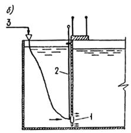
Черт. 1. Схема установки перфорированного распределителя коагулянта (тип I)
а - в вихревом смесителе; б - в перегородчатом или коридорном смесителе, входной камере контактного осветлителя; 1 - распределитель; 2 - секционная свинчивающаяся штанга; 3 - подача коагулянта; 4 - зарядка сифона
1.2. Потери напора при обтекании распределителя водой составляют 10 - 15 см.
1.3. Распределители из перфорированных трубок не рекомендуется применять при обработке воды раствором коагулянта, содержащим нерастворимые примеси.
1.4. Для введения растворов минеральных коагулянтов следует применять распределители из винипластовых труб или из нержавеющей стали.
1.5. Распределитель коагулянта (черт. 2) состоит из центрального бачка со штуцером, на который надевается шланг для подачи коагулянта, и радиальных перфорированных трубок-лучей, имеющих отверстия, направленные по движению потока воды. Распределитель опускается на место установки с помощью свинчивающейся из отдельных секций штанги.
Черт. 2. Перфорированный распределитель коагулянта (тип I)
1 - центральный бачок; 2 - отверстия для ввода коагулянта; 3 - разъемная штанга; 4 - штуцер для присоединения шланга подачи коагулянта; 5 - заглушка; 6 - перфорированная трубка-луч
1.6. Число отверстий в распределителе следует определять по расходу раствора коагулянта и величине потери напора в распределителе 30 - 50 см.
1.7. Расход раствора коагулянта qк, см3/с, следует определять по формуле
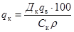
где Дк - доза коагулянта, г/м3;
qв - расход воды через смеситель, м3/с;
Ск - концентрация раствора коагулянта, % по массе;
r - плотность раствора коагулянта концентрации Ск, г/см3.
Плотность раствора коагулянта при заданной концентрации следует принимать по табл. 1.
Таблица 1
|
Концентрация раствора Аl2 (SO4)3, % по массе |
Плотность раствора, г/см3 |
|
1 |
1,009 |
|
2 |
1,019 |
|
4 |
1,040 |
|
6 |
1,060 |
|
8 |
1,083 |
|
10 |
1,105 |
|
20 |
1,226 |
1.8. Расход раствора коагулянта qо, см3/с, проходящего через одно отверстие, следует определять по формуле
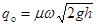
где m - коэффициент расхода, приближенно равный 0,75;
w - площадь отверстия, см2;
g - ускорение свободного падения, м/с2;
h - заданная потеря напора в распределителе (см. п. 1.6).
В табл. 2 приведены расходы раствора коагулянта, проходящего через одно отверстие, при потере напора в распределителе, равной 30 см; указаны рекомендуемые диаметры лучей в зависимости от диаметра отверстий.
Таблица 2
|
Расход раствора коагулянта, проходящего через одно отверстие при h = 30 см, см3/с |
Диаметр луча, мм |
|
|
3 |
12,8 |
15 |
|
4 |
22,8 |
20 |
|
5 |
35,6 |
25 |
|
6 |
51,3 |
32 |
1.9. Число отверстий no в распределителе (при выбранном диаметре отверстий) надлежит определять по формуле
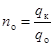
При nо > 32 следует увеличить диаметр отверстий и повторить расчет.
1.10. В целях уменьшения вероятности засорения отверстия должны быть раззенкованы так, чтобы их диаметр увеличивался от внутренней поверхности луча к наружной (после сверления отверстий на лучах сверлом расчетного диаметра).
1.11. Число лучей в распределителе следует выбирать так, чтобы на каждом луче было не более 3 - 4 отверстий (число лучей должно быть не более 8).
1.12. Отверстия на лучах распределителя должны быть расположены симметрично относительно оси трубы, по которой поступает обрабатываемая вода, а на каждом луче - симметрично относительно точки, отстоящей от стенки трубы на 0,25 диаметра трубы D.
Расположение отверстий на лучах распределителя следует выбирать в соответствии с табл. 3.
Таблица 3
|
Расстояние от внутренней стенки трубы до отверстия, доли от D |
|
|
1 |
0,25 |
|
2 |
0,2; 0,3 |
|
3 |
0,2; 0,25; 0,3 |
|
4 |
0,16; 0,22; 0,28; 0,34 |
1.13. Следует предусматривать возможность использования шланга при подаче коагулянта для осуществления обратной промывки распределителя (см. черт. 1).
1.14. Камерно-лучевой распределитель предназначен для смещения обрабатываемой воды с растворами реагентов, за исключением известкового молока.
1.15. Камерно-лучевой распределитель располагается по оси потока обрабатываемой воды (черт. 3) и состоит из: цилиндрической камеры с радиальными перфорированными ответвлениями, имеющими открытые торцы; циркуляционного патрубка, расположенного внутри камеры соосно, открытого с обеих сторон и закрепленного на основании камеры, обращенном к потоку; реагентопровода, присоединенного к камере с противоположной стороны. Реагентопровод может быть снабжен приемной воронкой при подаче раствора реагента самотеком или соединен на фланцах соответствующей коммуникацией при подаче под напором.
Черт. 3. Камерно-лучевой распределитель (тип II, расположение - внутри трубопровода)
1 - корпус трубопровода; 2 - камера распределителя; 3 - лучевое ответвление; 4 - движение воды; 5 - отверстие для выхода раствора; 6 - радиальная распорка; 7 - глухая резиновая муфта, устанавливаемая с зазором 5 - 10 мм от корпуса трубопровода; 8 - циркуляционный патрубок; 9 - подача реагента; 10 - реагентопровод
1.16. Эффективность действия камерно-лучевого распределителя обеспечивается за счет:
поступления части исходной воды через циркуляционный патрубок внутрь камеры;
разбавления этой водой раствора реагента, поступающего внутрь камеры через реагентопровод (предварительное смешение);
увеличения первоначального расхода жидкого реагента, способствующего его рассредоточению в потоке;
равномерного распределения разбавленного раствора по сечению потока.
Поступление в камеру исходной воды через циркуляционный патрубок происходит под действием скоростного напора, имеющего наибольшую величину в ядре потока.
1.17. Камерно-лучевой распределитель размещают, как правило, внутри трубопровода (при вертикальном и горизонтальном его положении), на выходном участке трубопровода, подающего исходную воду, или на входном участке трубопровода, отводящего воду из сооружения, после которого она подлежит дальнейшей реагентной обработке (черт. 4).
Предпочтительный вариант установки распределителей в трубопроводах рекомендуется выбирать с учетом возможности их осмотра и замены без прекращения подачи обрабатываемой воды.
При обработке воды несколькими реагентами распределители растворов следует устанавливать в последовательности, определяемой технологической схемой. При этом отдельные распределители могут быть объединены в блоки.
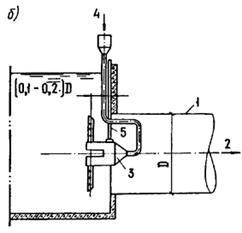
Черт. 4. Схемы установки камерно-лучевых распределителей (тип II)
а - вблизи выходного сечения вертикального трубопровода; б - вблизи входного сечения горизонтального отводящего трубопровода; 1 - трубопровод; 2 - движение воды; 3 - камерно-лучевой распределитель; 4 - подача реагента; 5 - опорная конструкция
1.18. Расчетные показатели камерно-лучевых распределителей и размеры их конструктивных элементов приведены в табл. 4.
Таблица 4
|
Значения показателей |
|
|
Продолжительность смешения при установке внутри трубопровода Т, с |
0,6 - 1,0 |
|
То же, при установке вблизи выходного (входного) сечения трубопровода Т, с |
1,0 |
|
Скорость потока v, м/с |
Не менее 0,5 |
|
Коэффициент гидравлического сопротивления ζ |
2,1 |
|
Отношения размеров элементов к диаметру D подающего (отводящего) трубопровода: |
|
|
диаметр камеры dк |
0,25 - 0,30 |
|
диаметр циркуляционного патрубка dц |
0,15 - 0,20 |
|
диаметр лучевого ответвления dл |
0,05 - 0,08 |
|
диаметр реагентопровода dр |
0,10 - 0,15 |
|
высота камеры Нк |
0,30 |
|
высота циркуляционного патрубка Нц |
0,20 |
|
длина лучевых ответвлений Lл |
0,25 - 0,30 |
|
Число лучевых ответвлений nл |
8 |
|
Диаметр боковых отверстий лучевых ответвлений dо, мм |
4 - 10 |
|
Коэффициент перфорации лучевых ответвлений Кп |
1,4 - 1,6 |
1.19. Диффузорные распределители предназначены для смешения обрабатываемой воды с жидкими реагентами, в особенности с теми, которые содержат значительное количество твердых примесей (известковым молоком, угольной суспензией).
1.20. Диффузорный распределитель устанавливают в вертикальных трубопроводах по оси потока обрабатываемой воды. Он состоит из конического диффузора, обращенного выходным сечением навстречу потоку, и реагентопровода, присоединенного к входному сечению диффузора и снабженного приемником реагента. Горизонтальные кромки выходного сечения диффузора образуют со стенками трубопровода рабочий зазор для пропуска потока обрабатываемой воды (черт. 5).
Черт. 5. Диффузорный распределитель (тип III)
1 - корпус трубопровода; 2 - диффузор; 3 - движение воды; 4 - рабочий зазор; 5 - глухая резиновая муфта; 6 - радиальная распорка; 7 - подача реагента; 8 - приемник реагента; 9 - реагентопровод
1.21. Быстрое распределение реагентов обеспечивается за счет:
поступления части исходной воды в диффузор под действием скоростного напора, имеющего наибольшую величину в ядре потока;
рециркуляции воды внутри диффузора в результате гашения скоростного напора и смешения ее с реагентом, поступающим в диффузор через реагентопровод;
равномерного распределения разбавленного реагента в рабочем зазоре;
турбулентной диффузии, образующейся в результате расширения потока при выходе из рабочего зазора.
Поступление разбавленного реагента из диффузора в рабочий зазор происходит за счет подсоса в область минимальных давлений.
1.22. Диффузорный распределитель следует размещать в трубопроводе свободно и центрировать радиальными распорками с зазорами между их торцами и стенкой трубопровода, равными 5 - 10 мм. Допускается блокировка с камерно-лучевым распределителем (черт. 6).
1.23. Диффузорный распределитель можно одновременно с основным назначением использовать в качестве сужающего устройства для измерения расхода обрабатываемой воды с коэффициентом гидравлического сопротивления, указанным в табл. 5.
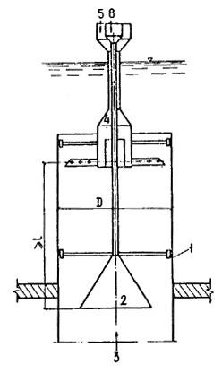
Черт. 6. Схема совмещения диффузорного и камерно-лучевого распределителей
1 - корпус трубопровода; 2 - диффузорный распределитель; 3 - движение воды; 4 - камерно-лучевой распределитель; 5 - подача коагулянта; 6 - подача извести
1.24. Расчетные показатели и размеры диффузорных распределителей указаны в табл. 5.
Таблица 5
|
Значения показателей |
|
|
Продолжительность смешения Т, с |
1,0 |
|
Скорость потока v, м/с |
0,5 - 1,5 |
|
Коэффициент гидравлического сопротивления ζ |
5,9 |
|
Отношения размеров элементов к диаметру D трубопровода: |
|
|
длина участка смешения l |
Не менее 2,0 |
|
диаметр выходного сечения диффузора dк |
0,67 |
|
диаметр реагентопровода dр |
0,10 - 0,15 |
1.25. Распределители струйного типа предназначены для быстрого смешения суспензий реагентов (извести, угля, глины и др.) с водой в напорных трубопроводах диаметром 200 - 1400 мм.
Распределители надлежит выполнять по одной из приведенных на черт. 7 схем, включающих: два распределительных элемента для трубопроводов диаметром D = 200 - 400 мм (вариант а); три - для D = 500 - 700 мм (вариант б); четыре - для D = 800 - 1000 мм (варианты в, г); пять - для D = 1200 - 1400 мм (вариант д).
1.26. Распределители можно устанавливать как на горизонтальных, так и на вертикальных участках трубопроводов. В месте установки распределителя расстояние от поверхности трубопровода до ограждающих конструкций должно быть не менее 300 мм.
1.27. Каждый распределительный элемент распределителя суспензии следует выполнять в виде трубки, введенной срезанным концом в трубопровод через сальниковое устройство и установленной срезом по направлению потока. На противоположном конце трубки снаружи трубопровода устанавливают запорную арматуру или струбцину на резинотканевом рукаве.
1.28. Быстрое смешение обеспечивается струйной подачей суспензии реагента через несколько распределительных элементов перпендикулярно потоку воды с охватом большей части поперечного сечения потока струями реагента.
Для повышения эффективности смешения предусмотрена возможность увеличения длины распространения струй за счет выполнения среза трубки под углом 80°. Продольное перемещение распределительного элемента в сальнике позволяет добиться наибольшей площади охвата поперечного сечения потока воды струей реагента. При скорости выхода струи из распределительного элемента менее средней скорости движения воды в трубопроводе длину введенного в трубопровод участка распределительного элемента следует увеличивать, при большей скорости выхода реагента - уменьшать.
1.29. Диаметр выпускного отверстия распределительного элемента следует принимать равным 8 - 15 мм. При этом следует предусматривать возможность и устройство для очистки от внутренних отложений путем последовательного отключения одной из ветвей распределительного коллектора и применения пробойников соответствующего диаметра (6 - 12 мм).
Черт. 7. Струйные распределители суспензий реагентов (тип IV)
а - д - варианты схем: а - D = 200 - 400 мм; б - D = 500 - 700 мм; в, г - D = 800 - 1000 мм; д - D = 1200 - 1400 мм; е - деталь ввода суспензии; 1 - трубопровод; 2 - реагентопровод; 3 - коллектор распределительный (резинотканевый рукав); 4 - стальная трубка; 5 - арматура запорная; 6 - сальник; 7 - струбцина запорная
1 Следует применять в экспериментальном порядке.
2.1. При обработке природных вод в процессе гидролиза коагулянта образуется значительное количество свободной углекислоты, содержащейся главным образом в газовой фазе вследствие ее малой растворимости. На начальной стадии коагуляции взвешенных веществ при развитой поверхности твердой и газовой фаз происходит интенсивная адсорбция мельчайших пузырьков углекислоты на поверхность микрохлопьев коагулированной взвеси. В результате образуется осадок непрочной, рыхлой структуры.
2.2. Своевременное удаление углекислоты из сферы образования микрохлопьев, достигаемое за счет аэрации воды, значительно интенсифицирует процесс коагуляции. Аэрирование способствует лучшему гидравлическому перемешиванию воды с коагулянтом на стадии скрытой коагуляции. В результате образуются хлопья более прочной и плотной структуры, быстрее осаждающиеся в отстойных сооружениях. Отдувка углекислоты вызывает повышение рН воды, что снижает ее коррозионную активность.
2.3. Метод с применением аэрирования может быть рекомендован при обработке воды с повышенной мутностью и цветностью в целях интенсификации работы водоочистных сооружений, экономии коагулянта и повышения качества осветленной воды по органолептическим показателям (запаху, привкусу, насыщению кислородом).
2.4. Аэрирование может осуществляться при использовании любых технологических схем обработки воды, предусмотренных СНиП 2.04.02-84.
2.5. Оптимальный режим аэрирования следует определять опытным путем в зависимости от качества воды, и прежде всего, от ее мутности и цветности.
2.6. Методика определения оптимальной дозы коагулянта и процента аэрирования воды изложена в пп. 2.22 - 2.24. При невозможности осуществления пробной обработки речной воды расчетные значения дозы коагулянта и процента аэрирования воды для проектируемых водоочистных сооружений ориентировочно можно принимать по табл. 6 (в зависимости от мутности воды). В этом случае интервал между вводом коагулянта и подачей диспергированного воздуха в среднем принимают равным 15 с.
Таблица 6
|
Доза безводного коагулянта для обработки мутных вод, мг/л |
Расход воздуха в зависимости от расхода воды, % |
||
|
согласно СНиП 2.04.02-84 |
с аэрированием |
||
|
До 100 |
25 - 35 |
20 - 30 |
10 |
|
Св. 100 до 200 |
30 - 40 |
25 - 30 |
15 |
|
« 200 « 400 |
35 - 50 |
25 - 40 |
20 |
|
« 400 « 600 |
50 - 60 |
35 - 45 |
20 |
|
« 600 « 800 |
60 - 70 |
40 - 50 |
25 |
|
« 800 « 1000 |
70 - 80 |
50 - 60 |
30 |
Примечание. При обработке цветных вод расход воздуха нужно принимать, %, при цветности воды, град:
до 40 10
св. 40 до 60 15
« 60 « 80 20
2.7. Аэрирование воды допускается осуществлять в открытых смесителях гидравлического типа (вихревых и перегородчатых), дополнительных сооружений не требуется.
2.8. Метод обработки воды с аэрированием требует строгой последовательности ввода коагулянта и сжатого воздуха. Введение диспергированного воздуха в период гидролиза коагулянта и образования микрохлопьев обеспечивает наибольший эффект аэрирования.
2.9. Интервал между вводом коагулянта и воздуха следует принимать 10 - 20 с - время, необходимое для смешения коагулянта с водой и начала его гидролиза. Верхний предел относится к тем случаям, когда процесс смешения замедляется вследствие низкой температуры воды. Оптимальный интервал определяется пробной обработкой воды.
2.10. Раствор коагулянта следует вводить в подающий трубопровод или при входе воды в смеситель, а диспергированный воздух - непосредственно в смеситель.
Время аэрирования равно времени пребывания воды в смесителе.
2.11. Необходимость предварительного хлорирования или подщелачивания, а также применения других реагентов и последовательность их ввода устанавливаются при пробной обработке речной воды.
2.12. Аэраторы в смесителях располагают на глубине не менее 3 м от поверхности воды.
Во избежание подсоса воздуха в трубопровод, отводящий воду из смесителя, водосборные лотки должны работать с подтоплением (открытый перелив исключается); над трубопроводом необходимо предусматривать отражательный щит. Наилучшим вариантом является применение водосборных лотков с затопленными окнами. Устройство самостоятельного воздухоотделителя после смесителя-аэратора не требуется.
2.13. Распределение воздуха в смесителях может быть осуществлено с помощью фильтросных устройств или перфорированных труб. Фильтросы позволяют получить более мелкое дробление пузырьков, при котором расход воздуха для аэрации воды снижается. Однако сопротивление фильтросов значительно выше, и они быстро загрязняются, что влечет за собой частую промывку их и перерасход электроэнергии, поэтому в Пособии рассматриваются только аэраторы из перфорированных труб.
2.14. Для подачи воздуха в трубчатые аэраторы могут быть использованы воздуходувные агрегаты, применяемые на водоочистных станциях для приготовления раствора коагулянта и других нужд реагентного хозяйства. Подающий трубопровод следует присоединять к аэратору сверху и оборудовать расходомером.
2.15. Схема трубчатого аэратора зависит от конструкции смесителя и условий его эксплуатации.
Для обеспечения равномерности распределения воздуха дырчатые трубы аэратора нужно располагать строго горизонтально. На черт. 8 приведены различные схемы трубчатых аэраторов в вихревых и перегородчатых смесителях. На схеме а представлен кольцевой трубчатый аэратор, который следует применять для смесителей вихревого типа. При больших размерах сечения смесителя (в плане) целесообразно кольцевую трубу дополнить радиальными трубами, как показано на схеме б. Схемы в и г применяют при устройстве аэраторов в перегородчатых смесителях. Аэратор в перегородчатых смесителях надлежит выполнять в виде коллектора с ответвлениями. Расстояние между ответвлениями следует принимать не более 0,7 - 1 м.
2.16. Аэраторы в перегородчатых смесителях следует располагать на подставках высотой 0,1 - 0,15 м от дна, а в вихревых смесителях - в конической его части на высоте 1,5 - 2 м над входным отверстием. Наименьшая высота расположения аэратора в вихревых смесителях принимается при наклоне стенок нижней части, равном 45°. Отверстия в трубах аэратора просверливают диаметром 3 - 4 мм по одной или двум образующим с постоянным шагом.
Все отверстия должны быть направлены вниз по вертикальной оси или под углом 45° к ней. Для предотвращения слипания пузырьков минимальное расстояние между отверстиями (в осях) должно быть не менее 10 диаметров распределительной трубы.
2.17. Расчетные скорости движения воздуха, м/с, следует принимать:
на магистральном воздухопроводе 10 - 12
в начале дырчатых ответвлений 8 - 10
на выходе из отверстий 20 - 30
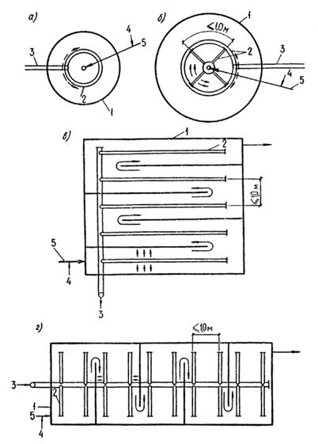
Черт. 8. Трубчатые аэраторы
а, б - при смесителях вихревого типа; в, г - при смесителях перегородчатого типа; 1 - корпус смесителя; 2 - дырчатые ответвления для распределения воздуха; 3 - магистраль (коллектор) для подачи воздуха; 4 - подача коагулянта; 5 - подача воды
Заданные скорости обеспечивают работу всех отверстий аэратора в струйно-барботажном режиме и достаточно эффективную работу аэратора. Неравномерность распределения воздуха по всей поверхности смесителя не превышает 15 - 20 %.
2.18. Для обеспечения эффективности аэрирования интенсивность аэрации следует принимать равной 70 - 80 м3/ (м2 ∙ ч).
2.19. В перегородчатых смесителях площадь сечения коллектора в аэраторе принимают в 3 раза более площади распределительных дырчатых труб.
2.20. Аэраторы можно изготавливать из металлических и неметаллических труб. В качестве металлических труб могут быть использованы обычные стальные трубы (Ст3) при ограниченном периоде (не более 2 - 3 мес.) коагулирования речных вод. При большем периоде коагулирования целесообразно применять коррозионно-стойкие трубы (полиэтиленовые).
2.21. Расчет подводящих воздухопроводов следует производить в соответствии с указаниями «Справочника проектировщика. Канализация населенных мест и промышленных предприятий» (М., Стройиздат, 1981).
2.22. Предварительно следует определить дозу коагулянта без аэрирования в соответствии с общепринятыми методиками.
Определение оптимального режима коагулирования с применением аэрирования надлежит производить с помощью прибора, схема которого приведена на черт. 9.
Черт. 9. Прибор для аэрирования воды в цилиндрах
1 - мерный закрытый цилиндр; 2 - воздушная линия; 3 - лабораторные цилиндры; 4 - стеклянная трубка с резиновым наконечником; 5 - подача воды; 6 - патрубок для опорожнения цилиндра; 7 - штатив
Мерный цилиндр вместимостью 500 мл изготовлен из оргстекла и установлен на штативе. По высоте цилиндр разделен на 20 равных частей. Объем каждой части составляет 5 % объема обрабатываемой воды в цилиндрах. При наполнении водой мерного цилиндра на одно деление такое же количество воздуха вытесняется в обрабатываемую воду. Воздух сверху из цилиндра отводится в стеклянную трубку с резиновым наконечником, которая используется одновременно для диспергирования пузырьков воздуха и перемешивания их со всем объемом обрабатываемой воды.
Расход воздуха и время аэрации соответствуют объему и времени заполнения водой мерного цилиндра.
2.23. Методика пробной обработки воды коагулянтом с применением аэрирования заключается в следующем.
Испытуемую воду наливают в ряд цилиндров вместимостью 500 мл. Дозы коагулянта в цилиндрах такие же, как и в опытах без аэрирования, с интервалом 10 мг/л. После добавления коагулянта производят перемешивание воды в цилиндрах в течение 8 - 10 с, затем осуществляют аэрирование. Расход воздуха варьируют в пределах 10 - 40 % объема воды с интервалом 5 %. Вначале во все цилиндры вводят 10 % воздуха, затем 15 % и т.д. Примерный диапазон и изменение расхода воздуха можно принимать по табл. 6. Продолжительность аэрирования составляет 6 - 8 с. После аэрирования производят быстрое смешение содержимого в цилиндрах палочкой с резиновым наконечником в течение 5 с, а затем - медленное, как в опыте без аэрирования.
В цилиндрах воду отстаивают в течение 30 мин и одновременно ведут визуальное наблюдение за эффектом хлопьеобразования, агломерации и осаждения хлопьев.
Контроль качества воды до и после обработки ее производят так же, как и в предыдущих опытах. В результате устанавливают зависимость степени осветления и обесцвечивания воды от дозы коагулянта и процента аэрирования.
2.24. Оптимальный режим пробной обработки речной воды переносят непосредственно в технологию действующих водопроводных очистных сооружений. При этом возможна некоторая корректировка режима обработки речной воды с учетом особенностей технологической схемы и конструктивного оформления водоочистных сооружений.
1 Следует применять в экспериментальном порядке.
3.1. Контактные камеры хлопьеобразования следует применять в технологических схемах осветления мало- и среднемутных цветных и высоко-цветных вод.
Область применения контактных камер ограничивается мутностью исходной воды до 150 мг/л, цветностью до 250 град.
При более высокой мутности и цветности исходной воды применение контактных камер должно обосновываться соответствующими технологическими изысканиями.
3.2. Работа контактных камер хлопьеобразования основана на принципе контактной коагуляции, обусловленной способностью мелких частиц взвеси и микрохлопьев коагулянта после взаимной нейтрализации электрокинетических зарядов прилипать к поверхности более крупных частиц фильтрующей загрузки.
Адгезия частиц загрязнений и продуктов гидролиза коагулянта происходит до тех пор, пока в результате накопления осадка в порах зернистой контактной среды скорость движения воды не достигнет величины, при которой начинаются отрыв хлопьев осадка и вынос их в отстойники. В дальнейшем контактная камера работает в режиме устойчивого равновесия: масса поступающей в камеру взвеси и продуктов гидролиза коагулянта равна массе твердой фазы выносимого водой из камеры осадка. Образование хлопьев осадка в контактных камерах происходит быстрее, чем в камерах со свободным объемом воды, особенно при маломутных цветных водах и низкой температуре воды. Осадок получается более плотным.
3.3. Технологической схемой станции осветления и обесцвечивания воды должна быть предусмотрена установка перед контактными камерами хлопьеобразования сеток, предпочтительно барабанных, или микрофильтров, а также распределителей коагулянта (см. разд. 1).
3.4. Площадь контактной камеры хлопьеобразования следует определять по удельной нагрузке в расчете на площадь зеркала воды. Удельная нагрузка Vк, м3/ (м2 × ч) или м/ч, назначается в зависимости от концентрации взвеси С0, мг/л, с учетом минимальных температур воды в водоисточнике: при С0 < 5 Vк = 7 - 10; при С0 = 5 - 10 Vк = 10 - 15; при C0 = 20 - 150 Vк = 15 - 20 (C0 - содержание взвеси в воде, включая образующуюся от коагулянта). Меньшие значения следует принимать для минимальных температур воды. Высота слоя контактной загрузки для вод указанных типов рекомендуется 0,7 м.
3.5. В качестве зернистой контактной загрузки камер хлопьеобразования следует использовать полимерные плавающие материалы типа пенопласта полистирольного марок ПСБ и ПСВ, разрешенных для контакта с питьевой водой, или другие аналогичные материалы.
Крупность зерен загрузки - 30 - 40 мм.
3.6. Гранулы пенопласта необходимой крупности целесообразно получать путем нарезки плит с помощью нагретой электрическим током нихромовой проволоки диаметром 0,8 - 1,0 мм. Плиты из пенопласта полистирольного выпускаются в широком ассортименте промышленностью. Для ускорения процесса получения гранул нужного размера целесообразно нихромовую проволоку в виде решетки натянуть на деревянную раму с теплостойкими прокладками (например, асбестовыми), имеющую те же размеры, что и плита.
3.7. Для предотвращения всплытия гранул пенопласта в контактных камерах следует предусматривать закрепленную удерживающую решетку с прозорами на 10 мм менее минимальных размеров зерен загрузки.
Учитывая незначительную объемную массу пенопласта (в 25 - 50 раз менее, чем воды), удерживающая решетка должна быть рассчитана на выталкивающую силу R, т/м2:
R = (rв - rп) (1 - m) Нр + rв Dhз, (4)
где rв - плотность воды, т/м3;
rп - плотность пенопласта, 0,02 - 0,04 т/м3;
m - пористость загрузки, 0,4 - 0,45;
Нp - высота слоя пенопластовой загрузки, м;
Dhз - расчетный перепад давления в загрузке, м (см. п. 3.9).
В решетке должен быть предусмотрен люк, через который производятся загрузка и выгрузка зернистого материала при необходимости проведения его ревизии. Материалом для решетки могут служить арматурные стержни, уголки и т.п. (для них следует предусматривать противокоррозионное покрытие).
3.8. Для задержания пенопласта при опорожнении отстойников в нижней части камеры должна быть установлена вторая нижняя решетка с ячейками, аналогичными верхней решетке.
3.9. Потерю напора (перепад давления) в слое заиленной зернистой контактной загрузки Dhз принимают равной 0,05 - 0,10 м.
3.10. Промывку контактных камер следует осуществлять обратным током воды при кратковременном выпуске ее без остановки станции. Промывку производят периодически при потере напора в камере выше расчетной (см. п. 3.9).
Периодичность промывки зависит от состояния сетчатых защитных устройств на водозаборе или станции водоподготовки и степени загрязненности исходной воды.
3.11. Контактные камеры хлопьеобразования следует принимать встроенными в вертикальные и горизонтальные отстойники.
3.12. В вертикальных отстойниках контактные камеры располагают в центральной части отстойника. Воду в камеру подают на высоту 0,2 - 0,3 м над контактной загрузкой (черт. 10).
Черт. 10. Вертикальный отстойник с контактной камерой хлопьеобразования
1 - отвод отстоенной воды; 2 - подача исходной воды; 3 - контактная камера хлопьеобразования; 4 - верхняя решетка; 5 - плавающая загрузка; 6 - нижняя решетка; 7 - зона накопления и уплотнения осадка; 8 - удаление осадка
3.13. При осветлении воды в горизонтальных отстойниках контактные камеры располагают в начале отстойников (черт. 11).
Черт. 11. Горизонтальный отстойник с контактной камерой хлопьеобразования
1 - подача исходной воды; 2 - нижняя решетка; 3 - верхняя решетка; 4 - контактная зернистая загрузка; 5 - отвод осветленной воды; 6 - система удаления осадка из отстойника; 7 - люк для ревизии трубопроводов; 8 - система удаления осадка из камеры
3.14. Над камерами хлопьеобразования необходимо предусматривать павильоны шириной не более 6 м.
3.15. Отвод воды из камеры хлопьеобразования в горизонтальный отстойник следует предусматривать над стенкой (затопленный водослив), отделяющей камеру от отстойника, при скорости движения воды не более 0,05 м/с; за стенкой устанавливается подвесная перегородка, погруженная на 1/4 высоты отстойника и отклоняющая поток воды книзу.
3.16. На уровне верхней кромки затопленного водослива закрепляется решетка (см. п. 3.24).
3.17. Распределение воды по площади камеры хлопьеобразования следует предусматривать с помощью перфорированных труб с отверстиями, направленными вниз под углом 45°. Расстояние между осями перфорированных труб следует принимать не более 2 м. Распределительные трубы размещают непосредственно под нижней решеткой, расположенной на расстоянии 1 - 1,2 м от верхней решетки.
3.18. Днище камеры следует выполнять с углом наклона граней 45°, в нижней части сходящихся граней располагают трубы для удаления осадка.
3.19. Для осуществления ревизии дна камеры и трубопроводов подачи воды и отвода осадка в нижней части затопленного водослива, отделяющего камеру от отстойника, следует предусматривать люк.
3.20. Основные технологические и конструктивные параметры контактных камер при их размещении в осветлителях следует принимать в соответствии с рекомендациями пп. 3.4 - 3.7.
3.21. В отличие от указанных рекомендаций высота слоя зернистой загрузки должна составлять 0,3 - 0,4 м (большие значения - при мутности исходной воды менее 5 мг/л).
3.22. Контактные камеры располагают по всей площади рабочих коридоров осветлителей в их нижней конической части (черт. 12). Решетку для предотвращения всплытия гранул пенопласта закрепляют на расстоянии 0,9 - 1,0 м над перфорированной трубой, подающей воду в осветлитель. Нижняя решетка не требуется.
3.23. При наличии контактных камер хлопьеобразования скорость восходящего потока воды в зоне осветления над слоем взвешенного осадка надлежит принимать на 20 - 30 % более, чем указано в СНиП 2.04.02-84.
3.24. При использовании контактных камер необходимо обеспечить возможность спуска воды из рабочих коридоров осветлителей через распределяющие исходную воду дырчатые трубы, подсоединив их к коммуникациям сброса осадка.
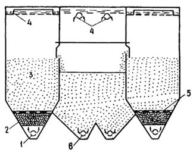
Черт. 12. Осветлитель с контактной камерой хлопьеобразования
1 - подача исходной воды; 2 - контактная камера хлопьеобразования; 3 - зона взвешенного осадка; 4 - отвод осветленной воды; 5 - решетка; 6 - удаление осадка
4.1. Отстойные сооружения (вертикальные и горизонтальные отстойники и осветлители со взвешенным осадком), оборудованные тонкослойными элементами, предназначены для осветления природных поверхностных вод малой и средней мутности и цветности на водоочистных станциях систем хозяйственно-питьевого и промышленного водоснабжения.
4.2. В сооружениях тонкослойного осветления осаждение взвеси происходит в наклонных элементах малой высоты. При этом обеспечиваются быстрое выделение взвеси и ее сползание по наклонной плоскости элементов в зоны хлопьеобразования и осадкоуплотнения.
4.3. Тонкослойные отстойные сооружения можно применять как при реконструкции действующих отстойников и осветлителей с целью их интенсификации, так и для вновь проектируемых водоочистных станций.
4.4. Рекомендации настоящего Пособия распространяются на сооружения с противоточным движением воды и осадка в тонкослойных элементах.
4.5. Требования к качеству и методам обработки воды, поступающей на сооружения с тонкослойными элементами, аналогичны требованиям для других типов отстойных сооружений. Производительность тонкослойных отстойников и осветлителей не ограничивается.
4.6. Тонкослойный вертикальный отстойник (черт. 13) работает следующим образом. Исходная вода, обработанная реагентами, поступает в расположенную в центральной части отстойника камеру хлопьеобразования и затем, после ее прохождения, вместе с образующимися хлопьями проходит последовательно распределительную зону и тонкослойные наклонные элементы. Осветленная вода через сборные желоба отводится из сооружения. Осадок из отстойника сбрасывается через систему удаления осадка.
Черт. 13. Вертикальный отстойник, оборудованный тонкослойными блоками
1 - отвод отстоенной воды; 2 - подача исходной воды; 3 - камера хлопьеобразования; 4 - тонкослойные блоки; 5 - зона распределения воды; 6 - зона накопления осадка; 7 - удаление осадка
4.7. В тонкослойном горизонтальном отстойнике (черт. 14) обработанная реагентами исходная вода поступает во встроенную камеру хлопьеобразования (любого из рекомендуемых действующими нормами типов). Из камеры поток воды, двигаясь горизонтально под блоками и поднимаясь снизу вверх, проходит тонкослойные элементы и поступает в расположенную над ними сборную систему и карман. Накапливающийся в отстойнике осадок периодически сбрасывается через систему удаления осадка.
4.8. Тонкослойный осветлитель (черт. 15) работает следующим образом. Исходная вода, обработанная реагентами, поступает в зоны предварительного хлопьеобразования (взвешенного осадка) и далее через распределительную зону и зону сползающего осадка поступает в тонкослойные элементы. Осветленная вода, пройдя тонкослойные элементы, поступает в сборные устройства и отводится из сооружения. Осадок из зоны его накопления удаляется через перфорированные трубы.
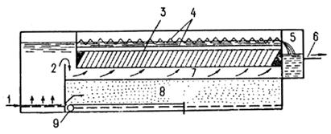
Черт. 14. Горизонтальный отстойник, оборудованный тонкослойными блоками
1 - подача исходной воды; 2 - камера хлопьеобразования; 3 - тонкослойные блоки; 4 - сборные желоба; 5 - карман сбора осветленной воды; 6 - отвод осветленной воды; 7 - зона распределения воды; 8 - зона накопления осадка; 9 - удаление осадка
Черт. 15. Осветлитель, оборудованный тонкослойными блоками
1 - подача исходной воды; 2 - отвод осветленной воды; 3 - тонкослойные блоки; 4 - окна для отвода осадка; 5 - зона сползания осадка; 6 - зона взвешенного осадка; 7 - зона накопления осадка; 8 - удаление осадка
4.9. Тонкослойные элементы или блоки могут выполняться из мягких или полужестких полимерных пленок, соединенных в сотовую конструкцию, или из жестких листовых материалов в виде отдельных полок (черт. 16).
4.10. Размеры в плане отдельных блоков для удобства их монтажа и эксплуатации следует принимать 1 ´ 1 - 1,5 ´ 1,5 м с учетом фактических размеров сооружения. Высоту поперечного сечения тонкослойного ячеистого элемента рекомендуется принимать равной 0,03 - 0,05 м. Ячейки могут быть приняты любой формы, исключающей накопление в них осадка. Угол наклона элементов необходимо принимать 50 - 60° (меньшие значения - для более мутных вод, бóльшие - для маломутных цветных). Длину тонкослойных элементов следует определять специальным расчетом и принимать 0,9 - 1,5 м (см. п. 4.14).
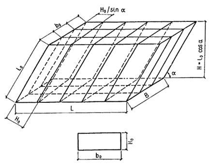
Черт. 16. Конструктивные параметры тонкослойных элементов в блоке
l0 - длина тонкослойного элемента; b0 - ширина тонкослойного элемента; H0 - высота тонкослойного элемента; Н - высота тонкослойного сотоблока; L - длина тонкослойного сотоблока; В - ширина тонкослойного сотоблока
4.11. Установку отдельных блоков в отстойниках и осветлителях следует осуществлять с помощью специальных несущих конструкций, расположенных под или над ними, либо их креплением к элементам сборной системы (желобам, лоткам, трубам) и промежуточным стенкам сооружений. При этом могут быть использованы стальные или полимерные трубы, дерево, арматурная проволока, профилированные конструкции и т.д.
4.12. Необходимо обеспечивать герметичность зазоров между отдельными блоками и внутренними стенками сооружений, например, с помощью резиновых прокладок.
4.13. Сбор осветленной воды из тонкослойных сооружений следует осуществлять по желобам с затопленными отверстиями или открытыми водосливами, например, треугольного профиля, расположенными на расстоянии не более 2 м один от другого.
4.14. Расчет технологических и конструктивных параметров сооружений, а также отдельных тонкослойных элементов следует производить по зависимости
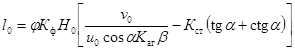
Для удобства расчета формула (5) приведена к виду
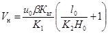
К2 = 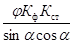
j - коэффициент, учитывающий влияние гидродинамических условий потока в тонкослойных элементах (см. п. 4.16);
Кф - коэффициент, учитывающий форму поперечного сечения тонкослойных элементов (см. п. 4.19);
Н0 - высота тонкослойного элемента, м;
v0 - средняя скорость потока в тонкослойных элементах, м/ч;
u0 - расчетная скорость осаждения взвеси, м/ч;
a - угол наклона тонкослойных элементов к горизонту, град;
b - коэффициент, учитывающий стесненное осаждение взвеси под тонкослойными элементами;
Каг - коэффициент агломерации, учитывающий влияние осадка, выделяющегося из тонкослойных элементов, на интенсификацию хлопьеобразования (см. п. 4.17);
Кст - коэффициент, учитывающий стеснение сечения потока в тонкослойном элементе сползающим осадком (см. п. 4.17);
Vн - удельная нагрузка или производительность сооружения в расчете на площадь зеркала воды, м3/ (м2 × ч) или м/ч;
К1, К2 - обобщенные расчетные коэффициенты [см. формулы (8) и (9)];
l0 - длина тонкослойного элемента, м;
Ко.и - коэффициент, учитывающий гидравлическое совершенство тонкослойного сооружения и степень его объемного использования - отношение фактического к расчетному времени пребывания воды (см. п. 4.20);
Кк - конструктивный коэффициент, равный отношению фактической открытой для движения воды площади тонкослойных элементов к общей площади зеркала воды отстойного сооружения (см. п. 4.21).
4.15. Расчетная скорость осаждения взвеси должна приниматься в соответствии с опытом эксплуатации сооружений, работающих в аналогичных условиях. При отсутствии такого опыта следует производить технологическое моделирование процессов хлопьеобразования и тонкослойного осаждения с целью определения требуемого значения u0. При невозможности указанного значение u0 определяют по данным СНиП 2.04.02-84.
4.16. Коэффициент j следует определять по данным табл. 7, в которой b0 - ширина тонкослойного элемента, Н0 - высота тонкослойного элемента.
Таблица 7
|
Значение b0 / Н0 |
||||
|
1,0 - 2,5 |
2,5 - 5,0 |
5,0 - 10 |
> 10 |
|
|
Значение j |
1,25 |
1,15 |
1,05 |
1,0 |
4.17. Значение Кст рекомендуется принимать в среднем 0,7 - 0,8 (большие значения - для более мутных вод, меньшие - для маломутных цветных вод).
4.18. Значение произведения b Каг следует принимать равным 1,15 - 1,3 (большие значения - для тонкослойного осветлителя, меньшие - для тонкослойного вертикального отстойника).
4.19. Значение коэффициента формы Кф зависит от фактической формы и конфигурации тонкослойных элементов (ячеек) в поперечном сечении: для сечения прямоугольной формы - 1,0; круглой - 0,785; треугольной - 0,5; шестиугольной - 0,65 - 0,75; при использовании труб и межтрубного пространства - 0,5.
4.20. Величину Ко.и для предварительных расчетов рекомендуется принимать равной 0,6 - 0,75.
4.21. Значение коэффициента Кк следует определять по фактическим данным с учетом толщины материала для тонкослойных элементов. Предварительно рекомендуется принимать его равным 0,70 - 0,95 (большие значения - для тонких пленочных материалов).
4.22. Удельные нагрузки на тонкослойные сооружения, отнесенные к площади, занятой тонкослойными элементами, и с учетом показателей качества воды могут быть приняты по СНиП 2.04.02-84.
4.23. Полученные по расчету размеры тонкослойных элементов и тонкослойных сооружений в целом, а также значения удельных нагрузок надлежит проверить и скорректировать с учетом обеспечения минимального времени между выпусками осадка 6 - 8 ч. При этом высоту защитной зоны для вертикального отстойника следует принять равной 1,5 м, для горизонтального - 1 м.
4.24. Высоту зоны сбора осветленной воды рекомендуется принимать не менее 0,4 - 0,5 м.
4.25. В тонкослойных осветлителях для предотвращения образования зон повышенной концентрации взвеси нижнюю кромку тонкослойных блоков необходимо располагать непосредственно над верхней отметкой осадкоприемных окон.
Пример 1. Расчет вертикального тонкослойного отстойника.
Качество исходной воды: цветность - 100 град; содержание взвеси - 50 мг/л; доза коагулянта - 60 мг/л по безводному продукту; расчетная скорость осаждения взвеси - 0,3 мм/с » 1,08 м/ч.
Тонкослойные элементы прямоугольного сечения имеют размеры в плане 0,05 ´ 0,05 м (высота ´ ширина) и угол наклона 60° при значениях Кк = 0,75 Ко.и = 0,7.
По расчету объема зоны накопления осадка и периода межпродувочного цикла значение нагрузки на сооружения по условиям накопления взвеси принято не более 4 м/ч.
Длина тонкослойных элементов определяется по формулам (7) - (9):
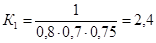
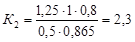
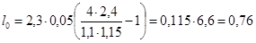
Принимаем длину тонкослойных элементов равной 0,8 м при нагрузке 4 м/ч.
Пример 2. Расчет тонкослойного осветлителя.
Качество исходной воды: цветность - 20 град; содержание взвеси - 500 мг/л; доза коагулянта - 50 мг/л; расчетная скорость осаждения взвеси - 0,40 мм/с » 1,44 м/ч.
Тонкослойные элементы такие же, как в примере 1 (за исключением угла наклона, равного 55°).
Значения конструктивного коэффициента и коэффициента объемного использования принимаются соответственно Кк = 0,7 и Ко.и = 0,6.
С учетом реконструкции существующих осветлителей и их фактических размеров установлено, что нагрузка на сооружения не может быть более 6 м/ч, а высота тонкослойных элементов - 1,2 м.
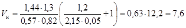
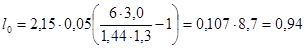
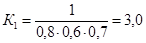
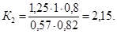
Принимаем удельную нагрузку равной 6 м/ч и длину тонкослойных элементов 1,0 м.
5.1. Система предназначена для удаления осадка из горизонтальных отстойников открытого и закрытого типов после отключения отстойников с помощью напорных струй воды без применения ручного труда.
5.2. Гидросмыв наиболее целесообразно применять при наличии малоподвижных осадков, образующихся в условиях очистки мутных вод и характеризующихся содержанием взвеси не более 1500 мг/л.
5.3. Высота слоя осадка в отстойнике должна быть не более 1 - 1,5 м.
5.4. Система (черт. 17) включает в себя устройства для подачи воды и отвода размытого осадка.
Подача воды производится с помощью насоса, коллекторов, разводящих труб и специальных насадок. Отвод воды с осадком осуществляется с помощью лотков, устроенных в днище отстойника, и далее по трубам в приемный резервуар сооружений по обработке промывных вод и осадков.
Черт. 17. Система гидравлического смыва осадка в горизонтальных отстойниках
1 - насос для подачи воды; 2 - подводящие трубы; 3 - коллектор; 4 - разводящие трубы; 5 - патрубки с насадками; 6 - лотки
5.5. Для смыва осадка надлежит использовать сырую воду или воду из верхней части отстойника, сбрасываемую перед его очисткой в специальный запасной резервуар.
5.6. Управление системой осуществляют с помощью задвижек, установленных на напорном и всасывающем трубопроводах насоса.
Перед пуском системы в работу закрывают задвижку на трубопроводе, подающем обрабатываемую воду в отстойник, открывают задвижку на канализационном трубопроводе и производят опорожнение отстойника примерно на 2/3 его высоты. Затем открывают задвижку на напорном трубопроводе, подающем воду в систему удаления осадка, и включают насос. При этом осадок, накопившийся в отстойнике, взмучивается, происходят его смыв и удаление одновременно с опорожнением отстойника.
Выключение системы производят через 3 - 5 мин после полного опорожнения отстойника. Ориентировочно время удаления осадка составляет 30 - 40 мин.
5.7. Коллектор напорной системы следует размещать при длине отстойника, м:
40 - 45 - в начале разводящих труб;
60 - в средней его части с симметричным (по отношению к коллектору) расположением разводящих труб;
90 - в средней части отстойника надлежит устраивать два коллектора, при этом отстойник делится на две симметричные секции и в каждый коллектор подается вода от насоса по отдельной трубе.
5.8. Разводящие трубы следует укладывать по дну отстойника. При ширине отстойника до 4,5 м необходимы две нитки труб, прокладываемых вдоль стен отстойника. Лоток для сбора осадка и промывной воды размещают в этом случае по оси отстойника.
При ширине отстойника, равной 6 м, устанавливают три ряда разводящих труб, один из которых размещают по оси отстойника (в этом случае в отстойнике устраивают два отводящих лотка посредине между разводящими трубами).
5.9. Разводящие стальные трубы следует выполнять с переменным (телескопическим) сечением, что увеличивает равномерность распределения воды и позволяет снизить расход металла. Переход с одного диаметра труб на другой надлежит предусматривать посредине длины участка. Для предотвращения заиления пространство под трубами заливают бетоном (марки не ниже 200) и устраивают откосы.
5.10. На каждой разводящей трубе (на трубах, лежащих у стен, - с одной стороны, на центральных - с обеих сторон) вваривают стальные патрубки диаметром 32 мм под углом 45° к оси отстойника по ходу движения осадка при смыве. Патрубки имеют резьбу, на которую наворачивают соединительные части (типа футорки). В соединительные части ввинчивают и закрепляют (с помощью контргаек) бронзовые насадки длиной 50 - 60 мм, наружным диаметром 16 - 18 мм и внутренним - 10 мм. Входные и выходные кромки насадки скругляют.
Расстояния между патрубками с насадками - 1 м, а на последней четверти длины труб - 1,5 м.
5.11. Насадки на разводящих трубах, находящихся у противоположных стен отстойника и в центре, должны быть расположены в шахматном порядке, чтобы факелы соседних и противоположных струй сливались и частично пересекались. На трубах в конце отстойника наваривают стальные заглушки.
5.12. Расчет системы смыва осадка производят, исходя из получения в расчетном сечении отстойника размывающей скорости струи vс = 0,5 - 0,8 м/с (в зависимости от плотности и прочности осадка).
5.13. Скорость осевой компактной струи vс, м/с, в пределах основного потока для затопленной симметричной струи определяют, исходя из соотношения
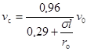
где s - экспериментальная константа, равная 0,075;
l - расстояние от насадки до расчетного сечения (в данном случае - до приемной канализационной трубы или лотка), м;
ro - радиус отверстия насадки, м;
v0 - начальная скорость струи на выходе из насадки, м/с.
Внутренний радиус насадки ro принимается равным 0,005 м; расстояния от насадки до расчетного сечения l, м, равны:
для отстойников шириной 4,5 м 2,25
« « « 6,0 м 1,50
Тогда из формулы (10) начальная скорость на выходе из насадки будет: при l = 2,25 м v0 = 35,5 vc м/с; при l = 1,50 м v0 = 23,7 vc м/с.
5.14. Расход qн, м3/с, через насадку определяется по формуле
qн = w vо, (11)
где w - площадь сечения отверстия насадки, м2.
Для принятого диаметра насадки 10 мм получим w = 78,5 × 10-6 м2, тогда qн = 78,5 × 10-6 vо, м3/с.
5.15. Напор hн, м, необходимый для получения начальной скорости, определяется по формуле
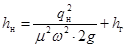
где m - коэффициент расхода, принимаемый равным 0,59 - 0,64;
g - ускорение свободного падения, м/с2;
hг - рабочая высота столба воды в отстойнике при промывке, м.
5.16. Расчетные расходы воды для каждого участка разводящих труб определяют в зависимости от числа насадок на нем и расхода воды, проходящего через одну насадку.
5.17. Диаметр труб и скорость движения воды в них определяют по вычисленным значениям расходов. При этом скорость движения воды в трубах не должна превышать 1,5 м/с.
Проверку расчетных и конструктивно принятых параметров следует производить по формуле
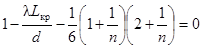
где Lкр - критическая длина дырчатой трубы, при которой потеря напора полностью компенсируется восстановлением скоростного напора, м;
l - коэффициент сопротивления трению по длине, равный для стальных труб 0,03 - 0,02;
d - диаметр дырчатой трубы, м;
n - число отверстий (насадок).
Для упрощения расчетов критическую длину дырчатой трубы Lкр по формуле (13) допускается определять для суженной ее части.
5.18. Диаметры коллекторов и подводящей трубы следует определять исходя из приходящихся на них расходов воды и скорости ее движения, принимаемой 0,8 - 1,2 м/с.
Напор промывного насоса h, м, надлежит определять по формуле
h = hн + 1,1 hl, (14)
где hн - напор у насадки, определяемый по формуле (12),
hl - сумма потерь напора на отдельных участках труб, м.
Таблица 8
|
Параметры системы гидросмыва осадка |
||||||||||||
|
диаметр подводящих труб и коллектора, мм |
число разводящих труб, шт. |
диаметры телескопических труб, мм |
число насадок, шт. |
расстояние от насадки до расчетного сечения, м |
скорость струи в расчетном сечении, м/с |
расход воды, л/с |
||||||
|
длина |
ширина |
центральных |
боковых |
центральных |
боковых |
бокового трубопровода |
центрального трубопровода |
всей системы |
||||
|
1 |
2 |
3 |
4 |
5 |
6 |
7 |
8 |
9 |
10 |
11 |
12 |
13 |
|
40 |
4,5 |
300 |
- |
2 |
- |
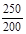 |
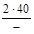 |
2,26 |
0,54 |
60 |
- |
120 |
|
45 |
6,0 |
400 |
1 |
2 |
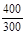 |
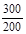 |
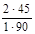 |
1,51 |
0,82 |
67,5 |
135 |
270 |
|
60 |
6,0 |
450 |
1 |
2 |
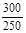 |
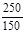 |
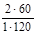 |
1,51 |
0,82 |
90 |
180 |
360 |
|
90 |
6,0 |
2 × 400 |
2 |
4 |
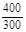 |
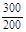 |
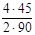 |
1,51 |
0,82 |
67,5 |
135 |
2 × 270 |
Примечания: 1. В гр. 6 и 7 над чертой указаны диаметры телескопических напорных труб на начальном, под чертой - на конечном участках.
2. В гр. 8 над чертой первая цифра - число боковых труб, вторая - число насадок на них, под чертой первая цифра - число центральных труб, вторая - число насадок на них.
3. Основные параметры системы указаны ориентировочно. В каждом конкретном случае следует производить расчет системы и выбор насосов исходя из местных условий.
5.19. Расчетные параметры системы гидравлического удаления осадка в зависимости от размеров наиболее часто применяемых отстойников приведены в табл. 8.
5.20. Система удаления воды и осадка должна быть рассчитана на пропуск воды, сбрасываемой из отстойника и подаваемой насосами.
6.1. Флотационные сооружения надлежит применять для предварительного осветления и обесцвечивания природной водой перед подачей ее на фильтры. Они могут быть использованы как при новом строительстве, так и при реконструкции существующих водоочистных станций.
6.2. Наиболее эффективная область применения флотационных сооружений - осветление вод поверхностных источников (озер, водохранилищ, рек и т.п.) с небольшим количеством мелкодисперсных взвешенных веществ (не более 150 мг/л) и повышенной цветностью (до 200 град) при содержании фитопланктона и плавающих нефтепродуктов.
6.3. Возможность и целесообразность использования флотационного осветления воды в каждом конкретном случае должны быть обоснованы технологическими испытаниями, произведенными в характерные периоды года по методике, приведенной в пп. 6.16 - 6.20.
Количество взвешенных веществ в воде после флотационных сооружений не должно превышать 10 мг/л.
6.4. Преимущества флотационных сооружений по сравнению с другими сооружениями предварительного осветления (осветлителями со взвешенным осадком, отстойниками) заключаются в следующем:
значительно ускоряется процесс выделения взвеси из воды, благодаря чему уменьшается общий объем очистных сооружений;
улучшается их санитарное состояние вследствие постоянного удаления выделенных загрязнений;
более эффективно удаляется фитопланктон, что в большинстве случаев позволяет отказаться от установки микрофильтров;
удаляются из воды плавающие и плохооседающие примеси.
6.5. Очистные сооружения с флотационным осветлением воды имеют тот же состав основных и вспомогательных сооружений, что и обычные станции двухступенчатого осветления, за исключением отстойников или осветлителей со взвешенным слоем осадка, заменяемых флотационными установками.
6.6. В составе флотационных сооружений необходимо предусматривать флотационные камеры, узел подготовки и распределения водовоздушного раствора, устройства для удаления и отвода флотационной пены.
Перед осветлением воды флотацией надлежит предусматривать камеры хлопьеобразования, совмещенные с флотационными камерами.
Схема флотационных сооружений представлена на черт. 18.
Черт. 18. Флотационная установка
1 - подача исходной воды с реагентами; 2 - отвод осветленной воды; 3 - флотационная камера; 4 - лотки для сбора пены; 5 - распределительная система; 6 - напорный бак; 7 - насос; 8 - компрессор; 9 - подача воды, насыщенной воздухом; 10 - камера хлопьеобразования
6.7. Флотационная камера (круглая или прямоугольная в плане) должна рассчитываться на удельную нагрузку 6 - 8 м3/ч на 1 м площади.
Глубина слоя воды во флотационной камере должна быть 1,5 - 2,5 м. Длина флотационной камеры выбирается равной 3 - 9 м, ширина - не более 6 м, отношение ширины к длине - 2/3 - 1/3.
6.8. Во входной части флотационной камеры надлежит устанавливать струенаправляющую перегородку с наклоном 60 - 70° к горизонтали в сторону движения воды в камере.
6.9. Скорость входа обрабатываемой воды во флотационную камеру должна быть не более скорости выхода ее из камеры хлопьеобразования. Скорость движения воды над струенаправляющей перегородкой следует принимать 0,016 - 0,02 м/с.
6.10. Сбор осветленной воды во флотационной камере необходимо осуществлять равномерно по ее ширине или окружности из нижней части камеры с помощью подвесной стенки и направлять поток вверх (к отводу воды из камеры), или с помощью отводящей системы из перфорированных труб. Скорость движения воды под подвесной стенкой или в отверстиях отводящих дырчатых труб принимается 0,9 - 1,2 м/с.
6.11. Днище флотационной камеры должно иметь уклон 0,01 к трубопроводу для опорожнения.
6.12. Подготовку водовоздушного раствора следует осуществлять путем насыщения воды воздухом под давлением 0,6 - 0,8 МПа в специальных напорных емкостях. Для приготовления водовоздушного раствора надлежит использовать воду после фильтров.
Расход воды следует принимать 8 - 10 % расхода очищаемой воды.
Подача воздуха в напорную емкость должна осуществляться от автоматизированной компрессорной установки.
Расход воздуха должен составлять 0,9 - 1,2 % расхода очищаемой воды.
Примечание. Напорная емкость должна иметь внутреннее антикоррозионное покрытие, оборудоваться предохранительным клапаном и выполняться в соответствии с требованиями, предъявляемыми к сосудам, работающим под давлением.
6.13. Отвод водовоздушного раствора от напорной емкости к флотационным камерам следует производить по стальному трубопроводу. Потери напора в нем не должны превышать 0,8 - 1,0 м.
На трубопроводе допускается установка только отключающей арматуры.
6.14. Для равномерного распределения водовоздушного раствора в объеме обрабатываемой воды и для создания условий, обеспечивающих получение мелких воздушных рабочих пузырьков, во флотационной камере надлежит устраивать распределительную систему, состоящую из дырчатого трубопровода и расположенного под ним кожуха, выполненного из материала, стойкого к кислородной коррозии. Распределительную трубу следует устанавливать во входной части флотационной камеры (в отсеке, образованном ее торцевой стенкой и струенаправляющей перегородкой) на расстоянии 250 - 350 мм от дна камеры. Скорость выхода водовоздушного раствора из отверстий распределительной системы надлежит принимать равной 20 - 25 м/с, диаметр отверстий - 5 - 8 мм. Отверстия следует располагать равномерно в один ряд по нижней образующей трубы. Днище защитного кожуха размещают под отверстиями распределительной системы на расстоянии 80 - 100 мм.
В конце распределительного трубопровода следует устанавливать вентиль или кран для промывки распределительной системы.
6.15. Удаление пены с поверхности воды во флотационной камере должно быть осуществлено кратковременным подъемом уровня воды с отводом ее через подвесные лотки, расположенные равномерно по площади камеры, или с помощью скребковых механизмов, перемещающих пену к сборным лоткам.
Верхние кромки лотков необходимо располагать на одной общей отметке на 10 - 15 мм выше уровня воды во флотационной камере.
Днища лотков следует выполнять с уклоном 0,025 в сторону отвода пены.
Потери воды при сбросе пены подъемом уровня воды следует принимать 1,0 - 1,5 % расхода обрабатываемой воды.
При удалении пены скребковыми механизмами скорость перемещения скребков в прямоугольных камерах следует принимать не более 0,02 м/с, в круглых - окружную скорость 0,015 - 0,02 м/с при частоте вращения скребков 5 - 10 об/с.
Обработку пены, удаляемой одновременно с частью обрабатываемой воды, необходимо производить аналогично обработке осадка, сбрасываемого из отстойников или осветлителей со взвешенным осадком, в соответствии с требованиями СНиП 2.04.02-84.
6.16. С целью определения возможности применения напорной флотации для предварительного осветления воды конкретного водоисточника и получения основных расчетных параметров для расчета флотационных установок производятся технологические исследования на специальной лабораторной установке (черт. 19).
Черт. 19. Установка для проведения технологического анализа воды
1 - компрессор; 2 - вентиль воздушный; 3 - манометр; 4 - напорный бак; 5 - игольчатый вентиль водовоздушного раствора; 6 - флотационная колонка; 7 - электропривод; 8 - пробоотборники; 9 - мешалка; 10 - вентиль опорожнения флотационной колонки; 11 - вентиль сброса избытка воздуха
6.17. Лабораторная установка состоит из следующих основных элементов:
флотационной колонки, выполненной из прозрачной пластмассовой трубы диаметром 60 - 70 мм, высотой 400 - 600 мм, имеющей деления по высоте и оборудованной перемешивающим устройством, вентилями и пробоотборниками;
напорного бака для подготовки водовоздушного раствора вместимостью 2 л, выполненного из стального сосуда, рассчитанного на рабочее давление 0,8 - 0,9 МПа и оборудованного предохранительной запорной арматурой и манометром;
лабораторного компрессора, рассчитанного на подачу сжатого воздуха под давлением до 0,8 - 0,9 МПа.
Примечания: 1. Вместо компрессора могут быть использованы баллон со сжатым воздухом, оборудованный редуктором, понижающим давление до рабочего, или другие источники сжатого воздуха.
2. Напорный бак и его соединительные коммуникации выполняют и испытывают в соответствии с «Правилами устройства и безопасной эксплуатации сосудов, работающих под давлением» Госгортехнадзора СССР.
6.18. Для проведения технологических исследований необходимо кроме лабораторной установки иметь исходную воду в объеме 10 - 12 л и рабочие растворы реагентов (коагулянта, хлора, извести и т.д.).
6.19. Технологические исследования следует производить в такой последовательности (см. черт. 19):
1) производится выбор доз реагентов в отдельных цилиндрах по общепринятой методике пробного коагулирования для двухступенчатой очистки воды;
2) до начала работы на установке предварительно подготавливается водовоздушный раствор. До этого в напорный бак 4 через флотационную колонку 6 и трубопровод с вентилем 5 заливается 1 - 1,5 л чистой водопроводной воды, после чего вентиль 5 закрывается, включается компрессор 1 и открывается подача воздуха в напорный бак через вентиль 2. С помощью сбросного вентиля 11 по манометру 3 устанавливается рабочее давление, равное 0,5 - 0,8 МПа. При этом избыток воздуха сбрасывается через вентиль 11 (время растворения воздуха в воде должно быть не менее 10 - 12 мин);
3) в отдельный цилиндр наливается 1 л исходной воды, в которую вводятся реагенты согласно выбранным дозам. Производится тщательное перемешивание реагентов с водой;
4) после перемешивания обрабатываемая вода переливается во флотационную колонку 6, которая заполняется на 60 - 70 % ее объема. Вентили 5 и 10 при этом должны быть закрыты;
5) включается в работу электропривод 7, который приводит во вращение мешалку 9 с лопастями (скорость вращения мешалки должна быть 15 - 20 об/мин), что способствует образованию хлопьев гидроксидов;
6) после образования хорошо сформированных крупных, но неоседающих хлопьев гидроксидов в исходную воду через игольчатый вентиль 5 вводится предварительно подготовленный водовоздушный раствор в количестве от 5 до 20 % объема исходной воды. При этом в нижней части флотационной колонки должны появиться мелкие пузырьки воздуха, равномерно распределяющиеся в обрабатываемой воде по всей площади колонки;
7) отбор проб производят через пробоотборники 8 с определенной высоты с интервалом 1 - 1,5 мин до получения воды постоянного качества. Качество исходной и осветленной воды определяется общепринятыми методами.
В конце флотационного осветления замеряется толщина слоя образованной пены и проводится визуальное наблюдение за ее структурой и плотностью;
8) по окончании технологических исследований вода из флотационной колонки 6 сбрасывается через вентиль 10 и колонка промывается чистой водопроводной водой.
В указанной последовательности следует производить технологические исследования другим сочетанием приемлемых доз реагентов, давлений и расходов водовоздушного раствора.
6.20. Оптимальные параметры давления и расхода водовоздушного раствора надлежит определять по результатам технологических исследований, учитывая высоту слоя воды и время ее нахождения во флотационной колонке, позволяющие получить необходимую степень осветления воды. Необходимость в установке микрофильтров следует определять по эффективности содержания фитопланктона.
Пересчет рабочей высоты флотационной камеры и времени флотации производят по формуле
, (15)
где T1 - время флотации во флотационной колонке;
T2 - расчетное время во флотационной камере;
H1 - высота слоя воды, в котором произошло осветление до требуемой степени за время Т1;
Н2 - расчетная высота слоя воды во флотационной камере;
d - показатель степени, принимаемый равным: 0,45 - для маломутных, малоцветных вод; 0,55 - для вод средней мутности и цветных вод; 0,65 - для высокоцветных вод.
7.1. Водовоздушная промывка предназначается для удаления из зернистой фильтрующей загрузки загрязнений, задержанных во время рабочего цикла.
В Пособии рассматривается применение водовоздушной промывки только в наиболее распространенных типах фильтровальных сооружений, используемых для осветления и обесцвечивания воды поверхностных источников с применением коагулянтов.
7.2. При применении соответствующих устройств для подачи воды и воздуха (см. пп. 7.12 - 7.16) водовоздушная промывка может быть использована в фильтровальных сооружениях с нисходящим и восходящим потоками обрабатываемой воды.
7.3. Водовоздушная промывка может быть рекомендована только для сооружений с загрузкой из кварцевого песка и других аналогичных материалов, имеющих достаточно высокую плотность и прочность и способных противостоять флотирующему и истирающему действию водовоздушного потока.
Примечание. В сооружениях хозяйственно-питьевого водоснабжения допускается применять только те загрузочные материалы, на которые имеется соответствующее разрешение Минздрава СССР или союзных республик.
7.4. Площади отдельных фильтровальных сооружений, промываемых водой и воздухом, следует принимать до 40 м2 на одно отделение (80 м2 - при сооружениях, состоящих из двух отделений). Бóльшие площади допускаются при соответствующем экспериментальном обосновании.
7.5. Водовоздушную промывку надлежит осуществлять при подаче в загрузку воды и воздуха в направлении снизу вверх.
7.6. Водовоздушная промывка обладает более сильным действием, чем водяная, и это дает возможность получить высокий эффект отмывки загрузки при небольших расходах промывной воды, в том числе и таких, при которых взвешивания загрузки в восходящем потоке не происходит.
Эта особенность водовоздушной промывки позволяет:
примерно в 2 раза сократить интенсивность подачи и общий расход промывной воды;
соответственно снизить мощность промывных насосов и объемы сооружений для запаса промывной воды, уменьшить размеры трубопроводов для ее подачи и отвода;
уменьшить объемы сооружений по обработке сбросных промывных вод и содержащихся в них осадков.
7.7. При использовании водовоздушной промывки надлежит применять горизонтальный отвод промывной воды, схема которого показана на черт. 20.
Черт. 20. Горизонтальный отвод промывной воды
1 - струенаправляющий выступ; 2, 3 - поверхности выступа; 4 - отбойная стенка желоба; 5 - пескоулавливающий желоб; 6 - щель между отбойной и водосливной стенками; 7 - водосливная стенка желоба; а - 15 - 20 мм; б - 20 - 30 мм; в - 30 - 40 мм
7.8. Высота слоя воды в надзагрузочном пространстве сравнительно невелика, что позволяет при малых расходах получить в нем достаточную скорость горизонтального движения воды для быстрого и полного удаления вымываемых из загрузки загрязнений. Наклонная поверхность струенаправляющего выступа, стесняя поток, увеличивает его транспортирующую способность на начальном участке пути движения воды.
7.9. Пескоулавливающий желоб устроен с учетом предотвращения попадания в него воздуха. Выносимые потоком в зону желоба отдельные частицы песка оседают на наклонные стенки и, сползая по ним через нижнюю щель, снова поступают в загрузку.
7.10. Основные расчетно-конструктивные параметры системы горизонтального отвода воды зависят от удельного расхода воды q, л/ (м × с), определяемого по формуле
q = Wпр b, (16)
где Wпp - интенсивность подачи промывной воды, л/ (с × м2);
b - ширина фильтра (длина горизонтального пути движения потока воды), м.
Для расчета системы следует принимать интенсивность подачи воды, принятую для второго этапа промывки, т.е. при совместной подаче воды и воздуха (см. п. 7.11).
Размеры основных элементов системы приведены в табл. 9 и на черт. 20.
Таблица 9
|
Расход воды на 1 м ширины водослива, л/ (м × с) |
||||
|
10 |
15 |
20 |
25 |
|
|
Между верхней и нижней кромками водосливной стенки Н1 |
170 |
210 |
260 |
320 |
|
Между верхними кромками водосливной и отбойной стенок Н2 |
20 |
20 |
20 |
25 |
7.11. Водовоздушную промывку, как правило, следует осуществлять в три этапа:
1-й - подача в загрузку воздуха для частичного разрушения скоплений взвеси в загрузке и выравнивания ее сопротивления по площади сооружения;
2-й - подача воздуха и воды с целью более полного разрушения скоплений взвеси и выноса основной массы загрязнений из загрузки;
3-й - подача воды (с большей, чем на 2-м этапе, интенсивностью) для удаления из загрузки защемленного в порах воздуха и восстановления ее пористости.
Примечание. В тех случаях, когда основная масса загрязнений задерживается в верхних слоях фильтрующей загрузки, и при малой прочности скоплений взвеси может оказаться приемлемой двухэтапная промывка, включающая 1-й и 3-й этапы, что должно быть проверено в процессе эксплуатации сооружений.
Интенсивность подачи воды и воздуха и продолжительность отдельных этапов промывки зависят от прочности скоплений взвеси в загрузке и крупности ее зерен. Для средних условий и при эквивалентном диаметре зерен 0,7 - 1,3 мм ориентировочные параметры промывки могут быть приняты в соответствии с данными табл. 10.
Таблица 10
|
Этапы промывки |
|||
|
1 |
2 |
3 |
|
|
Интенсивность подачи, л/ (с × м2) |
|
|
|
|
воды |
- |
2,5 - 3,5 |
5 - 7 |
|
воздуха |
15 - 20 |
15 - 20 |
- |
|
Продолжительность этапа, мин |
1 - 2 |
4 - 7 |
5 - 7 |
Примечания: 1. Более крупным загрузкам соответствуют бóльшие значения интенсивности подачи воды и воздуха.
2. Параметры промывки подлежат уточнению в процессе эксплуатации сооружений.
7.12. Распределение воды и воздуха можно производить с помощью специальных колпачков или по перфорированным трубам. В данном Пособии приведены сведения, касающиеся использования только перфорированных труб для подачи воды и воздуха.
7.13. Схема трубчатых систем подачи воды и воздуха показана на черт. 21. Системы состоят из магистрали и коллектора (в виде канала или трубы) для подачи воды, а также из дырчатых труб для ее распределения по площади сооружения. Воздух подается и распределяется по магистрали (на черт. 21 не показана), коллектору и дырчатым трубам.
Черт. 21. Трубчатые системы для подачи воды и воздуха
1 - магистраль для распределения воды; 2 - коллектор для распределения воды; 3 - дырчатые трубы для распределения воды; 4 - дырчатые трубы для распределения воздуха; 5 - коллектор для распределения воздуха
7.14. Отверстия в трубах, распределяющих воду и воздух, могут быть круглыми (когда фильтровальное сооружение имеет гравийные слои в нижней части) или щелевидными (при безгравийной загрузке).
Щелеванные трубы (обычно полиэтиленовые) имеют щели шириной 0,5 мм, и во избежание засорения их надлежит применять только в сооружениях с нисходящей фильтрацией в условиях, когда исключены коррозия подводящих труб и возможность попадания в трубы продуктов коррозии и других механических примесей с промывной водой и воздухом.
Приведенные соображения должны быть приняты во внимание также в отношении колпачков с узкими щелями.
7.15. Расчет и конструирование трубчатых систем для подачи и распределения воды следует производить исходя из следующих условий:
диаметр распределительных (перфорированных) труб определяется исходя из скорости движения воды на входе в них при 3-м этапе промывки, равной 1,5 - 2,0 м/с. При этом расстояния между осями труб следует принимать 250 - 350 мм (меньшие расстояния - для труб меньшего диаметра);
трубы следует укладывать на высоте 120 - 150 мм от дна фильтра до низа труб, точно посредине между трубами для подачи воздуха.
При применении круглых отверстий суммарная их площадь должна составлять 0,18 - 0,22 % площади сооружения. При этом отверстия располагаются в один ряд по нижней образующей труб (диаметр отверстий 10 - 12 мм, расстояния между их осями 120 - 160 мм).
При применении щелеванных полиэтиленовых труб их конструкцию и способ щелевания следует принимать в соответствии с разработками треста Мосводопровод и Мосводоканалниипроекта. Следует учитывать, что при выполнении монтажа перфорированных труб для распределения воды отклонения в расстояниях между осями труб в горизонтальной плоскости должны быть не более ± 10 мм, в вертикальной - не более ± 5 мм.
7.16. Для распределения воздуха следует применять полиэтиленовые трубы со стенкой толщиной, обеспечивающей их жесткость и прямолинейность. Трубы, поставляемые в бухтах, применять не рекомендуется.
Отверстия или щели в трубах (см. п. 7.14) надлежит располагать в шахматном порядке по двум образующим под углом 45° к вертикали при направлении их вниз.
Щели необходимо нарезать перпендикулярно оси трубы. Они должны иметь ширину 0,5 мм и длину (по внутренней поверхности трубы, т.е. в свету) 15 - 25 мм (в зависимости от диаметра трубы).
Круглые отверстия должны иметь диаметр 3 - 5 мм.
В каждом ряду отверстия или щели надлежит располагать на расстоянии 100 - 180 мм одни от других.
Отверстия и щели должны быть по всей площади фильтра, включая и пристенные участки.
На краевых участках фильтра надлежит укладывать трубы для распределения воздуха, а не для распределения воды.
7.17. Полиэтиленовые трубы для распределения воздуха необходимо укладывать строго горизонтально непосредственно на днище или на подкладках высотой 10 - 30 мм.
Должно быть обеспечено весьма надежное крепление труб к днищу. Возможные способы крепления труб показаны на черт. 22 и 23.
Черт. 22. Крепление распределительных труб для подачи воздуха с помощью кондуктора
1 - трубы для подачи воздуха; 2 - резиновая прокладка; 3 - кондуктор; 4 - трубы для подачи воды; 5 - крепление кондуктора к днищу; 6 - подкладка
Черт. 23. Крепление распределительных труб для подачи воздуха с помощью хомутов
1 - днище; 2 - швеллер, закладываемый в днище; 3 - хомут; 4 - резиновая трубка; 5 - труба для подачи воздуха; 6 - подкладка
Расстояния между креплениями должны предотвращать возможность изгиба труб в вертикальной и горизонтальной плоскостях. Элементы крепления труб не должны закрывать отверстия в них.
Концы труб должны быть заварены заглушками, утапливаемыми внутрь трубы на 10 - 15 мм. Для упора заглушек через оставшиеся свободными торцы труб следует пропускать 2 - 3 шпильки диаметром по 3 - 5 мм.
Для компенсации теплового расширения труб расстояние между их концами и стенкой фильтра должно быть 20 - 30 мм.
Конструкция системы должна обеспечивать возможность монтажа труб с высокой точностью. Отклонения верха труб от горизонтальной плоскости (проверяются по уровню воды) допускаются не более ± 3 мм, отклонения осей труб в плане - не более ± 10 мм.
7.18. Во время рабочего цикла трубы системы подачи воздуха должны быть заполнены водой. Для обеспечения выдавливания воды из системы во время промывки коллектор воздушной системы должен располагаться выше распределительных труб. Имеются примеры устройства отдельных коллекторов для каждого отделения фильтра с расположением в нижней части (см. черт. 21), а также над струенаправляющим выступом и внутри его.
Должна быть обеспечена надежная и прочная стыковка труб распределительной системы с коллектором. Коллектор рекомендуется выполнять в виде стальной трубы с приваренными вблизи нижней образующей отводами (коленами под углом 90°); соединение полиэтиленовых распределительных труб с коленами следует производить, насаживая на них разогретые концы труб (см. черт. 21).
7.19. Магистральный воздуховод должен располагаться на отметке, исключающей возможность попадания в него воды во время остановки воздуходувного агрегата. С учетом давления, имеющегося в нижней части загрузки во время промывки, магистральный трубопровод надлежит располагать на 3 - 4 м выше зеркала воды в фильтровальном сооружении во время промывки.
Магистраль должна соединяться с коллектором воздушной распределительной системы с помощью вертикального стояка. Во избежание образования воздушных мешков на присоединениях следует избегать длинных горизонтальных участков. На стояке устанавливается запорная арматура.
Стояк надлежит присоединять к коллектору со стороны торца. С этой целью труба коллектора пропускается через стенку фильтра и за его пределами соединяется со стояком, подводящим воздух к фильтру.
При различном диаметре труб коллектора и стояка переход с одного диаметра на другой должен производиться за пределами фильтра.
При наличии двух отделений фильтра с самостоятельными коллекторами, как правило, следует устанавливать один стояк с запорной арматурой и симметричными ответвлениями для присоединения к коллекторам.
7.20. Приближенный расчет системы подачи и распределения воздуха может быть произведен исходя из следующих данных: скорость выхода воздуха из отверстий труб распределительной системы должна быть равной 45 - 50 м/с, на входе в трубы распределительной системы - 13 - 17, на входе в коллектор - 7 - 10 м/с, при этом две последние скорости находятся в обратных соотношениях (т.е. большим скоростям в трубах соответствуют меньшие скорости в коллекторе и наоборот).
Скорость движения воздуха в магистральных трубопроводах следует принимать равной 18 - 25 м/с.
Указанные расчетные параметры систем подачи и распределения воздуха приняты при атмосферном давлении, поэтому расчет указанных систем следует производить без учета сжатия воздуха.
Параметры распределительных труб и коллектора могут быть проверены, руководствуясь указаниями п. 7.26.
7.21. Воздуходувное устройство должно обеспечивать как пусковой, так и промывочный режим работы системы.
При пусковом режиме (от момента пуска воздуходувного устройства до момента прорыва воздуха из отверстий распределительной системы) давление в системе максимальное, а расход воздуха минимальный. Этот расход связан со сжатием воздуха в системе его подачи и выдавливанием воды из распределительной системы, при этом воздух может нагреваться. После прорыва воздуха через фильтрующую загрузку давление в системе его подачи падает, а расход увеличивается и должен быть доведен до расчетного, определяемого как произведение интенсивности подачи воздуха на площадь единовременно промываемых сооружений.
7.22. Как пусковое, так и рабочее давление воздуха зависит от многих факторов (в том числе и от степени заиления фильтрующей загрузки), не поддающихся точному учету.
Условно могут быть приняты следующие расчетные параметры подачи воздуха:
пусковой режим - давление в системе равно удвоенной высоте столба воды в фильтровальном сооружении (считая от его дна), расход воздуха составляет 5 - 10 % расчетного;
рабочий режим (во время промывки) - расход воздуха равен расчетному, а давление - сумме потерь напора в системе и высоте столба воды в сооружении. Потери напора в системе подачи воздуха следует определять расчетом. Ориентировочно они могут быть приняты равными 1 м.
При подборе воздуходувного оборудования давление при пусковом и рабочем режимах следует принимать с запасом, равным 0,005 МПа.
7.23. Для возможности подбора (при эксплуатации) оптимальных условий работы воздуходувных устройств на напорной линии необходимо устанавливать сбросный патрубок с запорной арматурой, дроссель (или автоматическое устройство) для поддержания оптимального давления на воздуходувном устройстве, запорную арматуру, а также измеритель расхода воздуха.
7.24. Должен быть предусмотрен резервный воздуходувный агрегат.
7.25. На воздуходувный агрегат следует подавать чистый наружный воздух, прошедший предварительно механические фильтры.
7.26. Расчет распределительных труб и коллектора следует производить исходя из суммарной площади отверстий (для труб) или суммарной площади ответвлений (для коллектора), т.е. величины f, м2, определяемой по формулам:
где а - характеристика трубопровода, определяемая по черт. 24 в зависимости от допустимой степени неравномерности распределения воздуха по площади сооружения, имея в виду, что общая неравномерность Dобщ представляет собой сумму неравномерностей распределения в ответвлениях Do и в коллекторе Dкол, причем Dобщ = Dо + Dкол £ 0,02;
F - площадь поперечного сечения рассматриваемого трубопровода (ответвления или коллектора);
m - коэффициент расхода; для ответвлений определяется в зависимости от диаметра зерен загрузки фильтровального сооружения по черт. 25; при применении гравийной загрузки следует принимать равным 0,54;
z - коэффициент сопротивления трубопровода, зависящий от его длины l и диаметра d.
Черт. 24. Номограмма зависимости между неравномерностью распределения воздуха D и характеристикой трубопровода а
Черт. 25. Номограмма зависимости между коэффициентом mо (или коэффициентом yо) и крупностью песчаной загрузки dз
Коэффициент сопротивления z следует определять по формуле
а величину mкол - по формуле
где yобщ - общий коэффициент сопротивления:
Пример расчета. Фильтр имеет отделения длиной 6 м и шириной 5 м. Интенсивность подачи воздуха 20 л/ (с × м2). Распределительная система находится в гравийном слое. Расстояния между трубами в осях - 300 мм.
На основе предварительного расчета принимаем диаметр ответвлений равным 50 мм, площадь сечения трубы Fо = 0,0019 м2, расход воздуха на одну трубу = 0,03 м3/с, скорость на входе в трубу = 15,8 м/с, что приемлемо.
Принимаем Dо = Dкол = 0,01.
По черт. 24 и 25 ао = акол = 0,14; mо = 0,54.
По формуле (19)
< 1,0.
Тогда по формуле (17)
м2,
отсюда скорость истечения воздуха из отверстий будет = 45,7 м/с, что соответствует требованиям.
Принимаем 52 отверстия диаметром 4 мм с шагом 96 мм.
По предварительному расчету задаемся диаметром коллектора 300 мм, площадь сечения трубы - 0,0707 м2, расход воздуха в начале коллектора = 0,6 м3/с, скорость движения воздуха = 8,5 м/с.
По формуле (19)
.
По формуле (21)
.
По формуле (20) определим
.
Из формулы (18) находим
.
Число ответвлений - 20 и S fо = 20 × 0,0019 = 0,038 м2, тогда
м2.
Этой площади соответствует диаметр трубы, равный 0,238 м.
Таким образом, в соответствии с уточненным расчетом в качестве коллектора могут быть приняты трубы диаметром 250 мм. Скорость движения воздуха в начале коллектора - 12,2 м/с, что несколько превышает желательную величину, но может быть допущено.
8.1. Дренажные системы из пористого полимербетона служат для сбора фильтрованной воды и равномерного распределения промывной воды по площади фильтра. Пористый полимербетон выполняют из заполнителя (щебня или гравия), скрепленного эпоксидным связующим.
8.2. Дренажи из пористого полимербетона предназначены для использования в фильтрах при осветлении и обесцвечивании воды в системах хозяйственно-питьевого водоснабжения.
Примечание. Пористые полимербетонные дренажи могут быть применены в фильтрах технического водоснабжения, а также при обработке подземных вод. В случаях, когда требования к качеству очищенной воды по мутности, содержанию железа и другим показателям ниже требований ГОСТ 2874-82, необходимо производить опытную проверку использования полимербетона в таких условиях.
8.3. Полимербетонные дренажи могут быть использованы как при строительстве новых, так и при реконструкции действующих фильтров.
8.4. Полимербетонные дренажи могут применяться при водяной и водовоздушной промывках.
8.5. Полимербетонные дренажи имеют следующие преимущества перед наиболее распространенными трубчатыми дренажами с поддерживающими слоями гравия: отпадает необходимость применения гравийных слоев; уменьшается трудоемкость строительно-монтажных работ; сокращается металлоемкость; повышается надежность работы фильтров; загрузка фильтров может быть полностью механизирована.
8.6. Рекомендуется применять следующие типы дренажных систем: из сборных полимербетонных плит, из железобетонных дырчатых плит, отверстия которых заполнены пористым полимербетоном1, и из монолитного полимербетона.
1 Следует применять в экспериментальном порядке.
8.7. Дренаж из полимербетонных плит (черт. 26) состоит из опорных стенок, смонтированных перпендикулярно сборному каналу фильтра, на которые уложены полимербетонные плиты. Фильтрующая загрузка находится непосредственно на плитах. На входах в дренажные каналы установлены патрубки большого сопротивления с диафрагмами и отражателями. Для повышения надежности стыковых соединений торцы плит выполнены со скосами в верхней части под углом 45 - 60°; треугольные пазы между плитами заполняются полимербетонной смесью того же состава, что и полимербетонные плиты (черт. 26, узел А).
8.8. Дренаж с железобетонными дырчатыми плитами (черт. 27) состоит из опор (горизонтальных балок или вертикальных столбиков), дырчатых плит, поверх которых засыпана фильтрующая загрузка. В стенке сборного канала установлены патрубки с отражателями.
Дренажная железобетонная плита (черт. 28) имеет отверстия, заполненные пористым полимербетоном. Сверху она покрыта слоем пористого полимербетона. Плиты монтируются на опорах. Отверстия в плитах для предотвращения отрыва полимербетона от железобетона следует выполнять сужающимися кверху. Боковые торцы плит должны быть скошены для упрощения заделки стыков после монтажа плит.
Черт. 26. Дренаж из полимербетонных плит
1 - опорные стенки; 2 - сборный канал; 3 - полимербетонные плиты; 4 - фильтрующая загрузка; 5 - патрубки; 6 - отражатели; 7 - стыки плит (а - 20 - 30 мм)
8.9. Дренаж из монолитного полимербетона (черт. 29) представляет собой сплошную полимербетонную плиту, изготовляемую непосредственно в фильтре. Дренаж состоит из следующих основных частей: опорной системы, включающей вертикальные стенки и уложенные на них горизонтально железобетонные колосники; пористого слоя из полимербетона; деталей крепления, включающих анкерную арматуру и удерживающие пластины.
8.10. При водовоздушной промывке на дне фильтра крепят дырчатые воздухораспределительные трубы. Общий трубопровод подачи воздуха следует располагать выше воздухораспределительных труб.
Черт. 27. Дренаж из дырчатых плит с пористым полимербетоном
1 - опорные стенки; 2 - дырчатые плиты; 3 - фильтрующая загрузка; 4 - сборный канал; 5 - патрубки; 6 - отражатели
8.11. При использовании дренажа из отдельных плит, размеры которых в плане принимают конструктивно, исходя из условия размещения в ячейке фильтра:
для полимербетонных плит - рекомендуемая ширина (перпендикулярно опорам) 250 - 350 мм, длина 500 - 600 мм;
для дырчатых плит - ширина и длина равны 400 - 900 мм. При этом ширина плит должна быть на 5 - 10 мм менее расстояния между осями опор.
Толщина полимербетонной плиты должна быть не менее 40 мм. Плиту следует проверять расчетом на прочность (см. п. 8.17). Толщину слоя полимербетона над плитой надлежит принимать 15 - 25 мм.
Шаг отверстий в дырчатых плитах должен быть не более 150 мм, диаметры отверстий - не менее 25 мм. При этом разницу в диаметрах отверстия в верхнем и нижнем сечениях плиты следует принимать не менее 2 - 3 мм. Размеры отверстий уточняются гидравлическим расчетом (см. пп. 8.16 и 8.41).
Черт. 28. Дренажная плита
1 - железобетонная плита; 2 - отверстия, заполненные полимербетоном; 3 - слой полимербетона; 4 - опора плиты
8.12. При использовании дренажа из монолитного полимербетона высота опорных стенок должна составлять 250 - 300 мм, толщина - 80 - 120 мм, шаг (в осях) - 600 мм, длина патрубков - 70 - 150 мм, длина выступающей в дренажный канал части патрубков - до 300 мм, толщина слоя полимербетона - 40 - 50 мм.
Черт. 29. Дренаж из монолитного полимербетона
1 - опорные стенки; 2 - полимербетонная плита; 3 - железобетонные колосники; 4 - анкерная арматура; 5 - стальные удерживающие пластины; 6 - дренажный канал; 7 - патрубки; 8 - сборный канал; а - 3 - 6 мм
Длина колосников должна быть кратной расстоянию между осями опорных стенок, высота - 70 - 80 мм, ширина - 70 - 120 мм; арматура колосников - двойная, диаметром 4 - 6 мм и мощностью не менее 0,5 %.
Ширина зазоров между колосниками - 3 - 6 мм.
Шаг анкерной арматуры - 250 - 300 мм, диаметр ее - 6 - 8 мм. Длина стальных удерживающих пластин - соответственно шагу анкерной арматуры; ширина пластин - 70 - 100 мм, их толщина - 4 - 6 мм.
Толщина основания дренажа - 50 мм, арматура основания дренажа должна выполняться в виде сетки размером 200 ´ 200 мм из прутков диаметром 6 - 8 мм.
При применении монолитного дренажа необходимо производить расчет опорных колосников на изгиб по общепринятой методике расчета железобетонных балок, анкерной арматуры - на растяжение по максимальной нагрузке снизу при промывке (см. п. 8.17).
8.13. Расстояние от дна фильтра до низа плит принимают конструктивно, исходя из размещения патрубков в стенке сборного канала. При этом скорости, м/с, при промывке в начале поддона должны быть не более:
0,4 - при применении полимербетонных плит;
0,5 - « « дырчатых « .
8.14. Число и диаметр патрубков в стенках сборного канала назначают конструктивно. При этом должны быть выдержаны следующие диапазоны скоростей воды при промывке: в начале сборного канала - vк до 1,2 м/с, в патрубках - vп = 1,8 - 2,0 м/с.
8.15. Равномерное распределение промывной воды по площади (90 - 95 %) обеспечивается в фильтрах с полимербетонными плитами потерями напора в патрубках hп, которые должны быть не менее 2 - 3 м, с дырчатыми плитами - потерями напора в плитах hпл, м, вычисляемыми по формуле
где z - коэффициент сопротивления патрубка (в варианте дренажа с дырчатыми плитами z = 1,5 - 2,0);
g - ускорение свободного падения, м/с2.
При этом потери напора в дырчатых плитах должны составлять не менее 40 - 50 % потерь напора в полностью расширенной загрузке hз, м, которые определяют по формуле
hз = (rз - 1) (1 - m0) H0, (23)
где rз - относительная плотность частиц фильтрующей загрузки;
m0 - пористость загрузки;
Н0 - высота слоя загрузки, м.
8.16. В выходном сечении патрубков в конструкции с полимербетонными плитами устанавливают диафрагмы, диаметр отверстий которых dд, рассчитывают по формуле
где Wпр - расчетная интенсивность промывки фильтра, см/с;
lк, Lк - шаг дренажных каналов в осях и их длина, см;
m - коэффициент расхода патрубка с диафрагмой;
hп - потребная потеря напора в патрубке, см.
Диаметр отверстий дырчатых плит do, см, определяют по формуле
где lо - шаг отверстий в осях, см;
k - коэффициент в вышеуказанной зависимости, с2 × смd - 4;
H1 - толщина железобетонной плиты, см;
n - кинематическая вязкость воды, см/с (можно принимать n = 0,01 см2/с);
hпл - потребная потеря напора в плите (см. п. 8.15);
d - показатель степени зависимости потерь напора в полимербетоне от скорости движения воды.
Показатель степени d и коэффициент k определяют путем гидравлических испытаний образцов полимербетона. При отсутствии данных испытаний можно принимать d = 1,67, а коэффициент k задается в зависимости от эквивалентного диаметра зерен полимербетона dэ:
|
dэ, мм |
4 |
5 |
6 |
7 |
|
k, с2 × см-2,33 |
0,68 |
0,59 |
0,50 |
0,40 |
8.17. Плиты и опоры дренажа проверяют на прочность двумя расчетными нагрузками:
1) равномерно распределенной сверху, образующейся от веса мокрой загрузки (фильтр водой не заполнен);
2) равномерно распределенной снизу, образующейся во время промывки.
Нагрузка сверху G, МПа, определяется по формуле
G = 0,01 H0 [rз (1 - m0) + m0]. (26)
Нагрузка снизу определяется перепадом давлений до и после дренажных плит при промывке. Расчет несущей способности железобетонных плит и опор производится по действующим строительным нормам и правилам. Несущая способность полимербетонных плит от нагрузки сверху проверяется по формуле
, (27)
где Rр.н - нормативная прочность полимербетона на растяжение при изгибе, определяемая по результатам испытаний плит или по паспортным данным, МПа;
b - ширина опорных стенок, см;
H2 - толщина полимербетонной плиты, см;
Кп - коэффициент перегрузки (Кп = 1,1);
Кб - коэффициент безопасности (Кб = 1,4);
Кв - коэффициент возможного снижения прочности полимербетона во времени (Кв = 1,5 - 2,0);
Ку - коэффициент условий работы (Ку = 0,8).
8.18. Отражатели (круглые или прямоугольные) должны иметь размер, примерно равный диаметру патрубка. Отражатели устанавливают на расстоянии 1 - 2 диаметров патрубка от его выходного сечения.
8.19. При водовоздушной промывке фильтров в нижней части воздухораспределительных труб следует располагать отверстия диаметром 3 - 5 мм, размещенные в два ряда в шахматном порядке под углом 45° к вертикали. Расстояния между отверстиями принимаются равными 100 - 200 мм.
Скорость выхода воздуха из отверстий принимается равной 40 - 50 м/с. Диаметры воздухораспределительных и подводящих труб определяются в соответствии со СНиП 2.04.02-84. Напор на выходе воздуха из отверстий hо, м, рассчитывается по формуле
ho = Hв + 4 hпл + hз, (28)
где Нв - высота слоя воды над отверстиями при промывке, м;
hпл - потери напора в плитах при промывке водой с расчетной интенсивностью, м;
hз - потеря напора в загрузке, м, определяемая по формуле (23).
8.20. Сборный канал фильтра должен быть снабжен стояками для выпуска воздуха.
8.21. Опорожнение фильтра следует предусматривать через сборный канал и спускную трубу диаметром 100 - 200 мм.
8.22. Дренажные плиты следует изготавливать на заводе железобетонных изделий на специально оборудованном участке, а при небольшом объеме производства - на месте строительства.
8.23. Пористый полимербетон получают путем смешения заполнителя (гравия или щебня) и эпоксидной диановой смолы с отвердителем.
В качестве заполнителя применяют гранитный щебень или гравий по ГОСТ 8267-82, ГОСТ 8268-82 и ГОСТ 10260-82; крупность заполнителя принимают от 3 до 10 мм при эквивалентном диаметре от 4 до 7 мм. При этом масса зерен менее 3 мм и свыше 10 мм не должна превышать 5 %, содержание зерен слабых пород должно быть не более 10 %, пластинчатой и угловатой форм - 15 %, пылевидных, глинистых и илистых частиц - 1 - 2 %.
Перед изготовлением полимербетона заполнитель должен быть отмыт от загрязнений и высушен. Температура заполнителя при изготовлении должна быть не ниже 18 °С, рекомендуемый диапазон температур - 30 - 50 °С.
8.24. В качестве связующего следует применять эпоксидную смолу ЭД-20 или ЭД-16 по ГОСТ 10587-84 с отвердителем полиэтиленполиамином по ТУ 6-02-594-80. Отношение по массе между смолой и отвердителем должно быть 1 : 10, отношение массы заполнителя и связующего должно быть 15 : 1 - 20 : 1. Уточненный расход связующего определяется опытными замесами. Погрешность дозирования компонентов должна быть не более 3 %.
8.25. Полимербетонную смесь приготавливают в мешалке до однородной консистенции. При небольшом объеме работ допускается ручное перемешивание.
8.26. Для изготовления полимербетонных плит применяют металлические разъемные формы (на одну или несколько плит), обеспечивающие заданные размеры плит со скосами в торцах под углом 45 - 60° (см. черт 26, узел А). Уплотнение полимербетона производят на виброплощадках при стандартной частоте и амплитуде или с помощью поверхностных вибраторов. При небольшом объеме работ допускается трамбование полимербетона вручную.
8.27. Железобетонные дырчатые плиты изготовляют на заводе, на специально оборудованном участке, а при небольшом объеме - на месте монтажа.
8.28. Боковые грани железобетонных плит следует делать наклонными, размеры плит поверху должны быть на 10 - 15 мм менее размеров понизу.
8.29. Состав бетона и технология изготовления дырчатых железобетонных плит должны обеспечивать его проектную несущую способность (в том числе и трещиностойкость).
8.30. Размеры плит должны соответствовать проектным, допустимые отклонения: по длине и ширине ± 5 мм, по диаметрам отверстий ± 1 - 2 мм. Не допускаются раковины диаметром свыше 20 мм, глубиной более 15 мм, местные наплывы высотой более 10 - 15 мм. На поверхности полимербетона не должно быть скоплений связующего диаметром свыше 10 мм.
8.31. При устройстве монолитной конструкции дренажа приготовленную полимербетонную смесь укладывают непосредственно в фильтр на опорные железобетонные колосники, играющие роль опалубки, разравнивают и уплотняют. При изготовлении монолитного дренажа уплотнение производят с помощью поверхностного вибратора или вручную трамбовками площадью около 1 дм2, массой 2 - 2,5 кг.
8.32. Суммарная продолжительность всех операций - от начала перемешивания смолы с отвердителем до окончания уплотнения полимербетона - не должна превышать 20 - 30 мин.
8.33. Перед монтажом дренажных плит проверяют герметичность фильтра.
8.34. Опоры дренажных плит следует выполнять из монолитного или сборного железобетона. По периметру ячейки фильтра устраивают опорную стенку толщиной не менее 50 мм. Верхние грани опорных стенок должны быть в одной горизонтальной плоскости, допустимые отклонения ± 20 мм.
Перед установкой опорных стенок необходимо принять меры по обеспечению сцепления их с дном фильтра для предотвращения отрыва при промывке (анкеровка дна, промывка, проливка цементным молоком).
8.35. Монтаж полимербетонных плит на опорах осуществляют по слою цементного раствора, а в случае повышенной агрессивности к бетону - с помощью эпоксидной мастики.
Монтаж дырчатых железобетонных плит производят по слою цементного раствора (на эпоксидной мастике) с помощью анкеров.
8.36. Следует применять цементный раствор состава 1 : 3 на цементе марки не ниже 400. Эпоксидная мастика применяется следующего состава (по мас. ч.):
эпоксидная смола ЭД-20 (ЭД-16) - 10;
отвердитель - полиэтиленполиамин - 1;
кварцевый песок (крупностью 0,25 - 0,5 мм) или цемент - 20 - 30.
8.37. Стыки плит замоноличивают свежеприготовленным полимербетоном того же состава, что и в дренажных плитах. Уплотнение полимербетона в стыках производят поверхностным вибратором или вручную трамбовками.
8.38. Опорные железобетонные колосники в случае монолитного дренажа укладывают с зазорами 3 - 6 мм на вертикальные стенки по цементному раствору состава 1 : 3. Зазоры между колосниками на опорных стенках заделывают цементным раствором того же состава.
Удерживающие стальные пластины приваривают к анкерам на высоте 50 мм от верха колосников до укладки полимербетона.
8.39. По периметру ячейки фильтра после укладки плит делают откос из цементного раствора шириной понизу 40 - 60 мм под углом 45 - 60°.
8.40. Твердение полимербетона в стыках должно происходить при температуре не ниже 18 °С в течение 6 - 7 сут.
8.41. Скорый фильтр размерами в плане 6,0 ´ 4,8 м загружен среднезернистым кварцевым песком (0,7 - 1,6 мм) высотой слоя 1,2 м. Расчетная интенсивность промывки - 15 л/ (с × м2). Сборный канал выполнен в виде трубы диаметром 0,8 м. Полимербетон изготовляется из гранитного щебня крупностью 3 - 10 мм с эквивалентным диаметром 5 мм.
Требуется произвести расчет дренажа для двух вариантов его конструкции - с полимербетонными и дырчатыми плитами.
Пример 1. Полимербетонные плиты.
Расчетный расход воды при промывке
Qпр = 15 × 6 × 4,8 = 432 л/с;
скорость в начале сборного канала при промывке
= 0,86 м/с.
Принимаем шаг опорных стенок в осях 0,33 м, тогда число патрубков на входах в каналы будет равно 18. Расход воды через каждый патрубок равен 432/18 = 24,0 л/с, скорость воды в патрубке при диаметре 125 мм составит
м/с.
Высоту канала принимаем равной 0,35 м, толщину опорных стенок - 0,1 м. Сечение канала (в свету) тогда составляет 0,35 ´ 0,23 м, а скорость воды в начале канала -
м/с.
Значения рассчитанных скоростей соответствуют требованиям пп. 8.13 и 8.14.
Потерю напора в патрубке hп принимаем равной 2,5 м (см. п. 8.15), тогда диаметр отверстия диафрагмы на выходе из патрубка по формуле (24) составит
8,5 см
(все расчеты выполнены в см, коэффициент расхода принят равным 0,6).
Пример 2. Дырчатые плиты.
Дренажные плиты приняты размерами в плане 595 ´ 595 мм, с высотой железобетонной части 70 мм.
Принимаем на входе в поддон фильтра 10 патрубков диаметром 175 мм. Расход воды через каждый патрубок составит 43,2 л/с, а скорость -
1,62 м/с.
При высоте поддона 0,35 м скорость в его начале
0,205 м/с
(0,35 ´ 6,0 - сечение поддона).
Потребные потери напора в плитах по формуле (22) составят
49 см
(коэффициент сопротивления патрубка z принят равным 1,5).
Потери напора во взвешенной загрузке при промывке по формуле (23) равны:
hз = (2,65 - 1) (1 - 0,4) 1,2 = 1,19 м.
По п. 8.15 потери напора в плитах при равномерной промывке должны быть не менее 0,5 × 1,19 = 59,5 см. Принимаем для дальнейшего расчета значение hпл = 59,5 см.
Средний диаметр отверстий в плитах определяем по формуле (25), приняв шаг отверстий l = 10 см, показатель степени d = 1,67 и коэффициент k = 0,59 с2 × см-2,33 (см. п. 8.16), коэффициент n = 0,01 см2/с.
3,95 см.
Принимаем диаметр отверстия в верхнем сечении dв = 3,7 см, тогда диаметр в нижнем сечении равен (см. п. 8.16):
см.
9.1. В настоящем разделе приводятся сведения о конструкции и расчете крупнозернистых напорных и безнапорных фильтров с плавающей пенополистирольной загрузкой (ФПЗ), предназначенных для безреагентного осветления поверхностных вод на технические нужды.
9.2. ФПЗ могут быть также применены для осветления и обесцвечивания поверхностных вод в реагентной схеме и для доочистки сточных вод. Наличие в воде минеральных масел, нефтепродуктов и жиров с концентрацией свыше 10 мг/л, а также водорослей более 10 тыс. кл/мл препятствует их нормальной работе.
9.3. ФПЗ могут работать как самостоятельные сооружения в одноступенчатых схемах очистки, так и в качестве сооружений предварительного осветления воды в двухступенчатых схемах.
9.4. Для технического водоснабжения и доочистки сточных вод может применяться загрузка из свежевспененного полистирола марки ПСВ (после ее отмывки в исходной воде в течение 0,5 - 1 ч). Для питьевого водоснабжения Минздравом СССР разрешено использовать загрузку из вспененного полистирола той же марки после ее 10-часовой отмывки в холодной проточной воде.
9.5. Плавающая загрузка приготовляется на местах путем вспенивания гранул полистирола марки ПСВ, выпускаемого в соответствии с ОСТ 6-05-200-83.
9.6. Вспениванию подвергаются исходные гранулы полистирола II - IV фракций или дробленые крупные гранулы (диаметром свыше 1,5 мм). Вспенивание производится с помощью горячей воды, пара, горячего воздуха, токов высокой частоты.
При вспенивании гранулы увеличиваются в размере в зависимости от продолжительности и температуры вспенивания.
Техническая характеристика установок для вспенивания представлена в табл. 11, размеры получаемых после вспенивания гранул - в табл. 12.
Таблица 11
|
Производительность, кг/ч |
Мощность электродвигателя, кВт × ч |
Время вспенивания, мин |
Температура вспенивания, °С |
Давление пара, Па |
Температура воздуха для сушки, °С |
|
|
1 |
40 - 150 |
3,6 |
1 - 5 |
105 |
3000 - 8000 |
50 - 60 |
|
2 |
40 - 50 |
- |
3 - 5 |
98 - 100 |
- |
50 - 70 |
|
3 |
57,6 |
4,0 |
1,5 - 4 |
98 - 100 |
7000 - 15000 |
50 - 60 |
|
4 |
100 - 120 |
5,5 |
1,5 - 2 |
98 |
4000 |
- |
Примечание. Подробные данные о проектировании и изготовлении установок могут быть получены в лаборатории охраны вод ЦНИИКИВР (277012, Кишинев, Комсомольская ул., 30).
9.7. После вспенивания гранулы пенополистирола промывают в холодной воде (с целью предотвращения их слипания), просушивают горячим воздухом и транспортируют в бункер готовой продукции.
9.8. Характерные параметры гранулометрического состава пенополистирольной загрузки d10, d50, d80 и dэ в отличие от тяжелых зернистых материалов следует определять по кривой рассева, построенной не по массе, а по объему каждой i-й фракции, % к общему объему исследуемой загрузки:
, (29)
где Wi - объем остатка i-й фракции пенополистирола на сите калибром di.
9.9. Необходимое количество исходного полистирола марки ПСВ для получения требуемого количества плавающей загрузки определяют по формуле
, (30)
где Wвс - объем плавающей загрузки;
- коэффициент вспенивания, определяемый по табл. 12.
Таблица 12
|
Время вспенивания, мин |
Диаметр гранул после вспенивания, мм |
||
|
водой в установке типа 2 |
паром в установке типа 3 |
||
|
0,4 - 0,9 |
1 |
0,6 - 1,2 |
0,9 - 1,8 |
|
2 |
0,7 - 1,4 |
1,0 - 2,1 |
|
|
0,9 - 1,5 |
2 |
1,4 - 2,3 |
1,8 - 3,2 |
|
1,5 - 2,5 |
2 |
2,3 - 3,8 |
3,2 - 5,5 |
|
2,5 - 3,0 |
2 |
4,0 - 6,0 |
4,8 - 8,0 |
9.10. Для технического водоснабжения рекомендуются фильтры ФПЗ-1 и ФПЗ-4, область применения которых указана в табл. 13.
9.11. В фильтре с восходящим фильтрационным потоком ФПЗ-1 (черт. 30, а) исходная вода фильтруется снизу вверх через удерживаемую в затопленном состоянии верхней системой пенополистирольную загрузку, собирается в надфильтровом пространстве и отводится в резервуар чистой воды.
9.12. Промывка пенополистирольной загрузки осуществляется нисходящим потоком чистой воды, накопленной в надфильтровом пространстве. Загрузка при этом расширяется на 20 - 30 %, а накопленные в ней загрязнения уносятся в канализацию.
Черт. 30. Фильтры с плавающей пенополистирольной загрузкой
а - ФПЗ-1; б - ФПЗ-4; в - ФПЗ-4н (ФПЗ-3,4-150); 1 - нижняя сборно-распределительная система; 2 - отвод промывной воды; 3 - подача исходной воды; 4 - пенополистирольная загрузка; 5 - отвод фильтрата; 6 - уловитель пенополистирола; 7 - верхняя распределительная система; 8 - средний дренаж
9.13. В фильтрах ФПЗ-4 и ФПЗ-4н с нисходящим фильтрационным потоком (черт. 30, б, в) используется более неоднородная загрузка. Исходная вода фильтруется в направлении убывающей крупности гранул и собирается средней дренажной системой, расположенной в толще загрузки с гранулами диаметром 0,8 - 1,5 мм.
9.14. Когда потери напора на фильтре достигнут заданной величины (1,5 - 2,0 м в безнапорных фильтрах и 6 - 10 м - в напорных), задвижку на трубопроводе подачи исходной воды закрывают, а задвижку на трубопроводе отвода промывной воды открывают. Промывка загрузки происходит так же, как в фильтрах ФПЗ-1 (исходной водой).
При концентрации взвеси в исходной воде свыше 150 мг/л рекомендуется после сбрасывания уровня воды в надфильтровом пространстве на 0,5 м подавать в него отфильтрованную воду в количестве, необходимом для промывки загрузки чистой водой в течение 2 мин.
9.15. В напорных фильтрах ФПЗ-4н, имеющих заводскую марку ФПЗ-3,4-150 (см. черт. 30, в), подача исходной воды и ее распределение по площади фильтра осуществляются с помощью дырчатых труб с отверстиями диаметром 10 мм, перекрытых сеткой с ячейками размером 0,5 мм.
9.16. Для промывки средних дренажных систем предусмотрены патрубки, смонтированные после задвижки на трубопроводе отвода фильтрата.
9.17. Нижние системы фильтров ФПЗ-1 и ФПЗ-4 изготовляют из асбестоцементных дырчатых труб.
9.18. Верхние системы безнапорных фильтров изготовляют в виде перекрытия из полутруб или бетонных балок, уложенных с зазорами между ними, равными 5 мм, присыпанных слоем отмытого гравия диаметром зерен 25 - 40 мм на толщину до 0,2 м.
9.19. Основные параметры работы фильтров типа ФПЗ для технического водоснабжения приведены в табл. 13.
Таблица 13
|
Максимальное содержание взвеси в исходной воде, мг/л |
Скорость фильтрования, м/ч, при режиме работы |
Минимальная продолжительность фильтроцикла, ч |
Предельные потери напора за фильтроцикл, м |
||
|
нормальном |
форсированном |
||||
|
ФПЗ-1 (с восходящим фильтрационным потоком) безнапорный |
200 |
10 |
12 |
8 |
2,5 |
|
ФПЗ-4 (с нисходящим фильтрационным потоком) безнапорный |
500 |
5 - 6 |
6 - 7 |
12 |
2,0 |
|
ФПЗ-4н (ФПЗ-3,4-150) (с нисходящим фильтрационным потоком) напорный |
500 |
5 - 6 |
6 - 7 |
12 |
6 - 10 |
Примечание. Эффективность безреагентного осветления воды составляет примерно 60 - 80 % и зависит от дисперсности и устойчивости взвеси в исходной воде.
9.20. Гранулометрический состав загрузки и параметры ее промывки следует определять по табл. 14.
Таблица 14
|
Диаметр гранул загрузки, мм |
Толщина загрузки, м |
Интенсивность промывки, л/ (с · м2) |
Продолжительность промывки, мин |
Относительное расширение загрузки, % |
|
|
ФПЗ-1 |
0,8 - 1,5 |
2,0 |
12 - 10 |
4 - 5 |
20 - 30 |
|
ФПЗ-4 |
0,5 - 2,0 |
1,6 |
12 - 15 |
5 - 6 |
15 - 25 |
|
ФПЗ-4н (ФПЗ-3,4-150) |
2,0 - 4,0 |
0,4 |
|
|
|
9.21. Суммарную площадь фильтров следует определять в соответствии с указаниями СНиП 2.04.02-84.
9.22. Число фильтров на станции надлежит назначать с учетом того, чтобы при выключении одного фильтра (или секции) на промывку скорости фильтрования увеличивались не более чем на 15 - 20 %.
9.23. Общую высоту фильтра Нф, м, определяют по формуле
Нф = DН + Н0 + Dк + Нз (1 + аз) + Нав, (31)
где DH - превышение стенки корпуса фильтра над максимальным уровнем воды в нем, равное 0,2 м;
Н0 - высота слоя воды в надфильтровом пространстве, м;
Dк - диаметр коллектора нижней сборно-распределительной системы, м;
Нз, аз - соответственно толщина слоя загрузки в плотном состоянии и величина его относительного расширения при промывке, м;
Нав ³ 0,2 м - расстояние между нижней границей расширенного слоя загрузки и коллектором нижней дренажной системы.
9.24. Нижнюю сборно-распределительную систему (НСРС) фильтров проектируют в виде центрального или бокового коллектора с ответвлением из перфорированных пластмассовых или асбестоцементных труб, имеющих круглые отверстия dо = 10 мм, направленные вниз под углом 45° к вертикальной плоскости, проходящей через оси трубы, либо из бетонных или полимерных блоков размерами в плане 0,6 ´ 0,6 м и с углом наклона рабочей плоскости 30°. Блоки укладывают на лотки переменного сечения.
9.25. Диаметр коллектора НСРС следует определять исходя из скорости воды при промывке, равной 1,5 - 2,2 м/с.
9.26. Суммарную площадь отверстий w0, м, в ответвлениях НСРС определяют в зависимости от условий промывки.
При постоянном уровне воды в надфильтровом пространстве во время промывки площадь отверстий определяют по формуле
; (32)
при переменном уровне в общем надфильтровом пространстве фильтров ФПЗ-1 - по формуле
, (33)
где Wпр - интенсивность промывки, л/ (с × м2);
f0 - площадь одной секции фильтра, м2;
m - коэффициент расхода в отверстиях, принимаемый равным 0,6;
h1 - напор воды над осью коллектора в начале промывки, м;
Nc - число секций фильтров;
tпр - продолжительность промывки, мин;
h2 - напор воды над осью коллектора в конце промывки с учетом потерь напора в загрузке и нижней сборной системе, м.
9.27. Длину дырчатых труб ответвлений lт назначают конструктивно в зависимости от места расположения сборного коллектора, его диаметра, способа присоединения к нему труб и размеров фильтра в плане.
Число труб принимают, исходя из максимального расстояния между ними в плане, равного 0,5 м.
9.28. Диаметр дырчатых труб определяют по удельному промывному расходу и скорости движения воды в них, принимаемой 1,5 - 2,5 м/с.
9.29. После предварительного расчета, приняв значение коэффициента неравномерности расходов 0,90 - 0,95, по черт. 31 уточняют длину и диаметр дырчатых труб, а также определяют диаметр и число отверстий в них.
Черт. 31. Номограммы для расчета нижней сборно-распределительной системы (НСРС)
d - диаметр дырчатых труб, мм; lт - длина дырчатых труб, м; nт - число отверстий в трубе; dо - диаметр отверстий, мм; К0 - коэффициент неравномерности расходов
9.30. Средняя дренажная система (СДС) в фильтрах ФПЗ-4 служит для забора очищенной воды из толщи зернистого слоя и состоит из сборного коллектора и дренажных кассет (черт. 32).
Черт. 32. Конструкция среднего дренажа ФПЗ-4 (ФПЗ-4н)
1 - труба; 2 - фланец; 3 - решетка с дырчатой (do - 5 - 6 мм) или щелевой перфорацией (4 ´ 160 мм); 4 - боковые стенки; 5 - гранулы полистирола (три слоя 6 - 8, 3 - 5 и 1 - 2 мм); 6 - сетка; 7 - заглушка
Требуемую площадь поперечного сечения трубы средней дренажной системы Fср.др, м2, определяют по формуле
, (34)
где vн.р - скорость фильтрования при нормальном режиме, м/ч;
l - расстояние между осями труб, принимаемое 1,0 - 1,5 м;
Lдр - длина дренажной трубы, м;
v2 - скорость движения воды в дренажной трубе, равная 1 м/с.
9.31. Ширину водоприемной поверхности дренажной трубы Вср.др, м, определяют по формуле
, (35)
где mп - скважность водоприемной поверхности, принимаемая равной 20 % ее площади;
hдр - напор воды, м, над водоприемной поверхностью среднего дренажа в начале фильтроцикла, определяемый по формуле
hдр = Нср.др - hв.с - hз, (36)
где Нср.др - расстояние от максимального уровня воды до среднего дренажа;
hв.с - потери напора в верхней системе с учетом ее возможного частичного заиления к концу фильтроцикла (hв.с = 0,5 м);
hз - потери напора в загрузке к концу фильтроцикла.
9.32. Верхняя сборно-распределительная система (ВСРС) служит для предотвращения всплытия полистирола в надфильтровое пространство и равномерного распределения воды по площади фильтра. Она выполняется в виде решеток или гидрозатвора из полимерных полутруб, присыпанных слоем гравия толщиной 0,2 м и диаметром зерен 20 - 30 мм. В отдельных случаях можно устраивать монолитное перекрытие с фильтрующими трубчатыми гильзами или кассетами.
Для обеспечения равномерного распределения воды на площади фильтра в период его промывки потери напора в ВСРС должны быть не менее 0,2 м.
9.33. Элементы ВСРС должны быть изготовлены из антикоррозионных материалов и рассчитаны на выталкивающее давление за счет силы Архимеда с учетом веса загрузки и напора над загрузкой.
10.1. Сооружения предназначаются для осветления высокомутных вод поверхностных источников с содержанием взвеси от 1500 до 20000 мг/л. Цветность обрабатываемой воды - до 120 град.
При содержании взвешенных веществ свыше 20 тыс. мг/л производительность плавучего осветлителя следует уменьшать до 30 %.
10.2. Рассматриваемый комплекс сооружений рекомендуется применять при производительности ориентировочно до 100 тыс. м3/сут. Допустимая производительность сооружений проверяется расчетом в соответствии с указаниями п. 10.8 в зависимости от условий водозабора.
10.3. Сооружения (черт. 33) состоят из плавучего осветлителя, плавучей насосной станции и береговых сооружений, включающих тонкослойные осветлители (системы АзНИИВП-2) и скорые фильтры, а также другие элементы, обычно входящие в состав водоочистных сооружений, такие как реагентное хозяйство, хлораторные, резервуары чистой воды, насосные установки (второго подъема и для промывки фильтров), лабораторные помещения, мастерские и т.п.
10.4. В настоящем Пособии рассматриваются вопросы проектирования только специфических сооружений, предназначенных для осветления высокомутных вод. Проектирование остальных сооружений следует производить на общих основаниях.
10.5. Водозаборное сооружение позволяет выделить из воды значительную часть взвеси (до 30 - 50 %), в основном крупные ее фракции, что облегчает условия работы береговых сооружений для осветления воды и для обработки сбросных вод и осадков. Благодаря малой скорости входа воды в водозаборное сооружение удается избежать попадания в него рыбы.
В отличие от применяемой в настоящее время схемы очистки воды с радиальными отстойниками, оборудованными скребками, в данной схеме нет сооружений с движущимися частями, что упрощает их устройство и эксплуатацию.
Черт. 33. Сооружения для очистки высокомутных вод с плавучим водозабором-осветлителем
1 - плавучий водозабор-осветлитель; 2 - плавучая насосная станция; 3 - трубопровод с шарнирным соединением; 4 - подача первичного хлора и реагентов; 5 - вихревой смеситель; 6 - тонкослойный осветлитель системы АзНИИВП-2; 7 - скорый фильтр; 8 - вторичное хлорирование; 9 - резервуар чистой воды; 10 - трубопровод для подачи чистой воды для промывки фильтров; 11 - трубопровод для удаления осадка из тонкослойного осветлителя и скорого фильтра
10.6. Несмотря на высокую эффективность выделения взвеси в водозаборе-осветлителе, на береговые сооружения может поступать вода со значительным содержанием взвеси (5 - 10 тыс. мг/л и более). В связи с этим было разработано специальное сооружение - тонкослойный осветлитель системы АзНИИВП-2, способный воспринимать указанные нагрузки и обеспечивать достаточно высокий эффект очистки воды. Для полной очистки должны быть использованы фильтры, имеющие грязеемкую загрузку, выполненную из таких фильтрующих материалов, как дробленые цеолиты, керамзит, гранодиорит и т.п.
10.7. Плавучий водозабор-осветлитель (черт. 34) представляет собой прямоугольную в плане емкость без донной осадочной части, оборудованную наклонными тонкослойными элементами в виде пакета трубок или пластин (полок).
Черт. 34. Плавучий водозабор-осветлитель
1 - обойма тонкослойных элементов; 2 - ячеистая решетка; 3 - тонкослойные элементы; 4 - шарнирное соединительное устройство; 5 - плавучая насосная станция; 6 - гибкое соединительное устройство; 7 - карман сбора осветленной воды; 8 - желоба для сбора осветленной воды; 9 - понтон
В донной части осветлителя к кромкам тонкослойных каналов прикреплены вертикальные поперечные и продольные перегородки, образующие ячеистые блоки (решетки). Плавучий осветлитель снабжен желобами для сбора осветленной воды, из которых она поступает в сборный карман, соединенный с помощью гибкой трубы или шарнирного устройства со всасывающими линиями плавучей насосной станции. Тонкослойный водозабор-осветлитель удерживается на плаву благодаря понтону.
10.8. Предельно допустимая производительность плавучего осветлителя определяется исходя из следующего соотношения, отвечающего действующим правилам охраны поверхностных вод от загрязнения сточными водами:
£ 5 %, (37)
при этом
, (38)
где Сз - концентрация взвеси в водоисточнике после водозабора, г/м3;
С0 - концентрация взвеси в водоисточнике, г/м3;
Q0 - расход воды в водоисточнике, м3/с;
Сосв - концентрация взвеси в воде, забираемой водозабором, г/м3;
Qосв - количество воды, забираемой из водоисточника, м3/с.
Для расчетов величину Сосв следует принимать равной 30 - 50 % С0. Концентрации следует выражать в г/м3, а расходы - в м3/с.
10.9. Площадь плавучего осветлителя F, м2, следует определять по формуле
, (39)
где b - коэффициент, учитывающий толщину тонкослойных элементов; b = 1,1 - 1,4 в зависимости от толщины стенок тонкослойных каналов;
Q - производительность плавучего осветлителя, м3/ч;
a - угол наклона тонкослойных каналов, 45 - 60°;
vкр - критическая скорость движения потока в наклонных каналах, мм/с:
vкр = k u0, (40)
где k - коэффициент, равный 40 - 60;
u0 - скорость выпадения взвеси, принимаемая 0,12 - 0,15 мм/с (в соответствии со СНиП 2.04.02-84).
10.10. При расчете тонкослойных элементов следует исходить из условий:
принимается равным 15 - 20;
Re = £ 500, (41)
где l, Н - соответственно длина и высота наклонных элементов, мм;
Re - число Рейнольдса;
n - кинематическая вязкость воды, зависящая от ее температуры, мм2/с.
Высоту Н следует принимать равной 4 - 10 мм (предпочтительно 6 - 8 мм).
10.11. Устанавливаемая в нижней части водозабора-осветлителя крупноячеистая решетка имеет прозоры 30 ´ 30 см и высоту 25 - 30 см.
Решетка предохраняет тонкослойные каналы и выравнивает поток воды перед входом в них. Расстояние от низа решетки до дна водоема в месте водозабора должно быть не менее 120 см.
10.12. Сбор осветленной воды целесообразно осуществлять посредством желобов с треугольными водосливами с углом a = 90°. Расстояние между осями желобов lж = 2,5 - 3,0 м. Поперечное сечение одного желоба Fж, м2, следует определять по формуле
, (42)
где Q - расход воды, подаваемой плавучим водозабором-осветлителем, м3/с;
nж - число желобов;
vж - скорость движения воды на выходе из желобов, равная 0,5 - 0,6 м/с.
Для водозаборов малой производительности (до 10 - 15 тыс. м3/сут) сбор осветленной воды может осуществляться периферийными или радиальными желобами. Для равномерного сбора воды желобами расстояние между верхом тонкослойных элементов и низом треугольных вырезов водосливов в желобах должно быть равным 35 - 50 см.
10.13. Разность отметок уровней воды в водоисточнике и в сборном кармане составляет 5 - 10 см.
10.14. Конструкция понтона плавучего водозабора-отстойника должна обеспечивать устойчивость сооружения. При расчете понтона следует учитывать гидроморфологический режим потока, волновые колебания и т.п.
10.15. Тонкослойный осветлитель системы АзНИИВП-2 (черт. 35) представляет собой прямоугольный или круглый в плане резервуар с боковым подводящим патрубком-диффузором, зоной хлопьеобразования, зоной осветления, содержащей пакеты плоских наклонных параллельных пластин или трубчатых элементов, установленных под углом 45 - 60° к горизонтали, желобами для рассредоточенного отвода осветленной воды.
В зоне хлопьеобразования установлена решетка из стандартных уголков с вертикальными направляющими пластинками, перпендикулярными оси входного потока. Уголковые элементы расположены на равном расстоянии один от другого по всему сечению зоны.
Для сбора осадка предназначена осадочная часть резервуара, из которой осадок отводят в водосток или систему обработки осадка.
Осадочная часть оборудуется напорным трубопроводом с наклонными насадками для непрерывного или периодического размыва шлама в осадочной части осветлителя.
Особенность диффузорного подвода воды состоит в том, что часть взвеси из поступающей воды сразу выпадает в осадок и лишь оставшаяся взвесь выделяется в зоне осветления. Благодаря этому сооружение может работать при больших грязевых нагрузках.
10.16. Площадь осветлителя следует определять исходя из удельной нагрузки 8 - 12 м3/ч на 1 м2 рабочей площади.
10.17. Общая высота осветлителя является суммой высот отдельных элементов, показанных на черт. 35. Обычно она равна 5 - 6 м.
10.18. Нижняя часть осветлителя имеет наклонные стенки под углом до 45° к горизонтали. Для осветлителей площадью свыше 20 м2 целесообразно предусматривать угол наклона стенок 15 - 20°, но при этом следует проектировать напорную систему гидравлического смыва осадка.
10.19. Высота конической части H1, м, определяется по формуле
Н1 = tg aк (В - d1), (43)
где aк - угол наклона стенки к горизонтальной плоскости, град;
В - ширина осветлителя, м;
d1 - диаметр сбросной трубы, м.
Высота от конической части до оси диффузора H2, м, равна:
Н2 ³ 0,5 tg aд В + , (44)
где aд - угол раскрытия диффузора, равный 8 - 14°;
D0 - диаметр выходного участка диффузора, м.
Черт. 35. Тонкослойный осветлитель системы АзНИИВП-2
1 - диффузор для подвода обрабатываемой воды; 2 - корпус; 3 - уголковая решетка; 4 - тонкослойные элементы; 5 - желоб для сбора осветленной воды; 6 - осадочная часть; 7 - патрубок для отвода осадка; 8 - трубчатая напорная система для гидросмыва осадка
10.20. Диаметр подводящего трубопровода d к диффузору следует определять при скорости потока в нем, равной 1,2 м/с. Расстояние между диффузорами 2,5 - 3 м. Длина диффузора l определяется отношением = 4 - 6. Диаметр выходного участка диффузора D0, м, следует определять по формуле
D0 = d + 2 l1 tg aд. (45)
10.21. Высота от оси диффузора до уголковой решетки Hз, м, равна:
, (46)
где k1 -коэффициент, равный 0,07 - 0,15.
10.22. Высота уголковой решетки Н4, м, определяется по формуле
Н4 = 0,56 k2 D0 + 0,71 є, (47)
где k2 - коэффициент, равный 1,2 - 1,5;
є - конструктивный размер уголков - 100 - 200 мм.
Расстояние между кромками уголков определяют по формуле
є. (48)
10.23. Расчетно-конструктивные параметры тонкослойных каналов и систему отводящих желобов следует определять из условий, приведенных выше для плавучего отстойника. Скорость выпадения взвеси при этом следует принимать 0,5 - 0,6 мм/с, а значение коэффициента k в формуле (40) равным 5 - 8.
Общая потеря напора в осветлителе системы АзНИИВП-2 составляет 20 - 25 см.
10.24. Сброс осадка следует предусматривать без выключения осветлителя. Период работы между сбросами осадка и среднюю концентрацию уплотненного осадка следует определять в соответствии со СНиП 2.04.02-84.
1 Следует применять в экспериментальном порядке.
11.1. Метод водовоздушного фильтрования относится к безреагентным методам обезжелезивания подземных вод, при которых окисление железа, находящегося в бикарбонатной форме, происходит с помощью кислорода воздуха.
11.2. При применении данного метода водовоздушную смесь фильтруют на напорной установке через незатопленную зернистую загрузку.
Одновременно с обезжелезиванием воды происходит удаление растворенных в ней газов (углекислого, сероводорода и др.).
11.3. Целесообразность использования данного метода устанавливают на основании данных, полученных в результате пробного обезжелезивания, проведенного непосредственно у источника водоснабжения (см. пп. 11.18 - 11.20).
Для предварительного выбора метода качество исходной воды должно соответствовать следующим показателям: содержание бикарбонатного железа (общего) - не более 5 мг/л, в том числе двухвалентного - не менее 80 %; углекислого газа - не более 80 мг/л, сероводорода не более 3 мг/л; рН - не менее 6,5; щелочность свыше 1 + , мг-экв/л; перманганатная окисляемость не более (0,15 Fe2+ + 5) мг/л О2.
11.4. Применение настоящей технологии целесообразно главным образом для небольших установок производительностью до 2 - 3 тыс. м3/сут, большей производительностью - при наличии технико-экономических обоснований.
11.5. Особенностями метода являются высокая грязеемкость фильтрующей загрузки и отсутствие обратной промывки, а также возможность использования для загрузки различных материалов. При этом продолжительность фильтроцикла составляет несколько месяцев и зависит от содержания железа в исходной воде, скорости фильтрования и параметров загрузки.
В качестве фильтрующей загрузки могут использоваться кварцевый песок, дробленый керамзит, кирпич, антрацит, гравий и др.
В хозяйственно-питьевом водоснабжении на применяемую фильтрующую загрузку необходимо иметь разрешение Минздрава союзной республики.
Время зарядки фильтрующей загрузки незначительно и составляет 1 - 10 ч, после чего обеспечивается стабильная работа установки в течение всего фильтроцикла.
11.6. В состав установки входят напорные фильтры, компрессоры или воздуходувные агрегаты, а также необходимые подсобно-вспомогательные помещения в соответствии с действующими нормативами.
11.7. Процесс обезжелезивания осуществляется по следующей схеме (см. черт. 36):
исходная вода от скважин подается в смеситель с разбрызгивателем, находящийся в верхней части напорного фильтра, туда же подается сжатый воздух от компрессоров или воздуходувные агрегаты;
в смесителе вода перемешивается с воздухом, равномерно распределяясь по поверхности фильтрующей загрузки, затем фильтруется.
После фильтрования вода отводится к потребителям, а воздух сбрасывается в атмосферу.
Черт. 36. Принципиальная схема обезжелезивания воды методом водовоздушного фильтрования
1 - скважина; 2 - сброс воздуха; 3 - напорный фильтр; 4 - компрессор; 5 - подача воды потребителю
11.8. Площадь фильтров F, м2, определяют по формуле
, (49)
где Q - производительность установки, м3/сут;
Т - продолжительность работы установки, принимаемая не более 22 ч с учетом указаний п. 11.17;
v - принятая скорость фильтрования, м/ч.
Скорость фильтрования принимают 6 - 20 м/ч с учетом содержания железа в исходной воде и продолжительности фильтроцикла в соответствии с номограммой (черт. 37).
11.9. Число фильтров должно быть не менее двух. Один фильтр допускается для установок производительностью до 1000 м3/сут.
Черт. 37. Номограмма зависимости продолжительности фильтроцикла от исходного содержания железа и скорости фильтрования
11.10. Для климатических районов с расчетной зимней температурой воздуха не ниже минус 30 °С допускается размещение фильтров вне здания.
11.11. Конструктивно фильтр состоит из металлического корпуса, в верхней части которого расположены смеситель и разбрызгивающее устройство, в нижней части - решетка для поддержания загрузки в незатопленном состоянии; под решеткой установлен поплавковый стабилизатор уровня воды. Из нижней части корпуса фильтра выведены водоотводящий и воздухоотводящий трубопроводы.
Примечание. Чертежи фильтра и стабилизатора уровня разработаны ЦНИИЭП инженерного оборудования.
Для разбрызгивания воды могут применяться оросители пенные дренчерные ОПД-З и ОПД-3,5.
11.12. Высота фильтрующей загрузки принимается равной 1,6 м. Допускается увеличение высоты загрузки до 2 м исходя из конструктивных возможностей фильтров.
11.13. Гранулометрический состав загрузки принимается с учетом содержания железа в исходной воде и принятой скорости фильтрования (по черт. 38).
Для увеличения грязеемкости загрузка принимается с убывающей крупностью фракций (в направлении сверху вниз). При этом рекомендуется разделять общую высоту загрузки на 3 - 4 слоя различной крупности.
Черт. 38. Номограмма для определения эквивалентного диаметра зерен загрузки
Fеобщ - исходное содержание железа в воде; Н - ордината поля центров по высоте слоя загрузки; v - шкала скорости фильтрования; dэ - шкала эквивалентного диаметра зерен загрузки
На черт. 38 приведен пример определения оптимальной крупности загрузки dэ для слоя толщиной 1,0 м при исходном содержании железа в воде 4 мг/л, скорости фильтрования 8 м/ч; dэ составил 2,9 мм.
11.14. Производительность компрессоров или воздуходувных агрегатов определяется из необходимости обеспечения отношения количества подаваемого воздуха к количеству обрабатываемой воды 3 : 1, а необходимый напор рассчитывается исходя из необходимого давления воды после фильтров в зависимости от принятой схемы водоснабжения объекта (с одним подъемом, с двумя подъемами, с резервуарами, водонапорной башней и т.д.).
11.15. В составе установки необходимо предусматривать один резервный компрессор (воздуходувный агрегат).
11.16. Фильтры следует выключать на регенерацию при достижении предельной потери напора 10 - 12 м. Регенерацию фильтрующей загрузки следует производить 10 %-ным раствором соляной кислоты в течение 24 ч с последующей промывкой водой. Вместо регенерации допускается замена отработанной загрузки новым фильтрующим материалом.
11.17. При круглосуточной эксплуатации установок необходимо через каждые 22 ч производить продувку фильтров воздухом в течение 2 ч, на этот период подача воды прекращается.
Перед пуском фильтра в эксплуатацию производится обеззараживание загрузки хлорной известью (хлорной водой) при концентрации хлора 50 мг/л и времени контакта 24 ч. Затем следует промывка фильтра водой.
11.18. Пробное обезжелезивание методом водовоздушного фильтрования производится с целью определения возможности очистки воды данного качества и основных технологических параметров работы установки (скорости фильтрования, гранулометрического состава, высоты и материала загрузки, времени фильтроцикла и степени удаления газов). Все работы выполняются на действующей скважине.
11.19. Пробное обезжелезивание осуществляют следующим образом:
на основании предварительных анализов исходной воды в зависимости от содержания железа по номограммам (см. черт. 37 и 38) определяют гранулометрический состав загрузки и задают скорость фильтрования;
в качестве загрузки берут материалы, которые недефицитны для данной местности и разрешены к использованию в водоочистных сооружениях санитарными органами.
Исследования производят на модели фильтра диаметром 100 - 200 мм и высотой 2 - 2,5 м. Модель должна быть оборудована компрессором, разбрызгивающим устройством и измерительными приборами. В нее загружают фильтрующий материал общей высотой 140 см с расчетным гранулометрическим составом (черт. 39).
Черт. 39. Экспериментальная установка для обезжелезивания воды
1 - корпус фильтра; 2 - зернистая загрузка; 3 - трубопровод для подачи воды; 4 - расходомер; 5 - манометры; 6 - разбрызгиватель; 7 - трубопровод для подачи воздуха; 8 - ротаметр; 9 - трехходовой кран; 10 - компрессор; 11 - пробоотборники; 12 - мерный бак; 13 - трубопровод для сброса фильтрата; 14 - трубопровод для отвода фильтрата; 15 - поддерживающая сетка; 16 - воздухоотвод
В корпусе фильтра размещены разбрызгиватель, зернистая загрузка, которую поддерживает сетка. Воздуховод расположен в нижней части корпуса. В корпусе и на трубопроводах установлены манометры для измерения давления воды и воздуха. Количество воздуха, подаваемого компрессором, регулируется трехходовым краном и измеряется ротаметром. Для отбора проб воды и измерения давления по высоте загрузки в корпусе установлены пробоотборники. Расход воды определяется мерным баком, а общее количество воды, прошедшей через установку за весь период работы, фиксируется расходомером. Фильтрат из водомерного бака по трубопроводу сбрасывают в канализацию.
11.20. После монтажа и наладки установки производят ее пуск. Первая порция фильтрата в течение 10 - 15 мин сбрасывается, затем отбирается проба на химический анализ. Последующие пробы отбирают через каждые 1 - 2 ч. Когда режим работы установки стабилизируется, пробу можно брать через 4 - 6 ч, каждый раз фиксируя расход воды, скорость фильтрования, соотношение «вода - воздух», показание манометров. Полученные результаты анализов и другие показатели заносят в журнал наблюдений.
12.1. Для очистки воды от сероводорода разработаны аэрационный, химический и биохимический методы.
12.2. Аэрационный метод удаления сероводорода допускается применять при содержании сероводорода до 3 мг/л и производительности установки до 500 м3/сут.
Удаление сероводорода аэрацией следует осуществлять в дегазаторах с деревянной хордовой насадкой (градирнях).
Технологические параметры работы дегазаторов определяют расчетом.
Для предварительной оценки следует принимать нагрузку равной 30 м3/ (м2 × ч) на градирню, расход воздуха - 30 м3 на 1 м3, высоту слоя насадки - 3 м.
Эффективность удаления сероводорода при аэрации воды в дегазаторах Э зависит от ее рН и не превышает значений, указанных в табл. 15.
Таблица 15
|
6,0 |
6,5 |
7,0 |
7,5 |
|
|
Э, % |
90 |
80 |
60 |
40 |
12.3. Дегазаторы следует располагать на открытом воздухе или в помещении. Сероводород токсичен, при концентрации смеси сероводорода с воздухом 4,3 - 46 % взрывоопасен, поэтому помещения дегазаторов следует оборудовать приточно-вытяжной вентиляцией с 12-кратным обменом воздуха.
12.4. Химический метод очистки воды от сероводорода следует применять при содержании сероводорода до 10 мг/л. Метод основан на реагентном окислении сероводорода, коагуляции и фильтровании через скорые фильтры.
12.5. Для окисления сероводорода применяют хлор или хлорсодержащие окислители, озон, перманганат калия, а также электрохимический метод.
Дозы окислителей и преобладающие продукты реакции приведены в табл. 16.
Таблица 16
|
Доза реагента, мг на 1 мг сероводорода |
Преобладающие продукты реакции |
|
|
Хлор |
5 |
Сера |
|
8,4 |
Сульфаты |
|
|
Озон |
1,4 |
Сера |
|
1,9 |
Сульфаты |
|
|
Перманганат калия |
3 |
Сера |
|
6,2 |
Сульфаты |
При определении общего расхода реагентов-окислителей для обработки воды необходимо учитывать их потребление также другими (кроме сероводорода) окисляющимися соединениями, которые находятся в воде.
12.6. Распределители и смесители реагентов с водой следует применять закрытого типа (см. разд. 1). Фильтры необходимо проектировать с водовоздушной промывкой, принимая дозу коагулянта на основании опытных определений. Ориентировочно она может быть принята 25 - 30 мг/л по безводному сернокислому алюминию.
1 Следует применять в экспериментальном порядке.
12.7. Метод очистки воды от сероводорода в реакторе биохимического окисления основан на использовании главным образом тионовых бактерий Thiobacillus thioparus.
12.8. В реакторе биохимического окисления исходная вода пропускается снизу вверх через затопленную зернистую загрузку и барботируется воздухом, в результате через 1 - 3 недели на загрузке развиваются микроорганизмы, окисляющие сероводород до серы и сульфатов. Увеличение продолжительности и интенсивности аэрации ведет к снижению в составе продуктов реакции содержания серы и увеличению концентрации сульфатов.
В состав очистной установки входят (черт. 40): реактор биохимического окисления; воздуходувные агрегаты фильтрами для очистки воздуха, подаваемого в реактор биохимического окисления; бачок для приготовления раствора биогенного компонента - триполифосфата натрия; скорые фильтры. Реакторы располагают вне здания, предусматривая специальные мероприятия против замерзания, а также против загазованности колодцев и коллекторов.
Черт. 40. Сооружения для удаления марганца из воды биохимическим методом
1 - реактор биохимического окисления; 2 - бачок для приготовления раствора триполифосфата натрия; 3 - скорый фильтр; 4 - воздуходувные агрегаты с фильтрами для очистки воздуха
12.9. Метод следует применять при температуре воды 6 - 30 °С, общем содержании сероводорода до 50 мг/л, железа двухвалентного - до 0,3 мг/л, рН исходной воды - 7 - 9. Эффективность очистки воды от сероводорода после ее обработки в реакторах и фильтрах составляет 95 - 99 %.
12.10. В случае очистки от сероводорода подземных или дренажных вод, мутность которых превышает 15 мг/л, перед реактором биохимического окисления необходимо устраивать сооружения для осветления воды с целью предотвращения засорения распределительной системы и зернистой загрузки реактора.
12.11. Необходимость фильтрования воды, прошедшей через реактор биохимического окисления, выясняется в результате технологических изысканий. Фильтрование предусматривается, если мутность воды, предназначенной для питьевых целей, после реактора биохимического окисления превышает 1,5 мг/л. Фильтры следует применять с загрузкой крупностью 0,7 - 1,6 мм и высотой слоя 1,5 - 2 м. Проектирование фильтров надлежит осуществлять в соответствии со СНиП 2.04.02-84.
12.12. В тех случаях, когда фильтрование без коагуляции не обеспечивает очистку воды от активного ила, образующегося в реакторе биохимического окисления, перед фильтрами воду следует обрабатывать коагулянтом. После фильтров надлежит предусматривать хлорирование воды дозой, равной 2 - 3 мг/л. Промывка фильтров - водовоздушная.
12.13. Промывные воды фильтров после обработки их коагулянтом или флокулянтом и отстаивания целесообразно возвращать в реактор биохимического окисления. Продолжительность отстаивания воды - не менее 5 ч. Промывные воды могут содержать гидроксид алюминия (или железа), активный ил и коллоидную серу. Промывные воды не содержат веществ, которые препятствовали бы сбросу этих вод или выпавшего из них осадка в сеть хозяйственно-фекальной канализации.
12.14. При рН 7 - 9 происходит интенсивное поглощение микроорганизмами Thiobacillus thioparus растворенного сероводорода из воды. При рН обработанной воды свыше 7,5 и общем содержании сероводорода в исходной воде до 20 мг/л после развития микроорганизмов (активного ила) на поверхности загрузки не происходит загрязнения окружающей среды выбросами сероводорода из реактора в воздух. При большем содержании сероводорода в воде следует провести технологические изыскания на опытно-промышленной установке для определения количества выбросов сероводорода. Очистка воздушных выбросов от сероводорода может быть предусмотрена известными методами.
12.15. Реактор биохимического окисления представляет собой резервуар с перекрытием из съемных плит, загруженный щебнем или гравием с крупностью зерен 10 - 30 мм, с толщиной слоя гравия 1,0 м. Толщина слоя воды над загрузкой должна быть не менее 1,0 м. При общей высоте реактора не менее 3 м удельную гидравлическую нагрузку на 1 м2 площади реактора и удельный расход воздуха на 1 м3 обрабатываемой воды можно принимать по табл. 17.
Таблица 17
|
Общее содержание соединений сероводорода в исходной воде, мг/л |
Удельная гидравлическая нагрузка, м3/ (м2 × сут) |
Удельный расход воздуха, м3 на 1 м3 воды |
|
До 20 |
210 - 70 |
2 - 4 |
|
20 - 50 |
70 - 40 |
4 - 7 |
Примечания: 1. Рекомендуемые параметры для каждого конкретного объекта следует проверять технологическими изысканиями.
2. В табл. 17 даны параметры при температуре воды 9 - 10 °С. При температуре воды 6 - 8 °С гидравлическая нагрузка уменьшается на 50 %, при температуре свыше 15 °С - увеличивается на 50 %.
12.16. Отвод воды из реактора следует предусматривать по деревянным или пластмассовым желобам, установленным в верхней части реактора таким образом, чтобы верхняя кромка желобов располагалась строго горизонтально. Расстояние между желобами должно быть не более 2 м. Площадь одного реактора, исходя из условия равномерного распределения воды и воздуха по его площади, следует принимать не более 100 м.
12.17. Число независимо работающих отделений реактора принимают не менее четырех. Предусматривается возможность подачи всей воды и воздуха в одно отделение реактора с целью промывки загрузки.
Надлежит предусматривать возможность опорожнения реактора для осуществления ремонтных работ и профилактического осмотра.
12.18. На дне реактора устраивают две распределительные системы: одну - для распределения воды, другую - для воздуха. Распределительные системы размещают на дне резервуара под ложным дырчатым днищем, на которое укладывают гравий или щебень. Диаметр отверстий в трубах для распределения воды - 10 мм, шаг между отверстиями - 0,5 м. Расстояние между трубами для воздуха - 0,25 м, между отверстиями - 0,15 м. Отверстая в трубах для воздуха диаметром 3 мм располагают под углом 45° вверх с обеих сторон труб в шахматном порядке.
Суммарная площадь отверстий в каждом ответвлении системы подачи воды должна составлять 0,3 - 0,35 площади поперечного сечения трубы, суммарная площадь поперечных сечений ответвлений - 0,4 - 0,6 площади поперечного сечения коллектора.
В конце каждой распределительной трубы и на магистрали воздуховодов должны быть установлены стояки с задвижками или съемными заглушками для продувки воздушной распределительной системы. Воздуховоды перед пуском в эксплуатацию продувают, удаляя воздух через специальные задвижки или заглушки.
Систему для распределения воздуха необходимо располагать на одной отметке строго горизонтально. Допустимое отклонение должно быть не более ± 3 мм.
Скорость движения воды в начале дырчатой трубы - 1 - 1,5 м/с, воздуха - 15 - 20 м/с, скорость выхода воздуха из отверстий - 40 - 50 м/с. Магистральные воздуховоды укладывают выше уровня воды в реакторах. Необходимо обеспечивать равномерность распределения воды и воздуха (не менее 80 %).
Трубы для подачи воздуха укладывают на деревянные или пластмассовые опоры и крепят к опорам хомутами с резиновыми прокладками. Опоры крепят к днищу реактора, хомуты устанавливают через 1,0 м.
Внутреннюю поверхность реактора следует защищать антикоррозионным покрытием.
12.19. Для транспортирования воды, содержащей сероводород, предпочтительно применять трубы:
асбестоцементные напорные (ГОСТ 539-80) с асбестоцементными муфтами типа САМ;
из высокохромистых сталей марок Х25Т, Х17Т, Х21Н5Т, Х18Н10Т;
из полиэтилена высокого давления и низкой плотности ПНП (ГОСТ 18599-83).
Арматуру необходимо применять в коррозионно-стойком исполнении. Можно использовать вентили и клапаны из пластмасс (винипласта, полиэтилена), а также стальную и чугунную арматуру, футерованную пластмассой или резиной. Материал для покрытия внутренней поверхности труб и резервуаров должен предусматриваться в соответствии с «Перечнем материалов и реагентов, разрешенных Главным санитарно-эпидемиологическим управлением Минздрава СССР для применения в практике хозяйственно-питьевого водоснабжения». Проходные галереи для трубопроводов и арматуры надлежит оборудовать принудительной вентиляцией с 12-кратным обменом воздуха, а также обогревом.
12.20. Раствор триполифосфата натрия дозируется перед реактором биохимического окисления с целью интенсификации в случае необходимости развития тионовых бактерий. Доза триполифосфата натрия - 0,5 мг/л (по ). С целью улучшения процесса растворения триполифосфата натрия при приготовлении рабочего раствора следует предусмотреть возможность барботирования воды воздухом в растворном баке.
Дозируют триполифосфат натрия непрерывно в период пусконаладочных работ в течение 3 - 4 недель, а затем периодически при ухудшении эффекта очистки в течение 2 - 4 сут в месяц.
Раствор триполифосфата натрия необходимо приготавливать в баках с антикоррозионной защитой. Концентрацию рабочих растворов надлежит принимать 0,5 - 3 % в расчете на технический продукт, продолжительность растворения с применением механических мешалок или сжатого воздуха 4 ч - при температуре воды 20 °С, 2 ч - при температуре воды 50 °С.
Если анализ покажет, что в реакторе биохимического окисления отлагается карбонат кальция, то для предотвращения зарастания загрузки реактора раствор триполифосфата натрия дозируют постоянно (доза 2 мг/л по ).
12.21. При суммарном содержании аммония, нитратов и нитритов в природной воде менее 0,2 мг/л (по N) следует предусматривать дозирование в исходную воду также аммиака в качестве биогенного компонента. Дозирование аммиака осуществляется непрерывно в период пусконаладочных работ в течение 2 - 3 недель дозой 0,5 мг/л (по N), а также периодически в случае ухудшения эффективности очистки воды от сероводорода в течение нескольких дней 2 - 3 раза в год. Для дозирования аммиака можно использовать хлоратор. В хлораторной не должны находиться одновременно баллоны с аммиаком и хлором во избежание образования хлористого аммония. Баллоны с аммиаком необходимо хранить отдельно от баллонов с хлором в соответствии со СНиП 2.04.02-84. Дозировать аммиачную воду следует по металлическим трубам.
12.22. При обработке в реакторе биохимического окисления вода может стать нестабильной. В результате окисления сероводорода до сульфатов и образования серной кислоты рН воды понижается. В результате десорбции из воды части растворенного диоксида углерода при барботировании воды воздухом рН обработанной воды повышается. Суммарное влияние этих процессов следует определять экспериментально при выполнении технологических изысканий.
Вода, направляемая потребителю, должна быть стабильна. Оценку стабильности воды рекомендуется выполнять экспериментально. При отсутствии данных технологических изысканий оценку стабильности воды производят по индексу насыщения воды карбонатом кальция на основе химических анализов, выполненных при проведении испытаний модельной установки по очистке воды от сероводорода.
13.1. Обесфторивание воды методом контактно-сорбционной коагуляции основано на способности продуктов гидролиза алюминиевых коагулянтов (сернокислого алюминия, оксихлорида алюминия) извлекать фтор из воды. Процесс выделения фтора из воды значительно интенсифицируется в зернистом слое фильтровального сооружения, например, типа контактного осветлителя. В этом случае сорбция фтора осуществляется на поверхности контактной зернистой среды.
13.2. Для обеспечения требуемой глубины и эффективности процесса обесфторивания необходима предварительная зарядка загрузки - накопление в ней избытка гидролизуемых в воде солей, содержащих гидроксид алюминия. Зарядку следует осуществлять в самом начале каждого фильтроцикла и производить путем подачи в воду в течение 1 - 2 ч повышенной дозы коагулянта. Затем до конца фильтроцикла в воду необходимо вводить рабочую дозу коагулянта, которая в 3 - 5 раз менее зарядной. Для повышения прочности осадка при повышенном содержании фтора в исходной воде дополнительно возможно введение в воду флокулянта - полиакриламида.
13.3. Область применения метода ограничивается следующими ориентировочными значениями показателей качества исходной воды, которые в каждом конкретном случае необходимо корректировать пробными технологическими изысканиями: фтор - не более 5 мг/л; жесткость - не менее 1,5 - 2,0 мг-экв/л; щелочность - до 3 - 5 мг-экв/л; рН - 7 - 8; сероводород - до 1,5 - 2,0 мг/л; железо (II) и (III) - до 5 мг/л.
13.4. Метод рекомендуется использовать на станциях производительностью 1600 - 20000 м3/сут. При соответствующем технико-экономическом обосновании возможно применение метода для станций большей производительности. При меньшей производительности обесфторивание следует осуществлять на установках типа «Струя» (см. разд. 14).
13.5. В состав основных сооружений станции обесфторивания следует включать:
контактную камеру, состоящую из двух смежных или отдельно расположенных секций. Одна из секций предназначена для подачи в воду повышенного зарядного расхода коагулянта, другая - для ввода рабочего расхода1;
1 При проектировании могут быть рассмотрены и другие варианты подачи в воду повышенных зарядных доз коагулянта.
фильтровальные сооружения с восходящим потоком воды - контактные осветлители;
резервуар для сбора первого фильтрата;
резервуар для сбора обесфторенной воды (резервуар чистой воды);
резервуар-отстойник промывных вод.
Кроме того, на станции обесфторивания следует предусматривать реагентное хозяйство для приготовления и дозирования растворов коагулянта, щелочного реагента и полиакриламида, устройства для обеззараживания воды и обработки осадка.
13.6. Принципиальная схема станции показана на черт. 41. Вода, забираемая из водозабора, подается в контактную камеру и обрабатывается в начале фильтроцикла зарядными, а затем рабочими дозами коагулянта. В контактных осветлителях вода проходит снизу вверх через слой заряженной фильтрующей загрузки, где освобождается от повышенных количеств фтора, затем фильтрат последовательно поступает в резервуары промывной и чистой воды: первый фильтрат направляют в резервуар промывной воды (в течение периода зарядки), после окончания процесса зарядки - в резервуар чистой (обесфторенной) воды. Перед поступлением в резервуар вода подвергается обеззараживанию. Воду из резервуара первого фильтрата используют только для промывки контактных осветлителей.
Черт. 41. Принципиальная схема работы станции обесфторивания воды
1 - артезианская скважина; 2 - зарядная камера смесителя; 3 - подача коагулянта; 4 - рабочая камера смесителя; 5 - контактный осветлитель; 6 - резервуар сброса первого фильтрата; 7 - подача соды; 8 - резервуар-отстойник промывной воды; 9 - подача хлора; 10 - резервуар чистой воды; 11 - подача воды потребителю
Сточные воды от промывки контактных осветлителей следует сбрасывать в резервуар-отстойник промывных вод. После отстаивания и нейтрализации щелочью осветленную воду или направляют в голову сооружений, или сбрасывают в канализацию. Сырой осадок подают на сооружения по его обработке.
13.7. Контактную камеру следует устраивать по типу входной камеры, применяемой для станций контактного осветления при осветлении и обесцвечивании воды (по СНиП 2.04.02-84). Время пребывания воды в зарядной секции должно составлять 2 - 3 мин в расчете на зарядку одного контактного осветлителя, в рабочей секции - 3 - 5 мин в расчете на общий расход воды станции.
Конструктивно-технологические решения контактных осветлителей станции обесфторивания воды рекомендуется принимать также в соответствии со СНиП 2.04.02-84. Скорость фильтрации принимают равной 3 - 4 м/ч (при содержании фтора в исходной воде 4 - 5 мг/л) и 4 - 5,5 м/ч (при исходном содержании фтора менее 4 мг/л). Остальные параметры принимают следующими: высоту слоя фильтрующей загрузки - 2,0 м; эквивалентный диаметр загрузки - 1,0 - 1,2 мм; коэффициент неоднородности - 2,2 - 2,5. Продолжительность цикла при указанных параметрах рекомендуется принимать 12 - 18 ч в зависимости от исходного содержания фтора.
13.8. Проектирование реагентного хозяйства следует осуществлять в соответствии со СНиП 2.04.02-84. Ориентировочные дозы реагентов рекомендуются следующие:
доза коагулянта - сернокислого алюминия - по безводному продукту: зарядная - 300 - 500 мг/л, рабочая - 65 - 130 мг/л;
доза соды для нейтрализации промывных вод и осадка - 50 - 80 мг/л;
доза полиакриламида (ПАА) - 0,1 - 0,3 мг/л.
Применение ПАА рекомендуется предусматривать при содержании фтора в исходной воде свыше 3 мг/л. ПАА вводят в конце рабочей секции контактной камеры.
Параметры промывки контактных осветлителей (интенсивность, продолжительность) принимают в соответствии со СНиП 2.04.02-84.
Обеззараживание обесфторенной воды производят с учетом местных условий и в соответствии с общими рекомендациями СНиП 2.04.02-84.
Резервуар-отстойник промывных вод следует рассчитывать на время пребывания их не менее 2 ч.
Сооружения и устройства по обработке промывных вод и осадка проектируют в соответствии со СНиП 2.04.02-84, при этом могут быть приняты следующие ориентировочные расчетные параметры:
концентрация твердой фазы уплотненного осадка после 6 - 8-часового уплотнения - 1,5 - 1,8 г/л;
объем осадка - 2,5 - 3 % количества промывных вод.
14.1. Установки типа «Струя» представляют собой набор элементов полной заводской готовности, монтируемых на месте применения и серийно выпускаемых отечественной промышленностью. Они предназначены для очистки (осветления и обесцвечивания) поверхностных вод, а также для обезжелезивания, обесфторивания и умягчения подземных вод и могут быть использованы при водоснабжении сельских и малонаселенных мест, баз отдыха, вахтовых поселков и т.п.
14.2. При использовании установок исходная вода должна отвечать следующим требованиям:
при очистке поверхностных вод исходное содержание взвешенных веществ - до 1000 мг/л, цветность - до 120 град. Использование установок для очистки воды с более высоким содержанием взвешенных веществ возможно только при применении плавучих водозаборов-отстойников или сооружений и оборудования для предварительного осветления воды (ковшей, запруд, земляных отстойников и др.) и с более высокой цветностью - при обосновании технологическими изысканиями;
при обезжелезивании содержание железа - 10 - 50 мг/л, сероводорода - до 2 - 3 мг/л, свободной углекислоты - до 150 мг/л, окисляемость - до 30 - 40 мг/л О2, рН > 5,8;
при умягчении общая жесткость - до 12 - 18 мг-экв/л, карбонатная жесткость - до 8 - 10 мг-экв/л;
при обесфторивании содержание фтора - до 5 мг/л, сульфатов - до 350 мг/л.
По остальным физико-химическим показателям качество исходной воды должно соответствовать ГОСТ 2761-84.
14.3. При совместном содержании в обрабатываемой воде избыточных концентраций солей жесткости и железа технология умягчения воды обеспечивает одновременно и ее обезжелезивание.
14.4. При выполнении условий, указанных в п. 14.2, применение установок позволяет получать воду, отвечающую ГОСТ 2874-82.
14.5. Производительность серийно выпускаемых установок применительно к очистке поверхностных вод Qтип равна 100, 200, 400 и 800 м3/сут.
Производительность установок в режимах умягчения, обезжелезивания и обесфторивания воды рассчитывают по формуле
Qрасч = Qтип Кот, (51)
где Кот - коэффициент относительного изменения производительности установок по сравнению с режимом очистки поверхностных вод (см. пп. 14.23.3, 14.24.6, 14.25.4).
14.6. Основные элементы водоочистной установки для очистки поверхностных вод представлены на черт. 42.
14.7. Схема работы установки в режиме очистки поверхностных вод следующая. Исходная вода забирается из водоисточника насосами и подается на установку. Раствор коагулянта в требуемых дозах (при работе в реагентном режиме), выбранных на основании пробных лабораторных испытаний, вводится во всасывающий или напорный патрубок насоса. Обеззараживающий раствор хлорреагента вводится в фильтрованную воду, а при необходимости - также и в исходную воду.
Черт. 42. Принципиальная схема работы установок типа «Струя»
а - установка производительностью 100 и 400 м3/сут; б - установка производительностью 200 и 800 м3/сут; 1 - насос подачи воды; 2 - сетчатый фильтр; 3 - смесительная диафрагма; 4 - ввод коагулянта; 5 - блок коагулирования; 6 - блок обеззараживания; 7 - насосы-дозаторы; 8 - операционная задвижка; 9 - отстойники; 10 - фильтры; 11 - ввод хлорреагента; 12 - водонапорная башня; 13 - промывной отсек; 14 - подача воды потребителям
Смешение реагентов с обрабатываемой водой следует осуществлять непосредственно в насосе или в напорном трубопроводе до камеры хлопьеобразования. Для задержания крупных плавающих примесей после насоса устанавливается грубый фильтр. Пройдя грубый фильтр, вода поступает в камеру хлопьеобразования, в которой после ввода коагулянта образуются хлопья гидрата окиси алюминия с извлеченными из воды взвешенными и коллоидными частицами. Образовавшиеся в камере хлопья непосредственно поступают в отстойник. При движении воды в отстойнике в трубах и межтрубном его пространстве происходят выпадание взвеси и интенсивное ее осветление. Одновременно производит сползание части осадка в камеру хлопьеобразования.
Отстоенная вода с остаточной мутностью проходит фильтр, в котором происходит ее окончательная очистка.
Пройдя фильтр, вода под остаточным напором поступает в бак водонапорной башни, откуда направляется в зависимости от условий в водопроводную сеть, в резервуар или к насосной станции (второго подъема). В напорной башне предусматривается отбор воды на промывку с обеспечением гарантированного запаса. Для удаления накапливающихся в установке загрязнений предусмотрена ее периодическая промывка. При этом промывная вода из башни, поступая на фильтр снизу вверх, расширяет его фильтрующую загрузку, вынося накопившиеся за фильтроцикл загрязнения, а затем поступает в отстойник и смывает накопившийся в нем осадок.
Оборудование для коагулирования воды включает двухсекционный бак с переносной электромешалкой и насос-дозатор для введения раствора реагента. Для обеззараживания используются электролизные установки ЭН-1 или ЭН-5. При их отсутствии осуществляются приготовление и дозирование хлорреагентов - гипохлорита кальция или хлорной извести.
14.8. Основными отличительными элементами установок для очистки подземных вод (черт. 43) являются промежуточный бак-аэратор (газоотделитель) и блок для приготовления щелочных реагентов (при умягчении и обезжелезивании воды). В ряде случаев может потребоваться более производительное дозировочное оборудование. Кроме того, при определенных условиях для обеззараживания воды вместо хлорреагентов могут быть использованы бактерицидные установки (см. п. 14.13).
Черт. 43. Принципиальная схема обесфторивания, обезжелезивания и умягчения воды на установках типа «Струя»
1 - водозабор; 2 - аэрационный бак; 3 - блок подщелачивания воды; 4 - блок коагулирования воды; 5 - насосы-дозаторы; 6 - насос исходной воды; 7 - тонкослойный отстойник; 8 - скорый фильтр; 9 - баки обеззараживания воды хлорреагентом; 10 - блок обеззараживания воды на бактерицидном аппарате; 11 - водонапорная башня; 12 - подача воды потребителям
14.9. Схема работы установки в режиме обезжелезивания воды следующая. Исходная вода, поступающая от скважин, обогащается кислородом с помощью разбрызгивания ее через насадку с отражателем в аэрационном баке, где происходит также частичное выделение из нее углекислоты и других растворенных газов. Затем воду с помощью насосов подают на основные технологические сооружения установки - тонкослойный трубчатый отстойник со встроенной камерой хлопьеобразования и скорый зернистый фильтр. Перед отстойником в воду с помощью насосов-дозаторов дозируют раствор или суспензию щелочного реагента (извести или соды). В камере хлопьеобразования вода проходит через образующийся слой хлопьевидного высококонцентрированного осадка гидроокиси железа, который создает хорошие условия для ее осветления в тонкослойных элементах отстойника. Окончательная очистка воды происходит в скором фильтре, после которого она поступает в бак водонапорной башни.
14.10. При умягчении воду также необходимо подвергать аэрации для выделения углекислоты и других растворенных газов. Затем в нее добавляют необходимое количество щелочных реагентов (извести или соды, а в ряде случаев - оба реагента одновременно).
В камере хлопьеобразования отстойника происходит процесс образования карбоната кальция и гидроокиси магния. Выделение основного количества образующейся твердой фазы этих солей осуществляется в тонкослойном отстойнике, а окончательное осветление воды происходит в песчаном фильтре.
14.11. Для подщелачивания воды (при ее обезжелезивании и умягчении) следует в первую очередь применять известь в виде порошкообразного негашеного продукта (пушонки) или гашеную известь в виде готового известкового молока или теста. Как исключение, при соответствующем технологическом и технико-экономическом обосновании для подщелачивания воды может быть использована сода. В случае применения гашеного продукта в реагентном хозяйстве следует предусматривать баки мокрого хранения с устройством для перемешивания суспензии сжатым воздухом. В качестве расходных баков следует использовать баки реагентов с системой перемешивания сжатым воздухом, с использованием рециркуляционного насоса или стандартные промышленные баки (с механическим или гидравлическим перемешиванием). Для перекачивания известкового продукта из баков мокрого хранения в расходные баки следует применять специальные насосы для суспензий. При использовании негашеной комовой извести следует предусматривать стандартные серийно изготовленные механические известегасители или шаровые мельницы. Рекомендуется использовать мокрый помол извести, обеспечивающий крупность частиц извести до 0,03 - 0,04 мм, при этом готовое известковое молоко необходимо сливать в баки мокрого хранения. При соответствующем обосновании допускается принимать схему для получения известкового молока в сатураторах двойного насыщения.
Подачу воздуха для перемешивания рекомендуется осуществлять с помощью компактных компрессоров типа СО, оборудованных соответствующими ресиверами.
Дозирование щелочных реагентов следует осуществлять насосами-дозаторами типа НД или с помощью проточного дозирования центробежным насосом и бачком постоянного уровня.
14.12. При обесфторивании вода из скважин поступает в промежуточный аэрационный бак, необходимый в данном случае для предотвращения возможной флотации растворенных газов в отстойнике установки. Этот бак является также регулирующей емкостью между подземным водозабором и установкой. Вода из бака забирается насосами установки и обрабатывается коагулянтом - сернокислым алюминием, обладающим фторселективными свойствами (фтор сорбируется на поверхности осадка солей алюминия, выделяющихся из воды при коагуляции).
Для интенсификации выделения осадка при повышенном содержании фтора в воде (свыше 3 - 3,5 мг/л) необходимо дополнительно вводить в воду флокулянт - полиакриламид (ПАА).
Осветление воды, как и в предыдущих случаях, следует осуществлять в трубчатом отстойнике и фильтре.
Приготовление раствора коагулянта не имеет принципиальных различий по сравнению с принятым режимом работы установки для очистки поверхностных вод.
14.13. Обеззараживание подземных вод осуществляют или в бактерицидной установке, или с использованием хлорреагентов. Метод обеззараживания должен быть выбран с учетом местных условий и согласован с местными органами санитарного надзора.
14.14. Особенности размещения и привязки установки определяются расположением источника водоснабжения, водонапорной башни и установки, а также возможностью использования технического водопровода и величиной колебаний уровней воды в поверхностном водоисточнике. Ниже рассмотрены наиболее характерные случаи привязок.
14.15. В случае, когда установка и водонапорная башня располагаются в непосредственной близости к водозабору (при амплитуде колебания уровня воды в поверхностном водоисточнике менее 6 м), установку и насосы первого подъема следует размещать на площадке или в одном здании. Дополнительно необходимо предусматривать водоприемные устройства и всасывающие линии.
Всасывающие линии могут быть заменены самотечными, подводящими обрабатываемую воду в специальный приемный колодец (камеру), откуда вода забирается насосами водоочистной установки.
14.16. В тех случаях, когда установка и водонапорная башня удалены от водозабора на значительное расстояние, а амплитуда колебания горизонта воды в поверхностном водоисточнике менее 6 м, насосы, комплектуемые с установкой, можно устанавливать в отдельном помещении, расположенном вблизи водоисточника. Для очистки поверхностные воды подбираются из условия обеспечения их подачи через водоочистную установку непосредственно в башню.
Возможно размещение реагентного блока в помещениях насосной станции или рядом с водоочистной установкой.
14.17. Если местные условия не позволяют обеспечить нормальную работу водопровода в связи с недостаточным напором насосов первого подъема, насосы установки могут работать на дополнительную подкачку (для очистки подземных вод это обязательно во всех случаях), ограничив ее до суммарного давления перед установкой типа «Струя» до 0,3 МПа.
14.18. При амплитуде колебаний горизонта воды в поверхностном водоисточнике, превышающей 6 м, и содержании взвешенных веществ менее 150 мг/л рекомендуется использование погружных насосов. Водозаборные сооружения будут иметь при этом следующий состав: оголовок, самотечный трубопровод, водоприемный колодец, погружные насосы.
14.19. При наличии на месте существующего технического или поливочного водопровода целесообразно в первую очередь рассмотреть возможность присоединения установок непосредственно к нему. В таких случаях можно использовать как напор технического водопровода, так и устраивать промежуточный приемный колодец, резервуар или камеру. В первом случае насосы установки можно и не использовать при достаточном для подачи в водопроводную башню давлении указанного технического водопровода. Применение рассматриваемой выше схемы возможно лишь при условии получения разрешения органов санитарного надзора, соответствия источника исходной технической воды действующим нормам на источники хозяйственно-питьевого водоснабжения, а также обеспечения соответствующих зон санитарной охраны.
14.20. Если водонапорная башня расположена на значительном расстоянии от водоочистной установки, рекомендуется устанавливать рядом со зданием установки промывной бак соответствующей вместимости (например, водонапорную башню заводского изготовления типа Рожновского). При отсутствии на объектах указанных водонапорных башен специальные промывные баки установок могут быть изготовлены в соответствии с технической документацией Гипрокоммунводоканала.
При использовании указанных баков очищенная вода поступает транзитом от них либо в водонапорную башню водопровода, либо в резервуар или приемный колодец насосной станции второго подъема. Высота башен должна быть не менее 10 - 12 м. При высоте более 15 м расход воды для промывки установок регулируют степенью открытия ее операционной задвижки. Для большей надежности в этих случаях рекомендуется устанавливать специальную задвижку между установкой и башней и регулировать степень постоянного открытия на требуемые параметры промывки. Возможна также установка диафрагмы, рассчитанной на остаточный напор при промывке, равный не более 15 м.
14.21. Емкости водонапорных башен должны быть рассчитаны как на регулирующий, так и на промывной объем. Регулирующий объем определяется конкретными условиями работы системы водоснабжения. Промывной объем рассчитывается на одну промывку установки: 5 м3 - для установок производительностью 100 и 200 м3/сут, 16 м3 - 400 - 800 м3/сут (в расчете на условия очистки поверхностных вод). При этом конструкция узла подвода воды от установки к башне должна обеспечивать постоянное сохранение требуемого промывного объема.
14.22. В тех случаях, когда установки находятся в эксплуатации только в период плюсовых температур, их можно размещать не в помещении, а непосредственно на открытых площадках. При этом могут быть выполнены только легкое ограждение и навес.
14.23. Обезжелезивание воды:
14.23.1. Окисление железа, находящегося в воде, осуществляют кислородом воздуха при изливе ее из насадки через отражатель в промежуточный аэрационный бак. Скорость выхода воды из насадки - 1,5 - 2 м/с. Расстояние от насадки до отражателя - 0,2 - 0,3 м, от отражателя до уровня воды в баке - 0,7 - 1,0 м. Время пребывания воды в баке - 0,5 - 1 мин. Бак снабжают коммуникациями подачи и отвода исходной воды, перелива и опорожнения. Содержание кислорода в воде после аэрации должно составлять не менее 5 - 8 мг/л.
14.23.2. Требуемую дозу щелочного реагента при обезжелезивании воды определяют пробным путем с помощью технологического анализа. Указанная доза соответствует значениям рН обработанной воды.
При невозможности проведения технологических изысканий на местах рекомендуется использовать ориентировочные данные табл. 18.
Таблица 18
|
Менее 6,0 |
6,0 - 6,2 |
6,2 - 6,4 |
Св. 6,4 |
|
|
Доза щелочного реагента, мг-экв/л (по СаО или по Nа2 СО3) |
3,0 - 4,0 |
2,5 - 3,0 |
2,0 - 2,5 |
1,5 - 2,0 |
14.23.3. Выбор производительности установки зависит от показателей качества исходной воды, типа применяемого щелочного реагента (известь или сода) и особенностей эксплуатации установки. Производительность установки следует определять с учетом данных табл. 19.
Таблица 19
|
Исходная концентрация железа в воде, мг/л |
|||||
|
10 |
10 - 20 |
20 - 30 |
30 - 40 |
св. 40 |
|
|
6,0 |
1,0 - 1,15 |
0,8 - 1,0 |
0,7 - 0,95 |
0,65 - 0,9 |
0,60 - 0,75 |
|
6,1 - 6,2 |
1,15 - 1,3 |
0,9 - 1,15 |
0,8 - 1,05 |
0,7 - 1,0 |
0,65 - 0,85 |
|
6,2 - 6,4 |
1,2 - 1,4 |
1,0 - 1,2 |
0,9 - 1,2 |
0,8 - 1,1 |
0,75 - 0,95 |
|
6,4 |
1,3 - 1,5 |
1,2 - 1,4 |
1,05 - 1,3 |
0,95 - 1,25 |
0,9 - 1,1 |
Примечание. Нижние значения коэффициентов изменения производительности установок необходимо принимать для более высоких концентраций железа в воде, при использовании в качестве реагентов кальцинированной соды и межпромывочном цикле работы установки не менее 24 ч.
14.23.4. Толщину слоя песчаной загрузки рекомендуется принимать равной 1,5 - 1,8 м; крупность зерен загрузки 0,6 - 2,0 мм при эквивалентном диаметре 0,8 - 0,9 мм и коэффициенте неоднородности 2,0 - 3,0.
Параметры промывки, интенсивность и продолжительность принимаются такими же, как для установок, применяемых для очистки поверхностных вод.
14.24. Умягчение воды:
14.24.1. Определение необходимых доз щелочных реагентов следует производить в соответствии с качеством обрабатываемой воды, в зависимости от соотношения между основными компонентами жесткости и характеристикой ее солевого состава. Целесообразно предварительно составить ионную диаграмму гипотетического состава основных солей, находящихся в воде.
Для облегчения выполнения расчетов на черт. 44 приведены диаграммы характерных типов жестких вод. Диаграммы характеризуют воды, содержащие как кальциевую, так и магниевую жесткость бикарбонатного и сульфатно-хлоридного типов, умягчение которых требует проведения декарбонизации или известково-содовой обработки.
14.24.2. Из воды удаляется только карбонатная кальциевая жесткость (черт. 44, а), определяемая по формуле
Жо - [Са2+] < Жт > Жо - Жк, (51)
где Жт, Жо, Жк - требуемая (стандартная для коммунального водоснабжения), общая и карбонатная жесткости исходной воды, мг-экв/л;
[Са2+] - исходная концентрация ионов кальция, мг-экв/л.
Черт. 44. Характерные диаграммы ионного состава подземных вод повышенной жесткости
а - удаление кальциевой жесткости карбонизацией; б - удаление кальциевой и магниевой жесткостей карбонизацией; в - удаление кальциевой жесткости известково-содовой обработкой; г - удаление кальциевой и магниевой жесткостей известково-содовой обработкой
Необходимая доза извести Ди по СаО, мг-экв/л, определяется стехиометрической зависимостью
Ди = [СО2] + Жо - Жт, (52)
где [СО2] - концентрация свободной углекислоты, мг-экв/л.
При удалении из воды не только кальциевой, но и частично магниевой карбонатной жесткости (черт. 44, б) дозу извести для декарбонизации определяют по формулам:
Жо - [Са2+] > Жт > Жо - Жк; (53)
Ди = [СО2] + 2 (Жо - Жк) - [Са2+]. (54)
14.24.3. При необходимости удаления не только карбонатной, но и некарбонатной жесткости необходимо производить обработку воды одновременно известью и содой.
В случае, если требуется удалить из воды только кальциевую жесткость (черт. 44, в), характеризуемую соотношением
Жо - [Са2+] < Жт < Жо - Жк, (55)
расчет доз реагентов производится по формулам:
Ди = [СО2] + Жк; (56)
Дс = Жо - Жк - Жт, (57)
где Дс - доза кальцинированной соды по Na2 Cl3, мг-экв/л.
14.24.4. При удалении из воды как кальциевой, так и частично магниевой карбонатной и некарбонатной жесткостей (черт. 44, г), соответствующих соотношению
Жо - [Са2+] > Жт < Жо - Жк, (58)
дозы щелочных реагентов определяют по формулам:
Ди = [СО2] + 2 (Жо - Жт) - [Са2+]; (59)
Дс = (Жо - Жк - Жт). (60)
14.24.5. В тех случаях, когда требуется понизить жесткость воды более чем на 6 - 8 мг-экв/л (соответственно при известково-содовой и известковой обработке), рекомендуется предварительно произвести пробное умягчение в лабораторных условиях с целью корректировки значений рН обработанной воды. Если величина рН воды превысит требования действующего стандарта с учетом местных условий и рекомендаций санитарных органов, следует произвести подкисление воды.
Расчет дозы кислоты Дкт, мг/л, производят по формуле
, (61)
где е - эквивалентный вес кислоты: для H2 SO4 - 49 мг/л, для НСl - 36,5 мг/л;
Щф - щелочность исходной воды по фенолфталеину, мг-экв/л;
S - содержание в технической кислоте чистого продукта H2 SO4 или НСl, %.
При выборе типа кислоты, при прочих равных условиях, предпочтение следует отдавать соляной кислоте как более безопасной и удобной в эксплуатационном отношении.
14.24.6. Производительность установок в технологии умягчения воды рекомендуется принимать с учетом данных табл. 20.
Таблица 20
|
Остаточная жесткость воды, мг-экв/л |
|||
|
7 |
10 |
12 |
|
|
11 - 12 |
1,8 - 2,0 |
- |
- |
|
13 - 14 |
1,4 - 1,6 |
1,9 - 2,1 |
- |
|
15 - 16 |
1,1 - 1,2 |
1,6 - 1,8 |
1,9 - 2,1 |
|
17 - 18 |
0,90 - 1,0 |
1,2 - 1,4 |
1,6 - 1,8 |
|
19 - 20 |
- |
1,0 - 1,1 |
1,2 - 1,4 |
|
21 - 22 |
- |
- |
1,0 - 1,1 |
Примечания: 1. Данные табл. 20 характеризуют условия декарбонизации воды (см. черт. 44, а, б).
2. При известково-содовой обработке воды (см. черт. 44, в, г) значения относительной производительности следует уменьшать соответственно на 10 и 20 %.
14.24.7. Толщину слоя песчаной загрузки фильтра рекомендуется принимать равной 1,5 - 1,8 м, крупность зерен загрузки - 0,8 - 2,0 мм при эквивалентном диаметре 1,0 - 1,2 мм и коэффициенте неоднородности 2,0 - 3,0.
14.24.8. Промывку фильтра следует осуществлять не реже одного раза в 2 сут.
Параметры промывки, интенсивность и продолжительность принимаются такими же, как в установках для очистки поверхностных вод.
14.25. Обесфторивание воды:
14.25.1. Технология обесфторивания воды предусматривает обработку ее коагулянтом, поэтому режим работы установки в этом случае в основном аналогичен режиму осветления поверхностных вод.
14.25.2. Дозы коагулянта, необходимые для обесфторивания воды, определяют пробным коагулированием. При отсутствии данных пробного коагулирования их определяют величиной требуемого остаточного фтора.
При значении остаточного фтора 1,5 мг/л (IV климатическая зона) доза коагулянта Дк, мг/л по Аl2 О3, определяется по формуле
Дк = 9,2 (Фисх - 1,5), (62)
где Фисх - исходное содержание фтора в воде, мг/л;
при значении остаточного фтора 1,2 мг/л (II и III климатические зоны) - по формуле
Дк = 12,9 (Фисх - 1,2), (63)
при значении остаточного фтора 0,7 мг/л (I климатическая зона) - по формуле
Дк = 23,3 (Фисх - 0,7). (64)
14.25.3. Для интенсификации процесса коагуляции следует применять флокулянт - полиакриламид. Дозы ПАА при отсутствии данных пробного флокулирования рекомендуется принимать 0,3 - 0,5 мг/л (большие - при более высоких значениях исходного фтора в воде).
ПАА следует вводить после сетчатого фильтра установки с разрывом во времени от ввода коагулянта 0,5 - 1 мин.
14.25.4. Производительность установок, работающих в режиме обесфторивания воды, определяют в зависимости от значений исходного и требуемого остаточного фтора в воде с учетом данных табл. 21.
Таблица 21
|
Исходное содержание фтора, мг/л |
||||
|
2,5 - 3 |
3 - 4 |
4 - 5 |
5 - 6 |
|
|
1,5 |
1,6 |
1,4 - 1,6 |
1,0 - 1,4 |
0,8 - 1,0 |
|
1,2 |
1,4 |
1,2 - 1,3 |
0,8 - 1,1 |
0,5 - 0,7 |
|
0,7 |
1,0 - 1,2 |
0,7 - 1,0 |
- |
- |
14.25.5. Толщину слоя песчаной загрузки фильтра рекомендуется принимать равной 1,5 - 1,8 м, крупность загрузки - 0,5 - 1,5 мм при эквивалентном диаметре 0,7 - 0,8 мм и коэффициенте неоднородности 2,0 - 3,0.
Параметры промывки принимают аналогичными режиму работы установок при очистке поверхностных вод.
14.25.6. Определение расхода растворов реагентов qp, л/ч, и подбор требуемых дозировочных устройств следует выполнять по формуле
, (65)
где Qрасч - производительность установки, м3/ч;
Др - доза реагента, г/м ;
Р - концентрация раствора (суспензии) реагента, %.
При дозировании реагентов в обрабатываемую воду рекомендуется принимать следующие концентрации растворов или суспензий, %:
раствора коагулянта по Аl2 О3 - 1 - 2;
суспензии известкового молока по СаО - 3 - 5;
раствора кальцинированной соды по Na2 CO3 - 5 - 8;
раствора хлорной извести по активному хлору (или гипохлорита кальция) - 0,5 - 2;
электролитического хлорреагента по активному хлору - 1.
14.26. Контрольно-измерительная аппаратура установки включает: манометры для измерения потери напора в загрузке, пробоотборники исходной, осветленной и фильтрованной воды; ротаметры для измерения и регулирования подачи исходной воды и воздуха (при работе в режиме обезжелезивания воды); водомер и ротаметр для измерения и регистрации производительности установки; поплавковые устройства баков. При соответствующем обосновании рекомендуется устанавливать на трубопроводе фильтрата рН-метры.
14.27. Для обеспечения работы установки в автоматическом режиме следует предусматривать устройство перед фильтрами контактных манометров и электрифицированных задвижек с реле времени промывки, а также устанавливать в водонапорной башне и промежуточном баке уровнемеры, регулирующие периодическое включение и отключение насосов и дозаторов реагентов в зависимости от режима работы системы водоснабжения.
Пример 1. Расчет режима работы установки при обезжелезивании воды.
Водопотребление объекта - 300 м3/сут. Подземная вода характеризуется следующими основными показателями: рН - 6,1; железо общее - 19,6 мг/л, в том числе связанное (органическое) - 2,1 мг/л; окисляемость - 20,2 мг/л; содержание свободной углекислоты - 130 мг/л; общая жесткость - 3,4 мг-экв/л. В качестве щелочного реагента предполагается использование извести. Режим работы станции характеризуется промывкой не чаще одного раза в сутки.
В соответствии с табл. 18 принимаем дозу извести 3 мг-экв/л по СаО (78 мг/л).
В соответствии с табл. 19 принимаем коэффициент изменения производительности установки 0,9. При использовании серийной установки «Струя-400» ее расчетная производительность при обезжелезивании данной воды равна:
Qрасч = 0,9 × 400 = 360 м3/сут > 300 м3/сут (13,5 м3/ч).
Производительность дозировочных насосов известкового молока (см. п. 14.25.6) равна:
л/ч.
Принимаем для дозирования известкового молока насосы-дозаторы НД-25/40 или НД-40/25.
Пример 2. Расчет режима работы установки при умягчении воды.
Водопотребление объекта - 550 м3/сут. Подземная вода характеризуется следующими основными показателями: рН - 7,2; вкус, запах - 3 - 4 балла (сероводород); общая жесткость - 13,5 мг-экв/л; карбонатная жесткость - 6,85 мг-экв/л; кальций - 80 мг-экв/л; магний - 5,5 мг-экв/л; свободная углекислота - 1,5 мг-экв/л; общее солесодержание - 930 мг/л; железо общее - 2,3 мг-экв/л; требуемая остаточная жесткость - 7 мг-экв/л. Режим работы станции с промывкой не чаще 2 раз в сутки.
В соответствии с черт. 44 (случай а):
Жи = Жо - Жк = 13,5 - 6,8 = 6,7 мг-экв/л;
Жо - [Ca2+] = 13,5 - 8,0 = 5,5 мг-экв/л,
т.е. Жт > Жо - Жк; Жт > Жо - [Ca2+].
Таким образом, для умягчения воды до требуемой остаточной жесткости необходима декарбонизация ее известью.
Дозу извести по СаО определим по формуле (52):
Ди = [СО2] + Жо [Ca2+] - Жт = 1,5 + 13,5 - 7,0 = 8 мг-экв/л = 224 мг/л по СаО.
В соответствии с табл. 20 коэффициент изменения производительности установки составляет 1,5. При использовании серийной установки «Струя-400» ее расчетная производительность при умягчении воды составит
Qрасч = 1,5 × 400 = 600 м3/сут > 550 м3/сут.
Производительность дозировочных насосов известкового молока (см. п. 14.25.6) равна:
qр = 0,1 × 24,7 × 224 × 1/5 = 55,3 л/ч.
Принимаем для дозирования известкового молока насосы-дозаторы НД-63/16 или НД-100/10.
Пример 3. Расчет режима работы установки при обесфторивании воды.
Водопотребление объекта - 240 м3/сут. Подземная вода характеризуется следующими основными показателями: исходное содержание фтора - 3,4 мг/л; необходимый остаточный фтор - 1,2 мг/л.
В соответствии с табл. 21 коэффициент изменения производительности установки составляет 1,25. При использовании серийной установки «Струя-200» ее расчетная производительность при обесфторивании воды составит
Qрасч = 1,25 × 200 = 250 м3/сут > 240 м3/сут (10,0 м3/ч).
Дозу коагулянта сернокислого алюминия определим по формуле (63):
Д = 12,9 (3,4 - 1,2) = 28 мг/л.
Производительность дозировочных насосов коагулянта (см. п. 14.25.6) равна:
, л/ч.
Следовательно, принимаем насосы-дозаторы НД-25/40 или НД-40/25.
15.1. Электролизные установки типа ЭН предназначены для получения обеззараживающего реагента - гипохлорита натрия путем электролиза раствора поваренной соли.
Гипохлорит натрия (NaClO) - сильный окислитель, по своей бактерицидной эффективности и влиянию на технологические показатели качества обрабатываемой воды равноценен действию жидкого хлора, хлорной извести и порошкообразного гипохлорита кальция.
Установки могут применяться для обеззараживания не только питьевой воды, но и промышленных и бытовых сточных вод, при обработке воды в плавательных бассейнах и т.п.
15.2. Отечественная промышленность серийно выпускает электролизные установки производительностью 1, 5 и 25 кг/сут активного хлора (марки ЭН-1, ЭН-5, ЭН-25 соответственно). В состав электролизной установки входят: узел для растворения соли; электролизер с зонтом вытяжной вентиляции; бак-накопитель готового раствора; выпрямительный агрегат для питания электролизера; шкаф управления и запорная арматура. Все технологическое оборудование поставляется заводом-изготовителем в комплекте с установкой.
15.3. Электролизные установки типа ЭН работают по следующей схеме. В растворный бак загружают поваренную соль, заливают водопроводную воду и с помощью насоса перемешивают до получения насыщенного раствора поваренной соли (230 - 310 г/л NaCl). Приготовленный раствор насосом по трубопроводу подают в электролизер, где разбавляют водой до рабочей концентрации 100 - 120 г/л NaCl. Затем включают выпрямительный агрегат. Процесс электролиза ведут до получения требуемой концентрации активного хлора, после чего готовый раствор сливают в бак-накопитель и весь цикл повторяют.
15.4. Техническая характеристика установок приведена в табл. 22.
Таблица 22
|
Электролизер |
|||
|
ЭН-1 |
ЭН-5 |
ЭН-25 |
|
|
Производительность по активному хлору, кг/сут |
1,0 |
5,0 |
25 |
|
Удельный расход соли на 1 кг активного хлора, кг |
12 - 15 |
12 - 15 |
8 - 9 |
|
Продолжительность цикла электролиза, ч |
0,75 - 1,0 |
8 - 9 |
10 - 12 |
|
Рекомендуемое число циклов в сутки |
2 - 4 |
2 |
2 |
|
Концентрация активного хлора в растворе, г/л |
5 - 7 |
6 - 8 |
10 - 12 |
|
Рабочее напряжение на ванне, В |
40 - 42 |
40 - 42 |
55 - 65 |
|
Рабочий ток, А |
55 - 65 |
55 - 65 |
130 - 140 |
|
Удельный расход электроэнергии на 1 кг активного хлора, кВт × ч |
7 - 9 |
7 - 9 |
8 - 10 |
15.5. На каждом объекте целесообразно устанавливать не более двух-трех параллельно работающих установок, из которых одна должна быть резервной.
15.6. При проектировании электролизно-хлораторной установки рекомендуется использовать типовые и технорабочие проекты, выполненные Гипрокоммунводоканалом и ЦНИИЭП инженерного оборудования. Проекты разработаны для очистных сооружений с расходом хлора 1 - 200 кг/ч.
15.7. Установки с комплектом технологического оборудования размещают в здании, в котором предусмотрены помещение для электролизеров, насосно-дозировочное отделение, электрощитовая, венткамера и служебное помещение.
В помещении для электролизеров располагаются электролизные установки с системой вытяжной вентиляции, в насосно-дозировочном отделении размещаются рабочие баки с дозирующими устройствами и насосное оборудование.
Помещение электрохозяйства предназначено для систем управления и контроля за работой электролизеров и насосов.
В проектах предусмотрено мокрое хранение соли с расположением растворных баков и баков-накопителей гипохлорита натрия вне зданий.
Допускается располагать установки на свободных площадях существующих помещений. В этом случае растворный узел предпочтительно размещать на первом этаже здания или в подвальных помещениях вблизи от склада хранения соли. Электролизер рекомендуется устанавливать в отдельном помещении. Возможно совместное расположение в одном помещении растворного узла, электролизера и бака-накопителя гипохлорита натрия. Раствор гипохлорита натрия должен поступать в бак-накопитель самотеком. Перепад высоты между сливным вентилем электролизера и входным патрубком бака-накопителя должен быть не менее 0,3 м.
Помещения должны быть обеспечены подводкой водопроводной воды для приготовления раствора соли и промывки растворного бака, электролизера, бака-накопителя и соединяющих их магистралей после работы. Соответственно должен быть обеспечен слив промывной воды в систему водоотведения.
15.8. Выпрямительный агрегат, переполюсатор, шкаф управления и систему аварийной сигнализации целесообразно устанавливать в диспетчерском пункте. Шкаф управления рекомендуется крепить на стене в зависимости от планировки помещения и размещения оборудования.
Монтаж электрооборудования следует производить согласно электрической схеме установки и «Правилам эксплуатации электрических установок».
15.9. Разводку трубопроводов необходимо выполнять из антикоррозионного материала, разрешенного Минздравом СССР к применению в хозяйственно-питьевом водоснабжении.
15.10. Обеззараживание воды прямым электролизом является разновидностью хлорирования. Сущность этого метода состоит в том, что под действием электрического тока из хлоридов, находящихся в обрабатываемой воде, образуется в основном активный хлор, который и обеззараживает воду непосредственно в потоке.
Установки типа «Поток» предназначены для обеззараживания природных вод, отвечающих требованиям ГОСТ 2874-82 при содержании хлоридов не менее 20 мг/л и жесткости не более 7 мг-экв/л.
15.11. Установка работает следующим образом. Обрабатываемую воду под давлением подают снизу вверх в электролизер. Включают выпрямительный агрегат и на токоподводы электродов подают постоянное напряжение. Силу тока подбирают таким образом, чтобы величина остаточного хлора в обработанной воде соответствовала требованиям ГОСТ 2874-82.
15.12. Техническая характеристика установки, серийно выпускаемой отечественной промышленностью, приведена в табл. 23.
Таблица 23
|
Значение показателя |
|
|
Производительность*, м3/ч |
15 - 100 |
|
Номинальная мощность, кВт |
7,6 |
|
Напряжение питания, В |
380 (± 10 %) |
|
Рабочее напряжение на электродах, В |
6 - 12 |
|
Рабочий ток, А |
Не более 600 |
|
Давление в камере, Па (кгс/см2) |
0,5 (5) |
* Зависит от содержания хлоридов, сульфатов и требуемой дозы хлора на обеззараживание воды.
Для конкретного объекта производительность установки может быть определена по номограмме (черт. 45). Взаимное влияние сульфатов и хлоридов на процесс электролиза определяется коэффициентом Кс (точка 1). Данные по концентрации хлоридов и величине коэффициента Кс позволяют установить выход хлора по току (точка 2). Выход хлора по току при заданной токовой нагрузке (точка 3) и требуемая доза хлора (точка 4) определяют максимально возможную производительность установки (точка 5) на объекте применения.
15.13. Независимо от применяемых схем водоснабжения места расположения установок для обеззараживания прямым электролизом обусловлены сущностью метода: они должны всегда располагаться перед контактными емкостями (резервуарами чистой воды, водонапорными башнями и т.п.), которые, так же как в случае обычного хлорирования, позволяют обеспечивать необходимое время контакта.
15.14. Установки должны эксплуатироваться в помещении с температурой от 1 до 35 °С и относительной влажностью до 80 %. На одном объекте целесообразно устанавливать не более 2 - 3 параллельно работающих установок, из которых одна резервная.
15.15. При наличии в схеме водоснабжения установки для очистки воды (типа «Струя», установки или станции для обезжелезивания и др.) установки типа «Поток» целесообразно располагать в тех же помещениях.
15.16. При использовании подземных вод, не требующих специальной очистки и подаваемых в сборные резервуары, возможны различные варианты размещения аппаратуры. При наличии над скважиной павильона установку наиболее целесообразно размещать именно в нем. Когда павильон отсутствует или вода подается в сборный резервуар от нескольких скважин, аппаратуру можно монтировать в насосной (второго подъема) или в небольшом отдельно стоящем здании. В тех случаях, когда вода поступает в водонапорную башню, а у ее основания имеется помещение, установку можно располагать на этих площадях.
Черт. 45. Номограмма для определения производительности установки типа «Поток»
Во всех случаях размещения установки электролизер необходимо устанавливать на обводной линии основной магистрали, подающей воду в контактный резервуар.
На отрезке основной магистрали между подсоединениями обводной линии необходимо устанавливать задвижку. Подводящий трубопровод оборудуется измерителем расхода подаваемой воды.
15.17. Монтаж блока электропитания установок следует производить в помещении согласно электрической схеме и ПУЭ. С целью снижения падения напряжения в соединительных кабелях расстояние между выпрямителем и электролизером должно быть по возможности минимальным.
15.18. При привязке и монтаже установок можно пользоваться «Схемами компоновок установок для обеззараживания природных и сточных вод прямым электролизом», разработанными Гипрокоммунводоканалом.
16.1. Рассматриваемые методы и устройства предназначены для механического обезвоживания осадков, образующихся на станциях осветления, обезжелезивания и умягчения природных вод, с использованием серийно выпускаемого отечественного оборудования.
16.2. Механическое обезвоживание может найти применение при обработке осадков, образующихся на станциях осветления природных вод, характеризуемых мутностью до 400 мг/л.
16.3. Механическое обезвоживание осадков природных вод рекомендуется применять для осадков:
образующихся на станциях обезжелезивания и умягчения подземных вод, - при отсутствии свободных территорий, высоком уровне грунтовых вод и большом количестве атмосферных осадков;
поверхностных природных вод - при отсутствии свободных территории и условий для естественного замораживания и оттаивания осадков.
16.4. При дальнейшем рассмотрении технологических схем и установок для обработки осадков принята следующая условная классификация вод поверхностных водоисточников по их мутности и цветности (табл. 24).
Таблица 24
|
Показатель качества |
Значение показателя |
|
|
Маломутные |
Мутность, мг/л |
£ 10 |
|
Пониженной мутности |
То же |
10 - 50 |
|
Средней мутности |
« |
50 - 100 |
|
Повышенной мутности |
« |
100 - 250 |
|
Мутные |
« |
250 - 1500 |
|
Высокомутные |
« |
> 1500 |
|
Малоцветные |
Цветность, град |
£ 35 |
|
Цветные |
То же |
35 - 120 |
|
Высокоцветные |
« |
> 120 |
16.5. Разбавленный осадок из отстойников или осветлителей со взвешенным осадком, а также промывные воды фильтровальных установок следует направлять в сооружения для их усреднения и осветления.
Осадок, выделенный в указанных сооружениях, надлежит направлять на сооружения для его дальнейшего механического обезвоживания.
При необходимости следует предусматривать промежуточную емкость для выравнивания расхода осадка.
16.6. С целью интенсификации процесса осветления промывных вод следует добавлять полиакриламид (ПАА) из расчета 1 - 1,5 мг/л.
16.7. Выбор оборудования для механического обезвоживания осадков природных вод определяется их исходным качеством. Для обезвоживания гидроксидных осадков поверхностных вод следует в основном применять фильтр-прессы типа ФПАКМ или ФПАВ. Вакуум-фильтры для обезвоживания таких осадков могут найти применение лишь для вод с мутностью ³ 100 мг/л.
Для обезвоживания осадков, образующихся на станциях обезжелезивания и умягчения подземных вод, следует использовать вакуум-фильтры и ленточные фильтр-прессы.
При использовании вакуум-фильтров следует применять аппараты со сходящим полотном, обеспечивающие возможность регенерации фильтрующей ткани.
16.8. Рекомендуется следующая технологическая схема механического обезвоживания гидроксидных осадков на фильтр-прессах (черт. 46).
Черт. 46. Технологическая схема обработки осадков на камерном фильтр-прессе
1 - уплотнитель; 2 - дозатор ПАА; 3 - усреднитель-отстойник осадков из отстойников или осветлителей со взвешенным слоем осадка; 4 - усреднитель-отстойник промывных вод фильтровальных сооружений; 5 - насос; 6 - сборник осадка; 7 - дозатор флокулянтов и вспомогательных веществ; 8 - промежуточная емкость; 9 - нагревательный элемент; 10 - компрессор; 11 - монжус; 12 - камерный фильтр-пресс; 13 - транспортер; 14 - бункер; 15 - автосамосвал
Уплотненный осадок перелавливают из уплотнителей в емкость для подготовки его к механическому обезвоживанию. В зависимости от вида осадка и способа его подготовки в емкость с помощью дозаторов могут подаваться известь, флокулянты и присадочные материалы. Помимо этого, емкость может быть оборудована системой подогрева осадка. Подготовленный к механическому обезвоживанию осадок отводится в монжус, откуда с помощью компрессора передавливается в камерный фильтр-пресс. Обезвоженный осадок с помощью транспортера через бункер удаляется автотранспортом с территории станции. Фильтрат после фильтр-прессов отводится в канализационные сети.
16.9. При использовании для механического обезвоживания гидроксидных осадков вакуум-фильтров монжус следует заменить плунжерными или шнековыми насосами.
16.10. В конструктивном отношении усреднители-отстойники должны обеспечивать возможность эффективного отведения осветленной воды и осадка на дальнейшую обработку.
16.11. Конструкции уплотнителей зависят от качества обрабатываемого осадка. Для осадков маломутных цветных вод следует стремиться, чтобы отношение диаметра и глубины уплотнителя составляло 1 : 2. С увеличением мутности исходной воды указанное отношение можно увеличивать, и при уплотнении осадков из вод с мутностью свыше 100 мг/л в качестве уплотнителей могут быть использованы радиальные отстойники диаметром до 18 м.
16.12. Подготовку уплотненного осадка к обезвоживанию можно осуществлять либо в специальной емкости, либо непосредственно в монжусе.
16.13. Механическое обезвоживание осадков, образующихся на станциях обезжелезивания и умягчения подземных вод, следует осуществлять после их уплотнения без дополнительной подготовки.
16.14. Механическое обезвоживание гидроксидных осадков поверхностных природных вод следует осуществлять только после предварительной подготовки, обеспечивающей изменение их исходной физико-химической структуры.
16.15. Предварительная подготовка гидроксидных осадков к обезвоживанию может включать их уплотнение в сооружениях вертикального или радиального типа, коагуляцию химическими реагентами, добавление вспомогательных веществ, нагрев до 60 - 98 °С, замораживание-оттаивание.
Примечания: 1. Замораживание-оттаивание следует предусматривать при подготовке к обезвоживанию осадков маломутных цветных и высокоцветных вод, обладающих наиболее низкой водоотдающей способностью.
2. Выбор температуры нагрева осадка следует осуществлять с учетом возможностей обезвоживающих аппаратов.
16.16. Уплотнение гидроксидных осадков маломутных цветных вод следует производить в уплотнителях вертикального типа, оборудованных устройствами для непрерывного нарушения структуры осадка.
Уплотнение осадков, полученных из поверхностных вод с мутностью свыше 100 мг/л, а также осадков, образующихся на станциях обезжелезивания и умягчения подземных вод, в зависимости от производительности станции можно осуществлять в уплотнителях вертикального или радиального типа.
Для предварительных расчетов при проектировании влажность уплотненного в течение 2 ч осадка Рупл следует принимать, %:
для осадка железосодержащих подземных вод - 97,0; при увеличении продолжительности уплотнения до 24 ч влажность уплотненного осадка снижается до 92 - 94;
для осадка, образующегося на станциях умягчения воды, - 92 - 94.
16.17. Для предварительных расчетов при проектировании влажность уплотненного осадка поверхностных вод Рупл, %, в зависимости от качественных показателей исходной воды можно определять по следующему выражению:
Рупл = 96,034 + 1,8 × 10-2 Ц - 3 × 10-2 М - 1,26 × 10-4 М2, (66)
где Ц - цветность исходной воды, град;
М - мутность исходной воды, мг/л.
Продолжительность уплотнения осадков поверхностных вод следует принимать равной 6 - 10 ч в зависимости от качества осадков, причем с увеличением минеральных примесей в них продолжительность уплотнения снижается.
16.18. Для интенсификации процесса уплотнения в осадок добавляют ПАА из расчета 0,04 % массы сухого вещества осадка. Продолжительность уплотнения при этом следует принимать равной 2 - 4 ч.
16.19. В качестве химических реагентов для коагуляции осадков перед их механическим обезвоживанием могут использоваться известь, минеральные железосодержащие коагулянты, флокулянты.
16.20. Известь при подготовке гидроксидных осадков к обезвоживанию может использоваться самостоятельно. Для предварительных расчетов дозу извести по СаО следует принимать для осадков вод, % массы сухих веществ обрабатываемого осадка:
повышенной мутности - 10 - 15;
средней цветности и мутности - 20 - 30;
маломутных средней цветности - 30 - 50;
маломутных высокоцветных - 60 - 100.
При этом доза извести возрастает с увеличением цветности и снижением мутности исходной воды.
16.21. Самостоятельное использование флокулянтов для подготовки гидроксидных осадков к механическому обезвоживанию возможно лишь при обезвоживании осадков вод повышенной мутности.
Флокулянты следует использовать для сокращения расхода извести. При этом для предварительных расчетов следует принимать дозу флокулянта 0,2 % по активной части от массы сухих веществ и дозу извести по СаО - 20 % для маломутных цветных вод и 15 % для вод средней цветности и мутности.
16.22. Для сокращения расхода извести при подготовке гидроксидных осадков к обезвоживанию можно использовать различные вспомогательные вещества, среди которых следует отметить золу-унос от сжигания торфа, угля и сланцев, диатомит, перлит, опилки, песчаную пыль и другие отходы.
Эффективность применения вспомогательных веществ необходимо подтвердить опытным путем. Обычно добавка вспомогательных веществ в количестве 50 - 100 % массы сухих веществ осадка позволяет сократить расход извести в 2 раза.
Совместное использование вспомогательных веществ и флокулянтов позволяет полностью отказаться от применения извести при обезвоживании осадков, полученных из вод средней цветности и мутности.
16.23. При перекачке осадка перед обезвоживанием и особенно после коагуляционной и флокуляционной обработки во избежание разрушения его структуры не допускается использование центробежных насосов, их следует заменять плунжерными или шнековыми.
16.24. Расчет уплотнителей следует осуществлять по максимальному часовому количеству осадка, образующемуся в период паводка, с учетом сокращения периода уплотнения в 2 раза по сравнению с указанным п. 16.17.
16.25. Расчет оборудования для обезвоживания осадка вод поверхностных источников следует вести, принимая во внимание среднегодовые показатели качества исходной воды.
16.26. На период паводка необходимо предусматривать создание аккумулирующей емкости для уплотненного осадка, который не может быть обезвожен на установленном оборудовании.
Аккумулирующую емкость следует оборудовать насосной станцией, обеспечивающей перекачку находящегося в ней осадка на обезвоживающие аппараты в период межени.
16.27. Основные параметры работы фильтр-прессов:
толщина слоя обезвоженного осадка на фильтровальной перегородке при обезвоживании на фильтр-прессах и вакуум-фильтрах барабанного типа должна быть Нос ³ 5 мм;
объем осадка, подаваемого в фильтр-пресс, - не менее общего объема камер, соответствующего паспортным данным;
удельный объем подаваемого осадка Wисх ³ 0,04 м3/м2 (применительно к фильтр-прессам типов ФПАКМ и ФПАВ).
16.28. Производительность обезвоживающих аппаратов по сухому веществу осадка Q, кг/ (м2 ∙ ч), выраженная через массу твердой фазы осадка, может быть рассчитана по формуле
где mтв - масса твердой фазы осадка, кг;
F - поверхность фильтрования, м;
tц - продолжительность фильтроцикла, ч;
К - коэффициент запаса, учитывающий колебание свойств осадка и кольматацию фильтровальной перегородки, равный 0,6 - 0,8.
Продолжительность фильтроцикла tц, ч, при обезвоживании осадков на фильтр-прессах равна:
tц = tф + tотж + tвсп, (68)
где tф - продолжительность фильтрования, ч;
tотж - продолжительность отжима, ч;
tвсп - продолжительность вспомогательных операций, включающая время заполнения камер осадком в объеме, равном объему камер фильтр-пресса, время выгрузки осадка и регенерации ткани и принимаемая по паспортным данным, ч.
Продолжительность фильтроцикла tц, ч, при обезвоживании осадков на вакуум-фильтрах равна:
, (69)
где aф - угол зоны фильтрования, град.
Масса твердой фазы осадка составляет
mтв = Wисх Сисх, (70)
где Wисх - объем исходного осадка, м3;
Cисх - концентрация исходного осадка, кг/м3.
Подставляя значения из формул (68) - (70) в формулу (67), получим следующие зависимости для определения производительности:
фильтр-прессов
вакуум-фильтров
Если концентрацию исходного осадка в формулах (71) и (72) заменить влажностью исходного осадка, указанные зависимости соответственно принимают следующий вид:
где Рисх - влажность исходного осадка, %;
rисх - плотность исходного осадка, кг/м3.
Производительность обезвоживающих аппаратов может быть определена также по объему выделившегося фильтрата и влажности исходного и обезвоженного осадков из следующего соотношения:
Wисх (100 - Рисх) = (Wисх - Wф) (100 - Рос), (75)
Подставив зависимость (76) в формулы (73) и (74), получим следующие выражения:
; (77)
. (78)
16.29. Давления фильтрования Gф и отжима Gотж, поддерживаемые при работе фильтр-прессов, определяются сжимаемостью обезвоживаемых осадков. Однако учитывая, что в процессе подготовки осадков к обезвоживанию значение сжимаемости обрабатываемых осадков приводят к определенному уровню, при проектировании могут быть приняты следующие значения давлений в зависимости от качества обрабатываемого осадка, которые будут корректироваться в процессе эксплуатации:
для осадков маломутных цветных и высокоцветных вод
Gф = 0,3 - 0,4 МПа; Gотж = 0,8 - 1,0 МПа;
для осадков вод средней цветности и мутности
Gф = 0,4 - 0,5 МПа; Gотж = 1,0 - 1,2 МПа;
для осадков вод повышенной мутности
Gф = 0,5 МПа; Gотж = 1,2 МПа;
16.30. Для предварительных расчетов при проектировании производительность вакуум-фильтров при обезвоживании осадков, образующихся на станциях обезжелезивания, следует принимать равной 80 - 100 кг/ (м2 × ч), влажность обезвоженного осадка - 60 - 70 %.
При обезвоживании на вакуум-фильтрах осадков, образующихся при умягчении подземных вод, производительность следует принять равной 90 - 120 кг/ (м2 × ч), влажность обезвоженного осадка - 50 - 60 %.
При обезвоживании гидроксидных осадков поверхностных природных вод производительность фильтр-прессов по сухому веществу следует принимать, кг/ (м2 × ч), для осадков вод:
маломутных цветных - 3 - 5;
средней цветности и мутности - 5 - 10;
повышенной мутности - 10 - 15.
При этом влажность обезвоженного осадка соответственно, %, для осадков вод:
маломутных цветных - 70 - 75;
средней цветности и мутности - 60 - 70;
повышенной мутности - 55 - 65.
СОДЕРЖАНИЕ